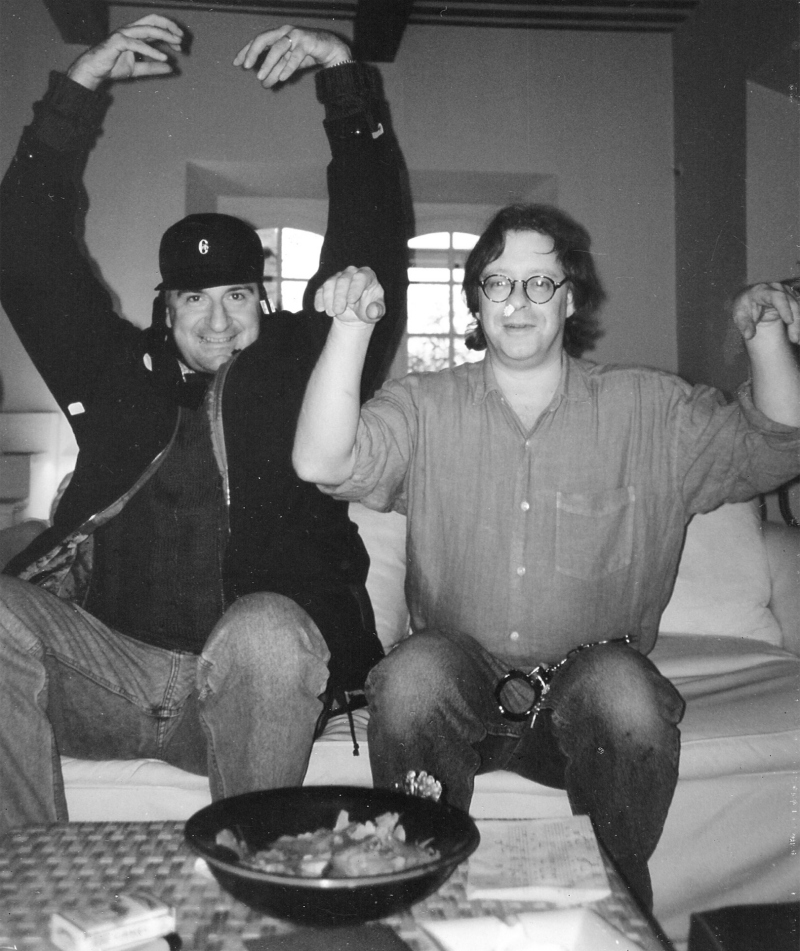

Box cover art
This book covers the history of classic graphic adventure games by presenting exemplary members of the genre. It is also an experiment.
An experiment, as this book may only be mostly correct, but not completely so. That’s because these pages collect articles from the open, human-edited, and sharing-enabled online encyclopedia Wikipedia, which I partly edited and spiced up for the book. At Wikipedia, for most articles, everyone can just click Edit and make changes, for better or worse (usually for better, which is why Wikipedia, on average, is such a great encyclopedia). I hope you enjoy the results of that editing process as presented in this book, while taking it for what it is: a snapshot of articles in eternal motion, articles which undergo new edits and corrections as I write.
I’m a big fan of the genre of adventure games. One of the earliest graphic adventures I can remember playing was Sierra’s Leisure Suit Larry. (As kids, we weren’t making it far in the game, though... the maturity of the topics covered in Larry Laffer’s life were over our heads at the time.)
Some of the first graphic adventures I enjoyed solving right to the end were by Lucasfilm Games, now known as LucasArts. Instead of a text input field, these games presented a point-and-click interface. Lucasfilm games also had a focus on not letting you get stuck. Getting stuck, say, because there’s a locked door in front of you... but you forgot to pick up the key to it earlier on, and now can’t go back. In some of the games, like The Secret of Monkey Island, it was even impossible or very, very hard to die.
The joy of solving a tough puzzle – sometimes alone, sometimes together in front of the computer with your friend – was great. So was entering new areas in the game, discovering fantastic art work, novel characters, and fresh background music. Finishing a game right to the end was not always common though, depending on the game. I remember playing Maniac Mansion or Zak McKracken for endless hours as a kid and young teen, exchanging tips with friends, but never even getting close to finish it. Other series, like Monkey Island, were more feasible to finish.
(As adults, a friend and I went back to play Maniac Mansion again, this time with the explicit goal of finally making it to the end. We did!)
Now, let the experiment begin. What follows are by and large pages based on copies of articles from Wikipedia, with my own edits, moves, cuts and fades – and including further interviews and images –, but mostly cooperatively written by the many thousands of authors around the world. Authors who, perhaps, and perhaps like you, shared some of the same magic when they were playing these games years ago.
Graphic adventure games are a form of adventure game, distinct from text adventures. Whereas a player must type commands such as “look” in text-based adventures, graphic adventures revolutionized gameplay by making use of somewhat more natural human perception. Eventually, the text parser interface associated with older adventure games was phased out in favor of a point-and-click interface, i.e., a game where the player interacts with the game environment and objects using an on-screen cursor.
Graphic adventure games were introduced by a new company called On-Line Systems, which later changed its name to Sierra On-Line. After the rudimentary Mystery House (1980), and the first color adventure game Wizard and the Princess (1980), they established themselves with the full adventure King’s Quest (1984), appearing on various systems, and went on to further success with a variety of strong titles.
In 1984 a new type of adventure games emerged following the launch of the Apple Macintosh with its point-and-click interface. First out was the innovative but relatively-unknown Enchanted Scepters the same year. In 1985, ICOM Simulations released Deja Vu, completely banishing the text parser for a point-and-click interface. In 1987 the well-known second follow-up Shadowgate was released, and the company known today as LucasArts entered the field with Maniac Mansion – a point-and-click adventure that gained a strong following. A prime example of LucasArts’ work is the Monkey Island series.
In 1988, Sierra On-Line created Manhunter: New York. It marked a major shift for Sierra, having used a text parser for their adventure games before.
Later on, graphic adventure games were quick to take advantage of the storage possibilities of the CD-ROM medium and the power of the Macromedia Director multimedia-production software. Games such as The Journeyman Project, Spaceship Warlock and Iron Helix incorporated pre-rendered 3D elements and live-action video. By 1993, Myst represented a major milestone for graphical adventure games. It featured a first-person viewpoint and reached 6 million sales, making it one of the best selling PC games of all time.
The genre has since seen a relative decline. Reasons for the decline involve the ability for computer hardware to play more graphically and gameplay-advanced action games such as first-person shooters, or multiplayer online games. The popularity and sales of adventure games have made publishers less inclined to fund development teams for fear of bad sales.
In more recent times however, independent users have created many smaller graphic adventure games in Adobe Flash, a browser plugin delivering animations, sounds and more. Many of these games challenge the player to interact with objects in an environment, forming very short and basic point-and-click adventure games. (A popular sub-genre is known as “escape the room” games.)
Added to that, the graphic adventure genre has seen a rebirth with the introduction of new videogame hardware like the Nintendo DS handheld console, and the Wii, which allows the gamer to interact with the game in new and innovative ways. Some of these new play styles were naturally applicable to the method that adventure games are played; as a result, many developers have created new graphic adventures for these platforms.
In May 1982, the LucasArts Entertainment Company was founded as the video game development group of Lucasfilm Limited, the film production company of George Lucas. The company would become famous for its innovative line of graphic adventure games, the critical and commercial success of which peaked in the early 1990s.
In the beginning, LucasArts cooperated with Atari to produce their games. The first results of this collaboration were unique action games like Ballblazer and Rescue on Fractalus!. Beta versions of both games were leaked to pirate bulletin boards exactly one week after Atari received unprotected copies for a marketing review, and were in wide circulation months before the original release date. Lucasfilm’s next two games were Koronis Rift and The Eidolon. Their first games were only developed by Lucasfilm, and a publisher would distribute the games. Adventure game Maniac Mansion was one of the first games to be published and developed by Lucasfilm Games.
In 1990, in a reorganization of the Lucas companies, the Games Division of Lucasfilm became part of the newly created LucasArts Entertainment Company, together with Industrial Light & Magic and Skywalker Sound. Later ILM and Skywalker Sound were consolidated in Lucas Digital Ltd. and LucasArts became the official name of the former Games Division.
Before concentrating almost exclusively on Star Wars titles, LucasArts was known for their point-and-click adventure games, nearly all of which received high scoring reviews at the time of their release. With a few exceptions, their style tended towards the humorous (often irreverent or slapstick humour). Their game design philosophy was that the player should never die or reach a complete dead-end, although there have been exceptions to the former (such as Maniac Mansion, both Indiana Jones games, and one situation in The Secret of Monkey Island that can be considered an easter egg).
Common features between the games include in-joke references to both other LucasArts games and Lucasfilm productions, including the number 1138 (see THX 1138 in the glossary), quotes such as the phrase “I have a bad feeling about this”, as well as other running gags – like Chuck the Plant – that spanned numerous games. Another feature, used in several of the games, was to allow the player to control more than one character, often being able to switch between them at will. For example, in Maniac Mansion the player has control of a group of three kids with complementary skills and weaknesses, while in Indiana Jones and the Fate of Atlantis the player gets to play as both Indiana Jones and his partner, Sophia Hapgood.
The first adventure game developed by Lucasfilm Games was Labyrinth (1986), based on the Lucasfilm movie of the same name. ICOM’s Deja Vu inspired the 1987 title Maniac Mansion which introduced SCUMM, the scripting language behind most of the company’s later adventure offerings. The adventures released in the following years, such as Zak McKracken and the Alien Mindbenders (1988), Indiana Jones and the Last Crusade (1989) and the critically-acclaimed The Secret of Monkey Island (1990), helped Lucasfilm Games build a reputation as one of the leading developers in the genre. It was often referred to as one of the two big names in the field, competing with Sierra On-line as a developer of high quality adventures. The first half of the 1990s was the heyday for the company’s adventure fame, with classic titles such as Monkey Island 2: LeChuck’s Revenge (1991), Indiana Jones and the Fate of Atlantis (1992) and the Maniac Mansion sequel Day of the Tentacle (1993).
In the latter half of the 1990s, the popularity of adventure games faded and the costs associated with game development increased as high-resolution art and CD quality audio became standard fare. The PC market wanted titles that would show off expensive new graphics cards to best effect, a change replicated in the home console market as the 3D capabilities of the PlayStation, Sega Saturn and Nintendo 64 dictated the nature of the majority of games produced for those platforms. The adventure genre – two-dimensional, focused on story, script and puzzle solving – was no longer popular with the masses of new gamers.
LucasArts still managed to release commercially moderately successful titles: The Curse of Monkey Island (1997) was the last LucasArts adventure game to retain traditional two-dimensional graphics and point-and-click interface. Grim Fandango (1998) was LucasArts’ first attempt to convert 2D adventure to a 3D environment. The game interface suffered most from this conversion, with control of the protagonist becoming unwieldy and less intuitive than with the traditional mouse interface. However, the highly stylised visuals, superb voice acting and sophisticated writing more than made up for this flaw, earning Grim Fandango many plaudits, including GameSpot’s Game of the Year award.
Escape from Monkey Island (2000), the fourth installment to the Monkey Island series, featured the same control scheme as Grim Fandango and was generally well received. It is to date the last adventure game the company has released. A sequel to Full Throttleand a new Sam & Max game were in development but these projects were canceled, in 2003 and 2004 respectively, before the games were finished. When the rights to the Sam and Max franchise expired in 2005, the creator of Sam and Max, Steve Purcell, took ownership. He then licensed Sam and Max to Telltale Games to be developed into an episodic game. Telltale Games is made up primarily of former LucasArts employees who had worked on the Sam and Max sequel and were let go after the project was canceled.
The release of the unofficial SCUMM virtual machine, ScummVM, has led to something of a resurgence for LucasArts adventure games among present-day gamers. Using ScummVM, legacy adventure titles can easily be run on modern computers and even more unusual platforms such as video game consoles, mobile phones and PDAs.It is believed that after the cancellation of Sam & Max 2 and Full Throttle 2, the adventure game era of LucasArts had officially ended, as there is no intention of returning to the genre until the next decade. This would also coincide with a large layoff at the company, although representatives would insist on it being a “major restructuring”. Many people who had worked on former LucasArts adventure games have successfully continued on to other projects or have in some cases started their own companies. Tim Schafer became the mind behind Psychonauts when he and several other LucasArts employees left in 2000 to form Double Fine Productions. A number of LucasArts employees formed Telltale Games after the 2004 cancellation of Sam & Max: Freelance Police. Another group of LucasArts alumni led by Bill Tiller founded the adventure studio Autumn Moon Entertainment to work on A Vampyre Story, and LucasArts veterans Mike Levine and Larry Ahern created the label Crackpot Entertainment, which has thus far developed Insecticide, a story-driven action/adventure game that is reminiscent in spirit of the classic LucasArts adventure games.
To this day, there are video game critics who view the company’s decision of dropping the adventure games in favor of Star Wars and Indiana Jones titles as a decision of quantity over quality.
Box cover art

In the Labyrinth

“You won’t ever find your way out”

An Escher-style maze, as was also shown in the film


In 1986, Labyrinth: The Computer Game was released for the Apple IIe and the C64, among other systems. Developed by Lucasfilm Games and published by Activision, it was a graphic adventure inspired by the Jim Henson fantasy film, Labyrinth. It was the first adventure game to be developed by the Lucasfilm development house, and as such it can be seen as a more primitive precursor to the development of the later SCUMM game engine (as such it is also one of the few adventure games made by the company to not use a variation of the SCUMM game engine, the other games being the GrimE-based Grim Fandango and Escape from Monkey Island). The game engine and graphics are very similar to a later work by Lucasfilm Games called Habitat.
Labyrinth is a menu-driven adventure game, played from a third-person perspective. The game begins by asking the player their name and gender; the game then opens as a text-based adventure and later evolves into a graphic adventure.
Before the film Labyrinth came out, Lucasfilm Games was offered the opportunity to do a game based on it. Since the film was produced by Lucasfilm, this wasn’t too much of a surprise, except it was the first time Lucasfilm Games actually did a game based on a film.
It was decided that a team would fly to London for a week of brainstorming on the design. There they’d meet with Douglas Adams (famous as the author of The Hitchhiker’s Guide to the Galaxy series). Members of the team included Steve Arnold (Lucasfilm Games General Manager), Brenda Laurel (Activision producer), Charlie Kellner (Lucasfilm Games lead programmer), David Fox (Lucasfilm Games designer/project leader), and Christopher Cerf (writer, known for his work on Sesame Street and other Children’s Television Workshop projects, also a friend of Jim Henson’s – the writer/director of the film).
Douglas Adams had a good many ideas, many of which made their way into the final game, including the suggestion that the game open as a typical text adventure, a genre still popular at the time. Then, when the player gets into the movie theater playing the film, Labyrinth, the screen fills with David Bowie’s image (as Goblin King Jareth), and the player enters the full color universe of the Labyrinth. From that point on, it’s a graphic adventure.
The team came up with a “slot machine” text interface to drive the game, rather than typing text like other adventures of the time. There were two vertical strips of words next to each other. The one on the left had verbs (like pick up, give, use), and the one on the right had nouns (objects in your inventory, and objects in the vicinity). You chose a word from each to tell the game what to do.
Adams really liked the word “adumbrate,” a rather obscure verb meaning “To prefigure indistinctly; foreshadow”. So it ended up on the verb list. This obscure word was used in an even more obscure puzzle at one point in the game – you had to “adumbrate the elephant” when you were stuck in a prison, and an elephant would come and break a hole in the wall, freeing you!

The box cover art by Ken Macklin. Dave, second from the left, is wearing a shirt revealing the letters “ASFI” from “LucasFilm”.

The back cover explains “no typing ever” is needed, and quips, “Pardon the mess... it’s all those brain donors.”

Choose your character in Maniac Mansion


The Seckrit Lab is in reach

A Zak McKracken poster in the game

Syd, under the house

Michael in the bathroom

A screenshot from the Famicon version

The unofficial, fan-made Maniac Mansion Deluxe, with Chuck the Plant
Maniac Mansion was originally released in 1987, created by Lucasfilm’s Ron Gilbert and Gary Winnick. Since then the game has become known among video game players and programmers for its highly-acclaimed gameplay and its introduction of new ideas into gaming, including multiple possible endings, multiple user-selectable characters with significantly different abilities, and critical clues contained in numerous cut scenes.
Maniac Mansion was the game for which the SCUMM engine – the “Script Creation Utility for Maniac Mansion” – was created and named after. SCUMM went on to be used by LucasArts for ten more years to create 13 original titles. Maniac Mansion is the first game to feature Chuck the Plant, found in the library.
It has been twenty years, to the day, since a mysterious purple meteor came hurtling out of the sky and made a large crater in the front lawn of a huge Victorian-era mansion belonging to the Edison family. Dr. Fred, his wife Nurse Edna, and their son Edward “Weird Ed” Edison were reclusive people who left the house very rarely, but the meteor’s arrival brought about a strange change in Dr. Fred. The family were seen even less, and even their mansion fell into disrepair. Lately, patients from the local hospital have begun to disappear without trace.
Now, a local teenage cheerleader, Sandy Pantz, has been kidnapped. Dave Miller, her boyfriend, saw her being carried off to the Edison’s mansion and has gathered a few of his college pals on a rescue mission to invade the mansion and save Sandy. The player can select the friends from a group of six, and the game would play somewhat differently depending on which friends are selected. The game was a parody of the horror B-movie genre, featuring a secret lab, disembodied tentacles, and an evil mastermind..
Maniac Mansion was notable for its multiple possible endings, depending on which characters the player used (and which ones survived) and what those characters did. For instance, you can send the adversary off into space, or have him arrested by the Meteor Police, or make him famous by having his autobiography published, or feed him to the mutant plant. Unusual for Lucasfilm games, it is quite possible to get the player characters killed (though largely only from severe mistakes on the player’s part) and the loss of all characters also loses the game.
The game was somewhat notorious for featuring red herrings, such as a chainsaw for which there was no fuel, despite many wishful rumors to the contrary. In one of the in-jokes that are a hallmark of the LucasArts adventure games, the second SCUMM game, Zak McKracken and the Alien Mindbenders, contains some fuel “for chainsaws only”, but no chainsaw. Another red herring is the staircase in the library – with a sign reading “staircase out of order” – that appears to be a puzzle, but in fact there is no way to fix it or cross it.
In an interview with GameSpot.com, co-creator Ron Gilbert gave an insight into some of his approaches towards gameplay: “I wanted Maniac Mansion to do something that involved a complete connection between the player and the game. I didn’t want them struggling with me as the game designer, but with the game’s own world. I wanted it simple and as direct as I could get it to be. No keyboard.... Everything about using the cursor on the screen. Maniac Mansion had all the verbs laid out on the screen.”
Also, Ron says: “Often [in adventure games] there are what I call ’backwards puzzles’ where you find the solution before you find the problem. For instance, if you find a key before you find the door it unlocks, where’s the puzzle? It’s obvious what you do. But if you find the door first, then you have a puzzle.”
In the book Rogue Leaders, author Rob Smith tells of the beginnings of Maniac Mansion. “Ron Gilbert and Gary Winnick had generated the idea for Maniac Mansion ... through a joint affection for B-movie horror tales, a suitably quirky sense of humor, and numerous brainstorming sessions. Gilbert was the gamer, Winnick the artist. Gilbert was frustrated with text-driven adventure gaming, and was interested in a more graphical adventure; Winnick drew a picture of a spooky mansion with a sign that read, ’Trespassers will be horribly mutated.’”
Rob Smith says that Gilbert thought it would be funny to create a parody of the old horror movie clichee: teenage kids entering somewhere that they shouldn’t, then being split up... and murdered one after another.
Ron in a GameSpot.com interview declared, “I like funny things and I do humorous writing, so, to some extent, it was a natural way for me to express myself. However, it was also very conscious. You see, it’s really hard to do an adventure game and keep it dead serious. Players get upset when, for instance, they are in a world where there is only one pencil. Suppose I’m in LA and I can’t solve a puzzle because I need a pencil that was in New York and I didn’t get it when I was in New York. You see? It’s kind of silly to think that there are no pencils in LA, but in many adventure games, that is how the world seems to be. Using humor lets you turn a weakness into an advantage. You can use crazy ideas to solve puzzles, and when the situation makes no sense, people don’t grumble about it. If they are laughing, they are much less likely to groan and say, ’What was that all about?’”
Maniac Mansion has a total of seven possible player characters. The player controls Dave, the main protagonist, and two other characters, chosen from six additional characters, each of whom has their own distinct skills and quirks:
The titular mansion is owned by Dr. Fred Edison and his bizarre family. Most of the Edisons pose a threat and will throw the player into the dungeon (or kill them, in some instances) if they are spotted. The exceptions are Weird Ed, who can be coerced into helping the player, and the relatively harmless Green Tentacle. The list of characters:
Maniac Mansion was well received by critics. Computer Gaming World praised the game for being “composed in the best comic horror tradition”.
Numerous other games have referenced Maniac Mansion. Some of these include:
The game was originally released for the Commodore 64 and was the first game to use the SCUMM engine, allowing relatively quick ports to other platforms. The project leader was Ron Gilbert, and the game was designed by Gilbert and Gary Winnick. The game was scripted by Ron Gilbert and David Fox. Versions for the Apple II, Amiga, and Atari ST computers were also released. Maniac Mansion was ported to the PC with EGA graphics in 1988 (though it was also compatible with CGA and Hercules graphics).
In 1988, Jaleco released a version of the game for the Famicom in Japan; this version, however, featured vastly inferior graphics, with simplified non-scrolling backgrounds (many of the rooms, which featured elaborate details such as photographs and wallpaper patterns in Western versions of the game, were here presented as solid-colored screens devoid of anything except objects necessary to complete the game). Characters were redrawn in a more cartoon-like, super deformed style (apparently an attempt to make the game more palatable to Japanese audiences; many of the characters ended up looking like blocks with faces). This version used excessively long passwords which were 104 characters long to save progress.
In 1989, an enhanced version of Maniac Mansion for the PC with improved graphics was released. There was also a sitcom of the same name, very loosely based on the game, which aired from 1990 to 1993 on YTV in Canada and The Family Channel in the United States.
In 1990, a version of the game was published for the Nintendo Entertainment System (NES) in North America and Europe, but in a heavily censored form in order to comply with Nintendo of America (NoA) and Nintendo of Europe’s policy. However, NoA initially overlooked the ability to microwave the hamster to death. Many thousand copies of Maniac Mansion had shipped before NoA noticed and demanded its removal. As there was no second printing of the game, all North American cartridges include the hamster and the microwave. (The PAL region NES cartridges of Maniac Mansion have the hamster-microwaving ability removed.)
In 2004, fans released a remake called Maniac Mansion Deluxe, which runs under Windows, features heavily enhanced graphics, music throughout the whole game (borrowed from Day of the Tentacle), and fixes some bugs and inconsistencies found in the original release of the game, among other changes.
In the early 1990s, programmer Douglas Crockford, the man in charge of porting the game to the NES, wrote a memoir entitled The Expurgation of Maniac Mansion, which detailed his struggles with Nintendo of America during the process of converting the game. Throughout the early 1990s, the essay turned up in photocopy form and on numerous electronic mailing lists, eventually becoming widely available on several websites. In the essay, Crockford details the strict policy that NoA enforced in the early 1990s regarding its video games; essentially, he felt the policy held that all video games had to be completely family oriented, and could not contain anything that anyone could find offensive in any way (such as religious references, foul language, violence, or sexuality). From the memoir:
The mansion contains a number of arcade video games. One was called KILL THRILL. The name had to be changed. Doug Glen, our Director of Marketing, suggested that we change it to MUFF DIVER, which I thought was a pretty good idea. Unfortunately, I later became aware of the NES Game Standards Policy, which stated in part:
Nintendo will not approve NES cartridges...with sexually suggestive or explicit content
Yikes, MUFF DIVER had to be changed again. In order to minimize the impact on the artwork, I needed to substitute MUFF with another four letter word that was less suggestive that could make sense with DIVER. We settled on the word TUNA.
The standards go on to prohibit
depictions of excessive and gratuitous violence,
which would seem to ban any game in which your character met people, killed them, took their money, and then bought more weapons. But in fact most Nintendo games are still faithful to that theme, so we were unclear as to how to interpret Nintendo’s policy. In the Super Mario Bros games, which are considered clean and wholesome, kids routinely kill creatures, and the only motivation is that they are there.
Clearly, interpreting the standard requires skills beyond mine. There was stuff still in the mansion that I thought was suspect, but I couldn’t tell if it was out of bounds. (...)
The way cartridges got made at that time was you submitted a finished game to Nintendo with a letter of credit. If they accepted the game, they would tell you how many units they would manufacture for you, when, and at what price. We submitted Maniac, hopeful that our labors were completed.
A month later we got a report from Nintendo of America’s censors:
NOA has discovered the following problems with this program version:
1) There are several places in the screen text that could be felt to be offensive to NES players. Please ammend [sic] the following:
“For a good time EDNA 3444”
This message is written on the wall in the shower in Dead Cousin Ted’s bathroom. Obviously, you can’t have a good time in a Nintendo cartridge.
Crockford also documents how he justified keeping in a nude statue in the Edisons’ art gallery by claiming that it was modeled on a real Michelangelo sculpture. NoA acquiesced, on the grounds that Crockford remove non-existent pubic hair from the statue; because this could not be done, Crockford was ultimately forced to remove the image.

Box cover art by Peter Chan, showing Bernard escaping


The room of George Washington


In 1993, LucasArts released Maniac Mansion: Day of the Tentacle as the eighth game to use the SCUMM engine. The game was designed by Dave Grossman and Tim Schafer, and it was available simultaneously on floppy disk and CD-ROM. A sequel to Maniac Mansion, the game focuses on Bernard Bernoulli – the only one of the three playable characters that was featured in the first game – and his friends Laverne and Hoagie, as they help Dr. Fred Edison using a time machine to prevent Purple Tentacle from taking over the world. The game utilizes time travel and the effects of changing history as part of the many puzzles to be solved in the game.
The game, which takes place five years after Maniac Mansion, opens with Purple Tentacle becoming exposed to toxic waste from Dr. Fred Edison’s Mansion, growing a pair of arms and acquiring a thirst for global domination. Dr. Fred catches Purple Tentacle, as well as the friendly, non-evil Green Tentacle, and keeps them both in his basement before deciding that he will euthanize them.
That evening, Green Tentacle sends a plea of help to his old friend Bernard – a stereotypical nerd – who heads off to the mansion to rescue him, accompanied by his friends, Laverne, a slightly psychotic medical student, and Hoagie, a laid-back rock band roadie. Bernard frees Green and Purple, only for Purple to inform him of his plans of world domination and resume his conquering of the Earth. Dr. Edison attempts to send the three friends back in time using his time machine, which consists of a central unit made out of an old car and three personal travel units called “Chron-o-Johns”, made from Port-a-johns. By doing so, they can turn off the sludge machine which produced the toxic waste so that Purple Tentacle never ingests the waste in the first place, hence stopping him from taking over the world.
However, because Dr. Edison has used an imitation diamond as the power source, the machine fails, sending Hoagie 200 years in the past at the creation of the United States Constitution, leaving Bernard in the present, and dropping Laverne 200 years in the future into a Tentacle-controlled world where humans are treated as pets...
One of the aspects of Day of the Tentacle’s plot is that it gives the game player the opportunity to interact with several important historical figures from colonial America, namely George Washington, Thomas Jefferson, Benjamin Franklin, John Hancock and Betsy Ross. Their personality traits are exaggerated for comic effect. Their descendants (or at least characters that resemble them) can be seen in the other ages. Harold, seemingly a descendant of Washington, appears as a transvestite in a future beauty contest organized by the Tentacles. An apparent descendant of Ben Franklin makes an appearance as a novelty toy salesman and a descendant of John Hancock appears as a depressed inventor named Dwayne.
Day of the Tentacle follows the mouse-based, point-and-click two-dimensional adventure game formula, first established by the original Maniac Mansion. Players direct the controllable characters around the game world, and interact by choosing from a set of commands arrayed on the screen which can be applied to an object in the world. This was the last SCUMM game to use the original interface of having the bottom of the screen being taken up by a verb selection and inventory; starting with the next game to use the SCUMM engine, Sam and Max Hit the Road, the engine was modified to scroll through a more concise list of verbs with the right mouse button and having the inventory on a separate screen. This formula carried on to later games in the franchise, such as The Dig, Full Throttle and The Curse of Monkey Island.
In Day of the Tentacle, the player can switch between any one of the three playable characters at any time, though two of the characters must first be unlocked by the completion of certain puzzles. The three protagonists can also share inventory items amongst themselves (at least, those items that can be stowed in a toilet), a feature that plays into many of the game’s puzzles. Many puzzles are based on time travel and the effects of aging on objects, and the changing of the past as part of the solution. For example, one puzzle requires the player to send a medical chart of a Tentacle back to the past, having it used as the design of the American flag, then collecting one such flag in the future to be used as a Tentacle disguise.
In the original Maniac Mansion game, the playable characters can be killed by various sequences of events. LucasArts adopted a different philosophy towards its adventure games in 1990, beginning with Loom. Their philosophy was that the game should not punish the player for exploring the game world. Accordingly, in most of the adventure games released by LucasArts after Loom, including Day of the Tentacle, the player characters cannot die.
The whole original Maniac Mansion game can be played on a computer inside the Day of the Tentacle game, a practice that other game developers have repeated, but at the time of Day of the Tentacle’s release this was unprecedented.
Maniac Mansion was originally intended to resemble Maniac Mansion more closely, with the player allowed to choose from among six characters (who would have included a male poet named Chester, a female hippie named Moonglow, and Razor from the original game). This idea was dropped in preproduction to simplify the project. The art created for the character of Chester was eventually adapted for the characters of the sculptor twins in the final game.
Original music for this game was written by Clint Bajakian, Peter McConnell, and Michael Land, who each respectively wrote most of the music for the past, present, and future sections of the game. The soundtrack for the opening scene begins with the Ranz des Vaches melody, well-known for its inclusion in Gioachino Rossini’s William Tell Overture.
When Day of the Tentacle Co-designer Dave Grossman was asked about his favorite game in an interview with TellTaleGames.com, he said, “I’d have to go with Day of the Tentacle as my favorite – everything just seems to fit nicely with that one, art and music and characters and puzzles all working together to get the player to think like a cartoon character. It feels rounded and complete.”
On his philosophy towards game puzzles, Dave said, “Ideally, I want a puzzle to be just challenging enough that you feel clever when you solve it, but not so difficult that it crosses the line into frustrating. Frustration is not fun for most people. Mainly I find that the way a designer gets to the sweet spot isn’t by making the necessary mental leap any simpler, but rather by getting the game to articulate the nature of the problem with a useful level of clarity.”
Day of the Tentacle was well received at the time of its release, and still features regularly in lists of ’top’ games to this day. Adventure Gamers included the game as #1 on their 20 Greatest Adventure Games of All Time list. IGN rated it number 60 on their 2005 top 100 games list.
Adventure Gamers’ review rated the game 5 out of 5, stating “If someone were to ask for a few examples of games that exemplify the best of the graphic adventure genre, Day of the Tentacle would certainly be near the top”.

Cover art of Zak McKracken by Steve Purcell

The back cover of the game

The title screen of the game

The first room

“Sushi in fish bowl”, one of the many items in Zak’s inventory

Visiting England, from the Amiga version

A tomb

In the boss’s office


Elvis

From the inofficial sequel, Zak McKracken - Between Time and Space

From the canceled fan sequel Zak McKracken and the Alien Rockstars

The cover to the Japanese FM Towns computer version of Zak McKracken

The Japanese version
LucasArt’s Zak McKracken and the Alien Mindbenders was released in October 1988. It was the second game to use the SCUMM engine, after Maniac Mansion. The project was led by David Fox and was co-designed and co-programmed by Matthew Alan Kane.
Originally released on the Commodore 64, it was later ported to the Amiga, the Atari ST, and DOS with EGA graphics. There was also an enhanced version released for both the Commodore 64 and DOS. The final version of the game was for the Japanese FM Towns computer system. It featured redrawn 256 colour graphics, based on the original version’s, and a high quality digital soundtrack.
The story of the game is set in 1997, which means about 10 years after its production. In the game’s ’future’, all transactions are made via debit card (named CashCards in the inventory). TVs, though the size of modern real-life home theaters, are bulky and have large infrared sensors. Digital Audio Tapes are still a medium of music recording.
The plot follows Zak (the full name being Francis Zachary McKracken), a writer for the tabloid newspaper National Inquisitor; Annie Larris, a freelance scientist; and Melissa China and Leslie Bennett, two Yale University coed students, in their attempt to prevent the nefarious, alien Caponians. The Caponians have infiltrated society in the guise of a phone company, trying to slowly reduce the intelligence of everybody on Earth using dial tones.
Luckily, the Skolarians, another ancient alien race, have left a defense mechanism hanging around to repulse the Caponians, which just needs a quick reassembly and start-up. Unfortunately, the parts are spread all over the Earth ... and Mars.
The game was heavily inspired by the many popular theories about aliens, ancient astronauts and mysterious civilizations. The many places visited in the game are common hot-spots of relevant literature, like the pyramids of Egypt and Mexico, Lima, Stonehenge, Atlantis, a space cadillac with Elvis (really an alien) and eventually the Face on Mars. The general New Age feeling is emphasized as the player meets gurus and a shaman who holds the secret knowledge of everything. In another scene, the player helps convert an airport-housed bum to become a Hare Krishna follower.
The new age touch of the game didn’t came by accidentally. David Fox, lead designer and programmer, intended to make a more serious game, before Ron Gilbert and Matthew Alan Kane persuaded Fox to increase the comedy angle.
In an interview David said, “I knew I wanted to do something that had a lot of ’New Age’ concepts in it. So I spent a few days with David Spangler, a noted expert and author in this area. He lived in Seattle, so Mt. Ranier was one of the obvious locations in the game. We also came up with a lot of the other basic concepts. ... We decided we wanted to put every concept we could think of into the game – every spiritual or psychic mystery currently being explored. ... I then went back to California and worked out the game structure. But it was much more of a serious game at first. Too serious, in fact. So we kept everything in the original design, but changed Zak’s character and job. As a reporter for a sleazy newspaper, everything else in the game took a major 90 degree shift into bizarre territory, and the opportunities for humor became wide open.”
Rob Smith in Rogue Leaders writes,"It took [game creator David Fox] just nine months to complete the game, but he often worked until midnight and beyond to make it happen”.
David told Adventure-Treff in an interview, “It was by far the best working environment I’ve ever been in. Everyone was excited to be there, we had great collaborative sessions, brainstorming, philosophical talks about game design over lunch... It was a great group of very talented and dedicated people.” In another interview, David remarks, “[T]he fun part was coming up with wickedly funny ideas and sharing them with each other. The not so fun part was working 16 hours a day, then having to drive home from the [Skywalker ranch] at midnight on windy country roads filled with suicidal raccoons and deer. After 7 months of that, with 2 more to go, it wasn’t a lot of fun. Even being at the Ranch didn’t help!”
David says, “We all felt we had to live up to the high expectations surrounding our group, and give the world the best entertainment we could.” Just like a Lucasfilm Star Wars, the goal was to create immersive, self-contained universes. And in those days, David says, it was the project leaders and designers who came up with ideas for what the next projects would be. “They would go through a review process, and get thumbs up or down. It usually wasn’t marketing coming to us and saying ’we need three adventure games and one action game.’ I know this changed in the early 90s after I left the division.”
In 2005, David said in an interview translated at Zak-Site.com, “Back then we did have creative freedom – lots of it... Almost total freedom. Now, it looks like the types of games are being dictated from above”.
The “Zak McKracken Theme” originally composed by Matthew Alan Kane is a popular song for remixes and reinterpretations. Among the artists who have made cover versions of it are Martin Irigoyen, The Dead Guys, Puffy64, DJ Lizard, Razor and the Scumettes, and the German band Glückswald.
The original version of Zak McKracken had an extensive code system put into the game to fight video game piracy. Whenever Zak or Annie have to leave the United States to go to an international destination, a “Visa code” is required (it is not required to re-enter the United States). This visa code consists of entering four different images into a keypad that is consistent with one in the game’s instruction booklet. Prior to putting this code in, the game will dictate which four images to put in (ie. Section 5, C16). If the images do not match the ones in the program, and after 5 incorrect entries, Zak McKracken gets put into pirate jail and the game is over – although not before a lengthy and aggressive speech from the police officer about the dangers of piracy, including the line “I hope you ROT there!”
Some of the Zak McKracken in-jokes include:
Numerous Zak McKracken fans have turned to designing their own sequels. The first one to reach completion was The New Adventures of Zak McKracken by “LucasFan Games”, containing graphics from the Japanese FM Towns 256 color version, country-specific backgrounds from King of Fighters and some original art. Names of other planned sequels, like Zak McKracken and the Lonely Sea Monster and Zak McKracken and the Mushroom Kingdom, are also floating around the net.
One other sequel that was finished is Zak McKracken Between Time and Space. Released to the German speaking public in April 2008, it convinced Torsten Schoeps, project leader of yet another sequel in preparation (Zak McKracken and the Alien Rockstars), to can the efforts of that game since there was no place on the planet for a second sequel, and “the other team did such a great job”.
Says Zak’s creator David Fox in an interview with Adventure-Tree on the subject of fan sequels, “I’m continually amazed by this! We all figured the life of these games would be a few years at the most. By then, the old platforms would be gone, and people would move on to flashier and more impressive games. But we didn’t count on emulators, nor the loyalty and enthusiasm of all the players!” David adds that he’s “absolutely honored” that people remember the games and still like them. “And I think using existing games as a starting point to create new ones makes a lot of sense. That’s how I learned about games – by converting existing games to other platforms, and adding another level of polish in the process.”
While at Lucasfilm, Matthew Alan Kane helped with Maniac Mansion, and worked on creating Zak McKracken with David Fox. Today he lives with his wife Lee and their 7-year old daughter Sammi at the top of the Berkeley Hills with a view of San Francisco Bay and the Golden Gate Bridge. Matthew and Lee have worked together since 1991 and since the mid-90s have run a boutique multimedia development company, LaMa Media (lamamedia.com), developing websites, games, and all sorts of interactive media.
Back in 1981, you founded Pomme de Terre software. Was that your first company?
Yes... My good friend and roommate David Lawrence developed some Apple II software together way back in the early 80s. Pomme de Terre software (ya know, Apple of the earth) was our company. Our logo was a multi-colored striped potato with a bite taken out of it.
Our biggest project was a piece of software called Modzilla, King of the Programs. MIDI (the Musical Instrument Digital Interface) had just been developed and the Roland Juno-106 was the first synthesizer that allowed external control of its sound making circuitry via MIDI commands. Modzilla used that ability to create totally new and wild timbre based music with a ripoff (or homage) to the brand new Macintosh interface built on the Apple II.
Modzilla used 4 software based LFOs (Low Frequency Occilators) to control any of the elements of the Juno’s sound making parameters. You could make some totally wild and usable sounds, or you could play a complete Enoesque composition by holding down one key. It was possible to have the sound slowly change with the longest possible cycle not repeating for about 300 days.
Was Modzilla a success? Did Pomme de Terre have other products, too?
Well, Modzilla only sold about 2 dozen copies, but it was a complete success. Some folks from the Lucasfilm Game division saw a copy of the program and were blown away by it... especially our recreation of the Mac interface. That led directly to David and me being hired by Lucas to work on our first project there, GTV, Geography Television.
Pomme de Terre created a few other bits of software... some lame games and a simple music composition program called Create-a-Tune which was marketed by another company to schools.
What was the interview process at Lucasfilm like? And which year was that, 1985?
Pretty easy. David and I initally met with Doug Crockford (the father of JSON) at Kerner, Lucas’ facility in San Rafael. Then we showed off Modzilla to the rest of the Games Division. They were pretty impressed and called us back within a day or two to ask us to start work. Yes, I think it was in 1985.
Can you tell us a bit about Geography Television? What was this project about? And who did you work with on it?
GTV was a collaborative project between the National Geographic Society, Apple Computer’s Multimedia Lab, and Lucasfilm. NGS supplied the content and editorial direction, Apple supplied the hardware and technical direction, and Lucas supplied the software design and coding.
Doug, David and I developed a working prototype that used an Apple II and a LaserDisc to deliver lessons in Geography. The basic concept was to replace the classroom filmstrip (I’m not sure if you had those growing up... listen to the ’voice of god’ explain the image you see, beep, change the slide.) It was an interesting project, and was even released as a product at one point, but I only worked on the prototype. David saw it to completion.
How big was the Lucasfilm Game Division at the time? Did you work at Skywalker Ranch?
About half way through the GTV project the Games Division was moved from Kerner to Skywalker. It was quite a thrill for all of us geeks. Kerner is essentially an office park, Skywalker was heaven. At that time the Games Division was fairly small. Let’s see if I can name everyone... Noah Falstein, David Fox, Chip Morningstar, Randy Farmer, Doug Crockford, David Levin, Ron Gilbert, Aric Wilmunder, Gary Winnick... hmmm, who am I forgetting? Steve Arnold was our head guy.
What did the Skywalker Ranch look like?
At that point Skywalker was just the beautiful Victorian Main House and the 3 or 4 back buildings. Everything was supposed to look as though it had been there for 100 years. The Games Division was housed in the “Stable” – no horses, but it did look like a stable house. It was pretty cool being able to sit your office looking out the window at deer grazing and mountain lions wandering by. We even had a few rattle snakes visit the courtyard.
What computers did you work on?
For GTV we worked on Apple IIs. For the games we had Sun workstations, no graphics, and we’d output directly into a Commodore 64 for testing.

Zak’s theme, courtesy of Matthew

Mapping a maze

What was the next project you worked on?
I’m uncredited, but my next project was Manic Mansion. It was pretty far into production when the GTV prototype was finished. I started helping to “box” the rooms...create the walkable areas for the characters. I also started to learn SCUMM.
Could you give an example of what “boxing” a room consisted of?
Ron Gilbert (who is still a good friend and I consider one of the smartest guys I’ve ever had the pleasure of working with) developed all of the game building tools. The boxing tools would show a “room” from the game and allow you to create geometric areas that a characters feet were allowed to travel in. The goal was to make as few shapes as possible to describe the space. The SCUMM engine would use that data to keep characters on the ground as they walked around the world.
Can you describe SCUMM back in those days? Can we imagine this to be a scripting library or framework?
It was both a library and a framework. The real beauty of SCUMM was that it made writing a game like scripting a movie. I would take printouts home to work on and my girlfriend at the time (Leslie Edwards, a character in Zak who I’m sure we’ll touch on later) would be able to read the code and laugh at the jokes (or not laugh and offer suggestions). It’s pretty hard to imagine a non-programmer looking at ANY computer code and being able to follow it, but SCUMM was, and is very special.
Did you also provide game play feedback to Maniac Mansion? Was there game play testing conducted at Skywalker Ranch, like, to determine if a puzzle was too hard?
Yes, there was a bit of testing from hired playtesters, but not so much from the developers. The development teams were pretty small...for both Maniac Mansion and Zak there were just 2 coders and 2 artists. Other folks helped out, but it’s amazing what a small tight team can accomplish.
Was Zak McKracken your next project?
Yes. I took a bit of time off after MM, but Steve soon called me up and told me he had a new project. I think the original title was Ancient Astronauts.
What was your role in the creation of Zak McKracken?
Everything but original art :)
David Fox had generated the original design document which was for a pretty serious game trying to tie new-age ideas to alien visitors. But within a few days Ron and I pushed David towards a more humorous direction.
So I was involved in refocusing the original design, creating puzzles, coding, music, sound effects, tweaking the art...just about everything! I also think I came up with the name, but I’m not sure David agrees :)
How were the game details designed, was it in brainstorm sessions, was it by playing around with SCUMM, was it laid out on paper first? Or a combination of these?
By the time we sat down to code, I think most of the basic game flow had been designed through brainstorming sessions, but the details, many of the puzzles, and most of the jokes were developed as we worked on the game. About a month before release we actually hired a comedy writer (I think his name was Victor Cross) to come in and spice up the game. I think he wrote the National Inquisitor too.
Is it fair to say that back then, roles in game creation were more all-encompassing than they are today? Like no strict separation between design, programming, art, story, music...
Absolutely. We all worked together on everything. It was a true collaboration.
How many music pieces did you compose for Zak McKracken, and how were they tied to the game?
I think I composed about 6 or 8 pieces for Zak. The most popular is the main theme which plays over the opening movie, Zak’s dream. I spent way more time tweaking that sequence than any other part of the game. Other music was the Airport Music (based on John Denver’s “Leaving on a Jet Plane”, but slowed down so much it was unrecognizable.) The Mars Theme (base on Holst’s planets) and a bunch of ambient pieces.
All coding was then done in SCUMM?
Yes, every bit of it. The music was entered in to a C64 sound editor as Hex Digits!
Was there any Lucasfilm design handbook back then for what an adventure game should look like?
Absolutely not. We made it all up as we went along. Maniac Mansion had just come out and while it looked like it might be popular, we had no clue that folks would enjoy these games as much as they did.
The most important thing, and what we kept checking on was the level of “Funativity” – If it wasn’t fun, it wasn’t going in to the game.
Do you still remember one specific case of a plot piece or puzzle that was rejected due to scoring low “funativity"?
Hmmmm... I don’t remember one in particular, but one memory may shed some light on our process. One of the biggest disagreements we had concerned the 2-headed squirrel. We argued for days about whether or not the player should be allowed to kill it. Finally it was decided that you could, but when you visited the Ashram you would have to wait for 10 minutes (I think) as a punishment before you could talk to the Guru. If you left the Ashram and came back, your time would start over. I think some players really hated that :)
Heh. Generally speaking, just how did you decide when a puzzle is too hard, or too easy? It seems a tough task considering different types of players.
It was an impossible task, but the truth was that Lucas WANTED it to be too hard. Because of the distribution deal, Lucas didn’t make that much on each unit of the game sold. Where they made money was the hint books, which sold for $10 and probably cost less than $1 to print and mail, and the 900 number help line. I don’t know the actual figures, but I’m pretty sure they made far more from helping players solve the puzzles than on game sales. Not a model that would work today with the web :)
Interesting. Who else worked on the game? Who did the artwork, and how was the art created?
Gary Winnick did almost all of the character animation, and started the background art, but being overwhelmed Martin Cameron was hired to finish the backgrounds. I’m not sure what sort of paint program they used, but I know it was primitive. I think Ron might have built Gary an animation tool for MM that he used on Zak.
What was David Fox like to work with?
David was, and is great to know and work with. While it took us a little while to convince him to change the direction of Zak, once he was on board he was gung-ho all the way. While he directed the project, I never felt stifled in any way. I was given free-reign to try anything I thought would make the game better. We are still good friends and see each other every few months.
What were the considerations behind you and Ron wanting a more humorous direction for the game?
Two things. First, David’s original design didn’t seem like it would be much fun to make or play, and second, we started to get good feedback concerning the comedy angle in MM.
Was George Lucas involved in the project in any way, by the way?
Not so much. He came by perhaps a half-dozen times while we were working to see what was going on, but he didn’t contribute to the game in any meaningful way. As a matter of fact, whatever we showed him he would usually just say “Great!”. The joke at the ranch was that George had dozens of ways of saying “Great”, which could mean anything from “that’s horrible” to “that’s awesome”. You then had to wait until one of the guys close to him translated for you to know if he actually liked something.
I’ve read that one of the characters in the game, Leslie, was based on your then girlfriend. Is this true? And why did her hair color change when she takes off her helmet?
Yes, Leslie was my girlfriend at the time, and was also hired by Lucas as a playtester for the game. The hair color gag was based on the fact that Leslie changed her own hair color every week or so. She also lived on Mars Street in San Francisco! BTW, Melissa, the other girl on Mars was based on Ron’s GF, and Annie, the lead female character was based on David Fox’s wife, Annie.
Do you have any stories that illustrate what life and work was like back then at Skywalker Ranch?
Hmmm. Nothing comes immediately to mind... lots of nights on the couch... great meals... amazing group to work with... but not much money :)
How was Zak McKracken received after publication? Critically, commercially?
It was received amazingly well. I might have selective memory, but I can’t remember any overall critical reviews. There were some complaints about the difficulty of the puzzles, the copy protection system, and the CashCard, but people really seemed to like it. A lot of people commented on how huge the world felt since you could travel all over the globe.
Were cracked copies of games a big problem for a game’s commercial success at the time?
Not really. The copy protection sheet was supposed to be non-xeroxable – It was dark maroon paper with black printing. People bitched about it, but Lucas insisted on including some kind of protection. But I was never privy to the games receipts, so I don’t really know how much pirating might have cost them.
After Zak McKracken, did you work on further projects at Lucasfilm?
I did some sound effects for other games, but soon after Zak was done I met a physicist at a party who was on the design team for the Superconducting Super Collider and he offered me a job designing the control system... sort of a video game for physicists... at more than 4 times what Lucas was paying me. It was a pretty easy decision to leave.
In your further career, did you ever touch on graphic adventures again?
Not yet :)
Did you keep track of graphic adventures in general since then? For instance, did you play games like Monkey Island?
Actually I haven’t played Monkey Island, but I just asked [creator Ron Gilbert] to send me a copy last week! My daughter is totally into Pirates, and Star Wars... both without any influence from me.
Did your daughter ever play Zak McKracken?
She’s played it a bit, but it’s hard to compete with Lego Star Wars on the Wii... her current favorite game. Maybe when she’s a little older and has more patience :)
Are you surprised at the legacy of Zak McKracken? For instance, that there’s a fan made sequel, Zak McKracken - Between Time and Space?
Blown away. Thomas “Marvel” Dibke, the project leader for that game showed up at my house with his best friend and girlfriend 2 years ago. He had made a pilgrimage all the way from Germany just to meet David and me! I’m sure you’re aware that for some reason Zak’s biggest fan-base is in Germany. There’s some speculation as to why on Zak-Site.com.
Why would you think that is?
I’m not sure why Germans love Zak... perhaps they are more interested than most in stopping the world from becoming more stupid!
Peter Langston was the head of the Lucasfilm Games Division, and the first member of the group, starting in July of 1982. For the first two years of that organization he chose all the members. During that time, as Peter says, the team’s principal activities were to invent tools for game design and prototyping, and to produce the games Ballblazer and Rescue on Fractalus. In September 1984, Peter left Lucasfilm for a research position at Bell Labs.
Peter in 1986
What are you doing these days?
I’m playing music, running adult music camps, teaching at other adult music camps, and continuing with various software development at home (mostly related to music arrangement, composition, scoring, etc.). Oh yes, and at the moment playing through Grand Theft Auto 4... They’ve done an incredible amount of work to get NYC so well caricatured with so much detail. It’s no wonder the credits are longer than a major motion picture these days!
What were your considerations in picking the members of the original Games Division team?
I wanted visionary self-motivated people who could work as collaborators rather than employees. I didn’t look for games experience so much as willingness to try new ideas and be opportunistic, following interesting new paths as they were discovered. I saw part of my job as running interference for the group, to get us the time to experiment and try dead ends looking for those breakthrough paths.
What was the purpose of the Lucasfilm Games Division? Was it to create bestselling games, or more like research & development that could be fruitful for other Lucasfilm creations, or ...?
The initial charter was to find areas other than film in which the kind of high-tech expertise that the Lucasfilm Computer Division was bringing to bear on film could be brought to bear. I rapidly narrowed that to home games, arcade games, and theme park rides, and started hiring for the games parts.
Were there any indicators in the early days that Lucasfilm would delve into adventure games later on?
I assumed it from the start. It was merely chance that made the first games action games. I had already written an adventure game scripting language that ran on Unix systems ("Wander") and we could have just as easily started with something based on that, but the two most interesting ideas in the first round of suggestions were what became Ballblazer and Rescue on Fractalus.
Could you tell me more about Wander? And was it for text adventures or graphic adventures?
Wander was text although I had added hooks to show scene graphics. At the time I started Wander I was working on time-shared systems, so anything that could be done with a text stream would work best, and integrating graphics properly would require a rewrite.
Have you played any of the graphic adventures Lucasfilm later produced?
Yes, I have.
I’m a big Grim Fandango fan. I would like to have worked on that. It’s very stylish visually, and it has a very clever design, especially the way it got around the limitations of the time (e.g. facial expressions).
Somebody gave me a copy of Monkey Island when it first came out, but I didn’t have a PC at the time. When I did find a spare PC I played it, enjoyed it, entered some contest related to it, and won! It was sheer random chance, but it made for an interesting phone call when some unsuspecting person from LucasArts called up to tell me I’d won.
LucasArts sent me a pile of games recently, just to see what they’ve been up to, and they were good, but Grim Fandango still stands alone.
I was also pleased to see a credit to one of the people I hired (Noah Falstein) on a well-done adventure game (Return to Mysterious Island) even though he hadn’t worked on it. It’s nice when the people you helped along the way are generally recognized.
David Fox has been active in the computer entertainment industry since 1977, when he and his wife, Annie, founded the Marin Computer Center, the first public access microcomputer facility. He was creator or co-creator behind games like Rescue on Fractalus!, Zak McKracken, Maniac Mansion, Labyrinth, and Indiana Jones and the Last Crusade. Today, David’s homebase is ElectricEggplant.com, and he’s involved in consulting, multimedia, game design and more.
What are you working on these days?
Primarily, a non-game project... NewsTrust (NewsTrust.net). It’s a non-profit I’ve been involved with for the past 4 years. Members can submit and rate news stories from the web. We compile those ratings to give the story, as well as the publisher, a rating based on journalistic quality.
I’ve also done some game consulting with Disney in the past few years. No other game-related projects recently, though.
Then, I also produce/implement some Web sites and occasional multimedia work. I’m a big supporter of my wife’s work, AnnieFox.com. I’m her “in-house” techy guy :-)
Going back in time, what was your first involvement with computers?
That’s pretty far back. When I was in Junior High School (now called ’middle school’ here), I attempted to build a computer from instructions in a library book... it just had lights on top (binary) and a telephone dial to enter numbers. Unfortunately, it never worked very well...
Then in high school, I was able to leave campus a few times a week to take a computer programming class at the local junior college. We used paper tape to enter and save the code (ouch!).
Around which year was that?
Probably 1967-68. I assume it was when I was a senior in high school
When I got to college for real, UCLA, I started as an engineering major... and took another programming class. This time we got to use punch cards. A definite improvement over paper tape, since if you made a mistake, you could just replace one card instead of having to redo the tape. But still, you submit your stack of cards, and come back the next day to find out of the program ran! Not very user-friendly.
I ended up dropping out of engineering and moving to psychology... relocated to Northern California to go to California State College, Sonoma, where they had a Humanistic Psychology program. And one of the classes I took had a field trip to Stanford Research Institute. There I saw my first really interactive computer game... Space War, on a CRT. I was blown away... something had shifted for me... I absolutely wanted to be involved in some way.
That was probably 1972. But it took me a few more years to make the leap. I actually had a small private practice counseling people for a few years.
Then in 1976, I felt that there might be a way to combine my two interests... psych and computers... maybe I could create games that actually helped people know themselves better. So my wife, Annie, and I decided to open a public access computer center... it was a non-profit organization, Marin Computer Center.
We opened in the Fall of 1977 with 10 computers... 9 Processor Technology SOL-20s (S-100 bus computers with an 8080 processor, and about 8-16KB of RAM) and a bigger box, an Equinox computer, also S-100, 8080, but with more slots and room for expansion... and... a floppy disk drive!! The SOL-20s just had tape recorders to load data... these were off-the-shelf audio tape recorders. Really finicky... if the volume setting wasn’t exactly right, the program wouldn’t load.
So, we charged people $1.50 to $2.00/hour to rent time on our computers... we taught BASIC programming to kids and adults. We had schools come in for field trips.
Back then what did people think of when they heard “computer"? Probably not that thing you put on your desktop at home.
Right... they were probably expecting huge rooms full of flashing lights.
When we started, Annie, who usually ran the field trips, would ask the kids, “How many of you have ever touched or seen a computer?” and maybe 2 out of 30 would raise their hands. So just sitting down at a keyboard and touching it, and interacting with it playing games, was a big thing.
Some kids had Atari VCS 2600 game machines... others may have gone to the Lawrence Hall of Science, where they had a room of teletype machines connected to a minicomputer, where they could play games... but never on screens (at least not then).
Can you explain what it means to play on a teletype machine without a screen? You enter something, and the response is printed out?
Yes... could have been some simple adventure game with descriptive text. Some repeatedly printed out grids... like maybe checkers, Star Trek games... guessing games... Hunt the Wumpus.
Did you also create games at the time, for use in the Marin Computer Center?
At first we established a relationship with budding game companies... they’d send us their games (for free) for us to review in Creative Computing magazine. Got to know the Broderbund brothers, Gary and Doug Carlston, when they were selling games on cassette tapes in plastic baggies. Also got to know Scott Adams of [video game company] Adventure International.
We started taking Scott’s games and converting them from one platform to another. His games were initially for the Radio Shack TRS-80. We converted them to the Apple II and to CP/M based systems. Scott then paid us a royalty for the converted versions. And in doing that, I learned a lot about game design.
One game we originated was called “Mix and Match Muppets” and it was on the Apple II for Sesame Place – a small theme park based on the Sesame Street TV show.
Did you ever hear back from people who later as adults started working in the computer industry, but who visited the Marin Computer Center as kids?
Yes, absolutely. We run into people every once in a while... still get emails from adults who came to our center as kids. They thank us for getting them started on the path :-) Since this was before most people bought their own computers, and most schools didn’t have them yet, our center was one of the few places where they could use them. Steve Scherf, the founder of Gracenote [a big provider of music track info, used in products like iTunes], was a Marin Computer Center regular as a kid.
Here’s an email he sent me in 2002...
Hi David & Annie,
You probably don’t remember me, but I remember both of you. I was just a 6th grader at the time, and my mother used to bring me and my brothers to the Marin Computer Center once a week or so to let us fool around with the computers. We mostly played games, but somehow during that time I learned abit of BASIC programming (and the rather odd PILOT programming language), and I was hooked. I’ve been programming ever since. If it wasn’t for the Computer Center, I’m not sure I would be where I am today. Thanks! I recently did a web search, and found (not surprisingly) that both of you are still active in computers. I’m glad to see you’re still at it.
Regards, Steve
What did you learn from watching kids (and adults) use the computers?
Well, for one, good interface design... We could see when instructions weren’t clear. Could also see how intimidating they were to many adults, whereas the kids just jumped on them and played.
Heh. You left the center in which year? 1981?
That’s about right.
What did you work on then?
I started writing books in around 1979... one on [programming language] Pascal, and then one on computer animation, Computer Animation Primer (which has been scanned and is available for free at AtariArchives.org/cap)...
How did you get started with Lucasfilm?
There was a guy we met who used to come into the computer center... he worked at ILM. We’d see him every once in a while, and in 1982, he told me that Lucasfilm was going to start a games group. I knew this was what I wanted to do. In fact, at one point, Annie and I had thought we’d move out of the Marin area to find cheaper housing... maybe in Oregon. But I finally said, “No, if we do that, I’ll never be able to work for Lucasfilm.” So we decided to hang around.
So, as soon as I heard about this, I contacted Ed Catmull, the head of the Lucasfilm Computer Graphics Division. I had met him and some others from that group the year before while researching my computer animation book. We got some great photos from Lucasfilm for the book, and one of their chief scientists, Alvy Ray Smith, had offered to proofread the book for technical accuracy. The second half of the book focused on creating simple animation programs on the Atari 800 computer.
Ed put me in touch with Peter Langston, who they had just hired to head the games group. I got an interview with him, I showed him my just completed manuscript for my book. Since Atari and Lucasfilm had created an arrangement whereby Atari would get first right of refusal for the games the group was going to create, and my book was about their computer... seemed like a good match. So I got hired as the second outside person (after Peter).
One other guy, Rob Poor, was already working in the Computer Division, and he moved over into the games group. I started work there in the Fall of 1982.
How many were you at the time? The three of you? And what did you work on?
Right after I was hired, we hired David Levine... then soon after, Charlie Kellner. Loren Carpenter, who was already in the Computer Division, was loaned to us part time to help with the first game I did,Rescue on Fractalus!
We were given the directive to make two “throw away” games... as tests to see what we could do. If we liked the way the games were turning out, we could make them into production games. Dave’s game wasBallblazer . Since it was mostly done as a research experiment, there wasn’t a lot of pressure at first to have them be great. But as they shaped up, we realized we had some ground-breaking games on our hands.
What was your role with Rescue on Fractalus?
I was the game designer and project leader, and also one of the programmers. It took me a while to realize what a project leader was... and that I was it for this game. The coding I did was more in the gameplay parts of the game... scoring, tuning, managing the levels, doing the UI [user interface]. Charlie did the cell animation, flight dynamics, joystick controls, sound engine. Loren did the 3D fractal routines. Peter did the music and some of the sound effects. Gary Winnick also came on to do the animation.
Atari was then offered to publish the game, or how did this work?
Yes, pretty much. We demoed both games to them in the summer or fall of 1983. They were impressed. Unfortunately, we gave them copies of both games on unprotected floppy disks and soon after (within a week) they were both on the pirate BBSs [Bulletin Board Systems] so the games were both widely distributed via these bulletin boards. Even though they weren’t finalized yet, they were pretty close... just tweaks and more tuning. And the names then weren’t yet finalized. So I know where people got the games by what they refer to them as... Ballblaster (instead of Ballblazer) and Rescue Mission (instead of Rescue on Fractalus!).
I heard one story where someone applied at the Lucasfilm Games Division... mentioning one of the games under its pirated name! Tim Schafer [of Monkey Island, Day of the Tentacle and Grim Fandango], I think?
Yep. He was very embarrassed when he realized, and figured he’d totally blown his chance of getting a job.
How did these games do, commercially, and what was your next project at Lucasfilm?
I think they did ok, but not spectacularly... primarily because of the piracy, and also because it took another year for them to be released. That was because right after we introduced them at the Consumer Electronics Show, Atari got bought by Jack Tramiel, and all deals got renegotiated. I guess we weren’t happy with the terms, so we had to find a new publisher, which ended up being Epyx.
So by the time they came out, the Atari 800 was on the outs, being supplanted by the Commodore 64, and the games were no longer big news. Too bad.
The next two games were The Eidolon and Koronis Rift. Both reused the fractal technology, though improving on it. I wasn’t involved with either. My next game was Labyrinth, based on the film.
Labyrinth was really our first adventure game... even though it looked really different than the SCUMM games we’d do soon after. We knew we didn’t want a typical text parser interface.
So we came up with our “slot machine interface”... a couple columns of words that you could scroll and pair up to execute commands. Kind of clunky, but it worked.
The other thing we added was scrolling backgrounds and scaling cell animated characters. But the game was pretty much hand coded... there wasn’t a scripting language available in that game.
What was your involvement in Labyrinth?
I was one of the designers, and then became the project manager. We also had a technical project manager, Charlie Kellner.
One of the coolest parts was when a group of us got to go to London to brainstorm with Douglas Adams on the game. Douglas was good friends with the producers of the film (that our game was to be based on) and agreed to a week of brainstorming meetings. Also present were Christopher Cerf, one of the key contributors to Sesame Street, and from our side, me, Charlie, Steve Arnold (our general manager), and from our distributor (Activision) Brenda Laurel. Got to have dinner with Jim Henson too.
What kind of input did you get from Douglas Adams? And what were the brainstorming sessions like? Douglas had experience designing a text adventure for Infocom, right?
Right, he helped with Hitchhiker’s Guide for Infocom. Then I think he worked on another one. [The other game besides The Hitchhiker’s Guide to the Galaxy was Bureaucracy. As Wikipedia writes, “The player is challenged to confront a long and complicated series of bureaucratic hurdles resulting from a recent change of address. Mail isn’t being delivered, bank accounts are inaccessible, and nothing is as it should be. (...) While undertaking the seemingly simple task of retrieving misdirected mail, the player encounters a number of bizarre characters, including an antisocial hacker, a paranoid weapons enthusiast, and a tribe of Zalagasan cannibals."]
Of course, he had a really wild sense of humor. I think I was somewhat intimidated by the level of wit and creativity of several of the people there. The sessions would generally last most of the day, with breaks. Maybe 3-4 sessions in all. There were clearly some ideas that sounded great in the room that probably should have been omitted... A few of those “you had to be there for it to be funny” ideas... Adumbrate the Elephant [see the chapter on Labyrinth] was one.
Also, the idea of starting the game as a text adventure in the real world and then when you’ve managed to get into the movie theatre playing Labyrinth, you get sucked into a full-color graphic adventure... kind of an homage to Wizard of Oz (the movie) I guess. But I think it was more tedious than fun.
Changing the interface in the beginning of the game sounds risky. Did that confuse reviewers?
Not too much. I think they all got the joke, as it were. I ended up hating it because I had to playtest it so much!!
Note that even in the text adventure, we still had people use the slot machine interface... so that part really didn’t change.
How happy were you with the end result? And how was it accepted by players? Was it a success?
I think it was pretty well received... some people liked it better than the film. Its sales were not too high, maybe in part because the movie (at the time of release) wasn’t a very big hit. As a result, Activision didn’t put a lot into marketing the game. Now I think the film is somewhat of a cult favorite, with David Bowie, and 15 year old Jennifer Connelly... so there is a following for the game.
What was your next project at Lucasfilm? It’s 1986 now, right?
Next was Maniac Mansion. I think I was working on some other game designs when Ron Gilbert asked if he could “borrow” me for a month or two. He had a working version of the SCUMM engine ready and wanted me to do the scripting of the game while he continued adding more features to the tools.
The game was already pretty much designed by him and Gary Winnick... so I really wasn’t a designer. I was entering into a really wacky world that he had already created. I guess my experience doing Labyrinth, another world created by someone else, was good practice for that. Since none of the dialog had been written, that fell to me at first, though Ron also contributed several of the cut-scenes as we moved ahead in the project.
Gary would draw the rooms, I’d wire them up... creating ’boxes’ around each object, most of which probably had nothing to do with the actual game play. So I had free reign to make them interesting. I think that’s where Chuck the Plant came from... getting bored of labeling things with “Plant” or “Books”. If I remember correctly, Steve Arnold had a plant named Chuck... or maybe he just liked naming things Chuck. So this was in his honor. And of course, I don’t remember if it was me who named the plant Chuck, or Ron... never know for sure. Anyway, it took a lot longer than a month or two... I think I might have been working on it for closer to 6 months.
Do you still have some SCUMM code snippets lying around? I’d be interested in an example of what it was like working with SCUMM those days...
No actual snippets... I think the example I might have used was something like:
Walk Actor Zak to object Refrigerator
Wait for actor
Open refrigerator
Turn actor front
Say “Wow, it’s empty.”
Here’s an example with more correct syntax:
WALK ACTOR(ZAK) TO OBJECT(CREDIT-CARD)
WAIT-FOR-ACTOR(ZAK)
PICK-UP OBJECT(CREDIT-CARD)
SAY(ZAK)"Wow, a credit card with a two-headed squirrel on the front!”
Was that an example of a cut scene?
That might be a part of a cut-scene... they were usually much longer, though.
How would you define all the things that could be done to an object? Say, whether or not the microwave oven would accept a hamster...
Hmm... hard question after so long. I’m pretty sure we had some parameters or flags attached to objects later on, but I don’t know if we did early. Like there might have been a “is it a tool” bit set if you could use the object to pry something open (something we did in Zak). If not, then just a long if-then-else statement for each object.
So in the case of the microwave... maybe code checking to see if the object you were trying to use with it were a glass, a glass with water, a hamster. If not, then say “I can’t put that in there.” (Or say something different, depending on which kid you were controlling). Or something funnier, hopefully... “I can’t cook a chainsaw!”
Was Maniac Mansion the first graphic adventure to lay out the verbs at the bottom of the screen?
I think so. That, plus probably the first to combine that with being able to click on the objects on the screen, which was a big improvement over Labyrinth. You felt you had more direct control of the game, character, and actions that way.
It may also have been the first one to let you switch between different characters... controlling one kid, then switching to another. Definitely one of the first that used cut-scenes (a phrase coined by Ron).
I could imagine allowing the game to be played through with different characters in different ways is quite hard to implement, to make sure there are no dead ends or other logical inconsistencies...
Yes, it was a huge issue, and made the game several orders of magnitude harder to code and test. As such, I’m sure there are lots of dead ends.
Do you remember any big heated discussions of certain design decisions of Maniac Mansion?
Not really... lots of discussions... I might pose a question to Ron, or show there’s some inconsistency. But I was generally giving him some options, suggesting different ways we could do it, and then let him choose. I’d guess as the game progressed, I needed to do that less and less.
I do remember that the whole hamster in the microwave gag was mine. It wasn’t a part of the original story. I had a hamster... and a microwave... and a bunch of high school kids... seemed like a natural. Of course, not all of the kids would be willing to put the hamster in or turn it on. Anyway, I went to Gary and asked for a “state” of the microwave door with a blood splatter on it... I already had the ding. I wired it up, and called Ron in. Fun.
Your own hamster was never put into the microwave oven then?
Hah. Nope. Nor my daughter’s pet rat, Maple.
What were the biggest challenges creating Maniac Mansion? Besides the multi-character design, that is.
There were so many firsts in that game that it took a while to wrap my mind around it all. Ron’s brilliant, and he had been thinking about what he liked/hated about other graphic adventures, and wanted to address all those issues in this first game. Besides the interface, there were cut-scenes... a scripting language that got compiled to p-code [pseudo machine code] so it could be run on different platforms... multi-threading scripts...
For example, you might have a script attached to a clock on the wall. The script would be running in the background, and all it had to do was move the pendulum of the clock back and forth. Or a script for an automatic door that constantly checked if any of the actors were nearby so it could open. Or a script that gets launched when you open a certain door, so that 5 minutes later, the front doorbell would ring, and that would trigger a cut-scene. Really a fun system to work in.
Was there some kind of launch party when you wrapped it all up? And how was the game received?
Yeah, I’m sure. I don’t remember though about the launch party... I moved off the project before it was completed. Ron was left the task of polishing and fixing any remaining bugs. I do remember they had a packaging party. There was some urgency to get a bunch of boxes filled so they could be shipped. So a bunch of the team (not me) went to the warehouse and stuffed the disks, manuals, etc., into the boxes... I think it might have been an all-nighter. Pretty sure I remember the story of Ron stuffing a dollar bill in one, and having the team sign it :-)
How was Maniac Mansion received, from your recollection?
Great reviews. Innovative. Lots of kudos.
What was your next project at Lucasfilm?
Zak. I wanted to do another game using SCUMM. I also wanted to enlarge the playing area beyond a single building, so I expanded to the whole planet plus Mars! I liked being able to switch between characters, but didn’t want to deal with selecting various combinations of characters to make up the team. And I wanted it to be kind of a New Age game, featuring extraterrestrials, spiritual gurus, psychic stuff...
Steve Arnold had a friend up in the Seattle area, David Spangler, who was a noted psychic and spiritualist. He arranged for me to spend a few days with David, brainstorming ideas for the game. I came back with lots of great ideas, and then had to figure out how to make them all work together (much like I had to do after our Labyrinth brainstorm sessions).
Originally the main character’s name was Jason... he was a reporter, but for a mainstream newspaper. The game had some humor, but wasn’t at all wacky. Ron felt it wasn’t funny enough, and so we had a meeting with all the game designers and Steve Arnold. That’s where we changed the main character’s job to working for a sleazy tabloid, and found ways to stick in a bunch more weird things... His name came from searching through a Marin County phone book, combining a couple of people’s names.
Looking back at the early design doc (before the meeting) I saw that pretty much everything I had designed ended up in the game, but shifted a bit towards the crazy.
Soon after I started coding, I was able to bring in Matthew Kane as a co-scriptor. That was a lifesaver... it’s just too hard for one person to code it all. So we split up the world. Ron also helped by making some changes and improvements to SCUMM. For example, being able to re-use sections of a room to create “pseudo rooms”... we used that for the mazes in the game. So I think we only had one jungle screen, and I was able to turn on and off different openings to simulate being in different parts of the jungle, but with only one piece of art. Had to do tricks like that in order to fit the game onto one disk!
Who created the artwork for the game? And what was the process for this?
Gary Winnick, Martin “Bucky” Cameron... Looks like Mark Ferrari and Basilio Amaro also are credited. Might have been for later versions, though, when we upgraded the graphics to 256 color art.
Did you create concept sketches for every room?
Nope, probably none. Maybe some had white board diagrams. I worked with the artist on what was needed, and let them take over.
After receiving the art work, how did you integrate this? Did you have to do the “boxing"?
Yes. Pretty much the same technique as with MM [Maniac Mansion]. We also had to show where the actor could walk in a room, using what we called ’walk boxes’. That allowed you to click somewhere across the room, and the actor could make his way to it, walking around barriers, etc., a brilliant scheme (again, Ron’s code).
In some of the games by Sierra, you could walk around freely in a room. Do you consider that a pro or con?
A con if you have to steer the character step by step. We felt that since in real life, you didn’t have to use a lot of skill to walk from one end of the room to the other without getting stuck behind the couch, that you shouldn’t have to deal with that as a problem in a game which is supposed to be fun, not frustrating.
I think I remember a Sierra game where you’d die if you fell off of a staircase. I know in real life I can generally walk up stairs without falling off. That’s not what’s supposed to be fun about an adventure game (developing in-game stair climbing skills). In our games, if there were no objects in the middle of the room, you could still walk around freely. You’d just click on where you wanted to go, and your character would walk there.
We generally wanted to streamline out the parts that really weren’t fun. Like guessing the parser... what word did the programmer have in mind for that rock over there... rock? stone? boulder? That’s not fun. Just click on it and the name appears in the interface.
What do you think makes a good puzzle? What was your approach to designing the puzzles in Zak?
A good puzzle is one that you should be able to figure out without a hint book. You should have the context, all the info, and then be able to take a mental leap to the solution in order to get the emotional payoff. A good puzzle should always make sense. If you get stuck, then find the solution either through trial and error or through looking up a cheat/hint, and then say, “Oh!! I should have figured that out.” then it’s still a good puzzle. But if you say, WTF! No way could I or anyone else in the known universe have figured that out, then it’s not a good puzzle.
Some of Zak’s puzzles were probably not so good. Some I liked a lot. One of my favorites is how to get breadcrumbs for the bird... (spoiler alert: you have to use a garbage disposal as the food processor).
Did you watch people playing Zak during development, in order to adjust the level of difficulty?
Yes... we also got feedback from playtesters. You have to keep bringing in new ones to judge difficulty levels. One way to adjust is by adding more clues or hints inside the game... for instance, through dialog. We also had an issue of Zak’s newspaper we packaged with the game that had lots of hints.
In retrospect, is there anything you’d do different with Zak McKracken?
Yes, a few things. For one, lose the mazes. They were intended to make the game feel larger, but I think I got carried away by having so many. I was enthralled by the new feature we had added (pseudorooms) and over-used it, creating frustrating mazes that ended up not being a lot of fun... unless you liked frustrating mazes.
And the jungle maze... that was probably mean of me. It really wasn’t mappable. You just had to keep going... no backtracking... to get out. If you walked through any two openings (other than the one you just came through) you’d be out. It was all random. I think I might have hinted at that with Zak’s comments, but probably not enough.
I also saw feedback that some people felt the ending wasn’t a big enough payoff, but I don’t think that was a universal concern. And a big one... figure out ways to avoid any dead ends. We had a few. And lose the security system; every time you took a flight outside of the US, you had to use your hint book to enter a code. That got old really fast. I think we could have made it happen 1 in 4 times, for example. There were probably others, but those are the ones that come to mind.
Entering the code was for copy protection?
Yes. We figured it would be broken at some point, but wanted to put that off. Problem is, with that kind of copy protection, you’re punishing those that actually paid for the game!
Did you get royalties on sales for the game, by the way?
Me personally? No. During the time I was creating games there, they never paid royalties to any of the full-time staff. That may have changed in the 90s, but I have no idea what they’re doing now.
Have you seen the unofficial Zak McKracken fan sequel, Between Time and Space?
I haven’t played it, just seen screen shots and some cut-scenes. It would be great if there could one day be an official sequel... maybe LucasArts will decide one day to do so. Would be interesting to see how Zak would transform into today’s technology. (Hint hint... Zak fans out there, write emails to LucasArts asking for a sequel!)
That would have to be in 3D, right?
Maybe...
In 3D, sometimes some of the things you mentioned – like walking up a staircase – are harder, though...
Not necessarily, though. I have to confess, I haven’t played any adventure games for years, so I’m not current with where the UI has gone. The last ones, from the 90s, managed to use 3D and still keep navigation straightforward, at least to some degree. And you could still have a railing on a staircase... just like in real life.
Are you surprised people still fondly remember Zak these days, that there are fan sites dedicated to it and so on?
I was absolutely floored when I first learned of this about 10 years ago... how people created ScummVM to allow them to play all of our old games on today’s platforms, including mobile phones, Nintendo DS... pretty much anything that has a computer chip inside.
We figured our games would have a shelf life of a year or two, and then would be forgotten. Never occurred to us they’d survive, and be appreciated(!), way beyond that.
After Zak McKracken, was your next project Indiana Jones and the Last Crusade? What was your role in the creation of Indy?
Yes. Noah Falstein was going to do the design and be the project leader. But about a month into the project, we got the directive to have the game ready to go close to the time when the film was going to be released. That gave Noah about 6 months. So Steve Arnold pulled in both me and Ron to co-design the game with Noah, as well as implement it. It was a great team effort... we had daily meetings, brainstorming, working out how to capture the essence of the film. But we also didn’t to require you to see the film in order to play the game.
Early on, we had a meeting with Steven Spielberg and George Lucas. We asked them what parameters or restrictions we might have. For example, could we kill Indy in the game (yes, we could). And could we wander off script (yes – as far as we wanted to). There was probably something said about staying true to the Indy character, but that was really a given for us, having been in the company long enough to know that we wanted to honor their characters and stories. But that didn’t mean we couldn’t load the game up with lots of in-jokes, etc. Chuck the Plant somehow made it in :-)
Did George Lucas or Steven Spielberg check the progress of the game from time to time, or suggest amendments in-between?
Nope. We did get access to the script, and saw some photos of the sets... we needed those so our artists could duplicate them. And we saw an early screening, but by the time we saw that, the game was completely designed. Because we designed the game based on the original script, there were scenes in the game that never made it to the movie. Like the radio room in the Zeppelin. Probably others as well.
George isn’t too much of a game player, but Steven was. When the game was completed, he played all the way through, with occasional phone calls to Noah for hints. Wouldn’t it be nice if any game player could call the designer on the phone for a hint?
Was there already a strict “no dead ends” rule when Indy was designed? I believe it was in for the Monkey Island games later on...
Pretty much... not a rule from management, but it was ingrained in our own design sense.
One thing we did differently with that game... since there were multiple ways to complete some of the puzzles, we kept track of each way you solved it, and assigned “Indy Points”. I think there were a total of about 800 points you could earn, but no way could you earn them all by playing through the game one time. So you could then replay it, and try other solutions to earn the rest of the points. For example, punching out a guard vs. sweet talking him vs handing him something he needed...
The first time I played Indy to the end, I picked the right grail, and figured I understood the solution to that puzzle (like, pick the cheapest looking one). But when I tried to finish it again it didn’t work anymore...
You must have gotten lucky that first time... any one of those grails could have been the right one. The correct one was chosen randomly at the beginning of the game, and then different hints are provided via books in the Venice library, notes in Henry’s book (I think), and the painting in the castle.
Oh. :)
But most people probably just guessed... trial and error. You got lucky.
How was the art created back then? Was it scanned, or all created on screen?
No scanners then, so all created on screen by real artists :-) They had reference art, and then did the best they could to capture it as if it were a painting. Indy was the first SCUMM game that we did first on the PC, and as such, we had a bigger color palette to work with, with fewer restrictions, than on the C64. So the art was a lot nicer.
When did you learn that there were problems with using images of swastikas for the German market?
Good question. I think we knew about it while making the game, but didn’t want to pull back. Since it was released in Germany, we must have created separate art for some of the scenes... [also see the interview with Boris Schneider]
Were you involved in other adventure games at Lucasfilm after that?
After Indy, I was given a new job title, Director of Operations. I managed all the designers, programmers, artists, QA, customer support. We were growing fast, and we needed more people in each of these departments, so I ended up hiring heads for each, and then helped manage them.
Around which year was that?
1990. The job lasted for a year until I was able to get a replacement. That probably coincided with Monkey Island... I attended at least one brainstorming session, a play test session, but not much else direct participation in the game. I also helped hire our new group of SCUMM programmers, our SCUMMlets, and helped start up our SCUMM U (university) to help train them.
In 1990-1992, I left LucasArts and moved over to a new, small, group in Lucasfilm called Rebel Arts and Technology (RAT). We were working on location based entertainment projects... intended for theme parks. Interactive, vehicle simulators. This was a collaborative project with Hughes Simulation.
This was actually what I wanted to be doing when I first started working at Lucas... I wanted to help create an interactive Disneyland. I designed several games, in concept form, and got to implement part of one as a proof of concept. One of the best games I ever got to play. But, the costs to create our “pods” were too high for the market at that time. We had to use really expensive image generators... the same ones used in professional flight sims, at about $1M each. We were planning on using one to handle the imagery in several pods, but the costs were still too high. The project ended up folding, and I left the company.
Could you describe the game that was implemented as a proof of concept? How did it work, how many people played it, ...?
The project was called Mirage. The game was actually a Star Wars universe game. The idea: two teams of 8 fighter planes, half X-wings, half Tie fighters. We were on a planet called Vernost and had to both rescue pilots (hey, same as my first game – coincidence?). There were craggy mountains, there were huge base ships on the planet that you had to help destroy, and there was this strange pink liquid, called Ceela. Tt was kind of a liquid Force. It could be used in planes to make you go faster, it could heal the sick, give psychic abilities to those without much of the Force in them, and got stains out of your dirty clothes. So both sides of the rebellion wanted control of the planet. I was working with author Orson Scott Card on the game’s story background. He was working with us as a consultant back then.
The Mirage pod held two players. We had a 120 degree field of view screen, using a collimating mirror so it felt like you were looking out into infinity. There was surround sound, and a heads-down display powered by an Amiga computer. We only built one full model. It was pretty large... maybe 15 feet across.
What did you do after leaving RAT?
After Lucas, I did some consulting for a few other companies doing LBE [location based entertainment] games, including Evans and Sutherland along with Iwerks... but that was a very short term project.
I joined Rocket Science Games in 1993, and was there for 1 1/2 years. Not a very good experience, though. Pretty much the opposite of my experience at Lucas. Then got involved in online communities through LiveWorld/Talk City (until 2000). I’ve done some consulting with Disney over the past few years, so who knows... maybe some day I’ll get to help build an interactive Disneyland!
Why was Rocket Science Games a bad experience?
Hmmm. The management was really interested in cashing in on the video games phenomenon, but the head of the company really didn’t care about games. So, the pocketbook controlled all... rather than the quality of the games. As such, the games we did while I was there weren’t very good.
My worst game ever was the one I designed while there. Partly, we were required to use streaming video as the key gameplay element (which was the core engineering expertise of the team), and I had to pull waaaay back on my original design in order to get the game implemented. I had to make huge compromises that I wasn’t used to, based on my earlier LucasArts experience. There’s more, but that’s enough to give you the idea.
Ok. Outside of your own games, what is your favorite adventure game?
Monkey Island 1 and 2. Easy. (Could be other great ones afterwards, but I didn’t play them, so I wouldn’t know.)
Which good question were you never asked before, but should have been asked?
I’m not sure what the question is, but here’s the answer...
Something I’ve always been passionate about regarding games... that the idea of playing a game as purely an escape experience seems like a waste. Fun, yes, but it’s kind of like what we call a ’cotton candy’ movie experience. Fun while you’re eating it, but empty calories, no feeling of satisfaction when you’re done, and your face is all sticky.
A great game entertains, but also causes you to go deep, maybe thinking about things you haven’t thought about, even after you’re done playing.
After seeing a film, my wife and I will give it a rating on a 1-10 scale, knowing that the number we assign after walking out might change when we reconsider a few days later. Most of the time, the number drops afterwards... the empty calories, no sense of satisfaction, realizing how the film may have manipulated our emotions, the huge plot holes. But sometimes the rating number goes up... that’s when we have started thinking about layers of meaning the film had, or how the film has relevance to our lives, or there are a few scenes we can’t get out of our heads (in a good way).
We won’t forget those films. Same should be true for the best games.
So, it’s all about the story, characters, interactions, relationships. I think a great game should be life affirming, uplifting, inspiring, motivating... It should hit you on many levels... intellectual, emotional, cause you to question your views/beliefs... re-examine your life. All that. And still be fun. Asking a lot, I know.
Maybe someday I’ll get to play a game like that. Or better, help create one!

The box cover

Indy talks to Marcus

One of the items in Indy’s inventory is Hitler’s book “Mein Kampf”

Puzzles could be solved with action, or with brains


In Henry Jones’ house

In the library, from a German Macintosh version ("Peitsche” in the inventory means “whip")

In the catacombs, from the Atari ST version

Face to face with the enemy
Coinciding with the film by the same name, in 1989 Lucasfilm released Indiana Jones and the Last Crusade: The Graphic Adventure. The project was led by Ron Gilbert, David Fox and Noah Falstein.
The plot closely follows, and expands upon, the film Indiana Jones and the Last Crusade. As the game begins, Indiana Jones has returned to his college, after reclaiming the Cross of Coronado. He is approached by businessman Walter Donovan, who tells him about the Holy Grail, and of the disappearance of Indy’s father.
Indy then travels to some of the places seen in the movie, such as Venice and the catacombs, after meeting fellow archeologist Elsa Schneider. In the process he finds his father held captive in the Brunwald Castle. Elsa’s double role is revealed when she steals the Grail Diary from Indy. After escaping, father and son pass through Berlin to reclaim the Diary and have a brief meeting with Hitler...
Several key elements of the movie – such as the Brotherhood of the Grail, Indy’s friend Sallah, the Venice water chase scene and the desert battle (except for a small hidden reference) – were not included in the game.
Rob Smith in Rogue Leaders writes that Last Crusade project leader Noah Falstein had only eight months before the third Indy movie would arrive in theaters. “Even in 1988, a game would take about 12 months to develop,” Rob writes. “Uncertain that his team would complete the game in time, he drafted designers Ron Gilbert and David Fox to help.” With the help of the SCUMM engine, Falstein’s group “designed, produced, and had the game in stores within nine months.”
Last Crusade was one of the most innovative of the LucasArts adventures. It expanded on LucasArts’ traditional adventure game structure by including a flexible point system – the IQ score, or “Indy Quotient” – and by allowing the game to be completed in several different ways. The point system was similar to that of Sierra’s adventure games; however, when the game was restarted or restored, the total IQ of your previous game was retained. The only way to reach the maximum IQ of 800 was by finding alternative solutions to puzzles, such as fighting a guard instead of avoiding him. This countered one common criticism of adventures games, whereby since there is only one way to finish the game, they have no replay value. Some of the alternative fights, such as the one with the Zeppelin attendant, were nearly impossible to pass, so the maximum IQ was very difficult to acquire.
The DOS version of the game was originally released with EGA graphics. It was later updated with VGA graphics and a digital soundtrack for the Japanese FM Towns PC. The final version of the game was released for DOS. It used the FM Towns’ version’s 256 colour graphics and the EGA version’s MIDI music.
A replica of Henry Jones’ Grail diary was included with earlier versions of the game. While very different from the film’s version, it provided a collection of background information of Indy’s youth and Henry’s life, as well as copy protection codes. Later versions of the game came with a much shorter version of the Grail diary which contained only copy protection codes and basic instructions. The diary gave Indy’s mother’s name as Mary, which was contradicted by subsequent canon.
Last Crusade was the first Lucasfilm game to include the verbs Look and Talk. In several situations, the latter would begin a primitive dialogue system in which the player could choose one of several lines to say. The system was fully evolved in The Secret of Monkey Island and remained in all later LucasArts adventures, with the exception of Loom.
UK magazine C&VG gave the PC version a score of 91 %, praising the graphics, sound and playability and calling it “a brilliant film tie-in and a superlative game in its own right”.
Priot to its release in Germany, all the Swastikas had to be removed from the game. According to Boris Schneider, who translated most of the LucasArts adventures, this was a very challenging task, especially with regard to the software that was available to him back then.
In the game you can find many references to other LucasArts titles such as:

Box cover art by William Eaken


“This ain’t no ticket office.”
1992 saw the release of LucasArts’ Indiana Jones and the Fate of Atlantis, and it is widely regarded as a classic of its genre.
It’s 1939, a few months before World War II. Dr. Henry “Indiana” Jones Jr. (voiced by Doug Lee), at the request of a certain Mr. Smith, retrieves a strange idol from the Barnett College museum to him and his friend Marcus Brody. However, when Indy presents it to Smith, he holds him and Marcus at gunpoint, takes the statue and escapes.
The two find out that Smith is Klaus Kerner, an agent of the Third Reich who’s interested in excavations in Iceland, where Indy and an ex-colleague of his, Sophia Hapgood, once worked on an archaeological expedition. Kerner’s second target is Sophia, who lost her interest in archeology and became a psychic, giving seminars about Atlantis and communicating with the Atlantean god-king Nur-Ab-Sal.
Indy goes to New York City and meets up with Sophia while she is giving a speech. The two find that Klaus had already been there, having ransacked her room. All her artifacts are stolen except a necklace, which she always wears. Sophia explains the Nazis are after the power of Atlantis because of Orichalcum, a legendary metal purported to be more powerful than Uranium. The German Army with Kerner and mad scientist Dr. Hans Ubermann are after the element in order to utilize it as an unlimited source of energy...
Fate of Atlantis featured three different paths to choose for completion of the central part of the game. During a dialogue sequence, the player can choose between: The Wits Path (Indy has to use his brains to solve problems), the Fists Path (lighter puzzles, lots of fist fights and movie-like action solutions to problems), and the Team Path (features the Sophia Hapgood character as a reluctant sidekick and part of many puzzles).
Each path in the game includes some different objects, locations, characters and dialogue lines, and alternate ways to progress through the adventure to reach Atlantis. A player who finishes all of the puzzles in all three paths, and all of the alternative solutions (which requires multiple playthroughs), receives the full IQ (Indy Quotient) score of 1000.
This game is one of the few LucasArts adventure game in which it is possible for the player to die (the other titles being Maniac Mansion, Zak McKracken and Last Crusade, as well as one special case in The Secret Of Monkey Island). After the player’s death, a short epilogue and a score appear. Most of the time the game makes it clear to the player when there is impending danger, in order for the player to behave more cautiously.
The Fate of Atlantis was the seventh game to use the SCUMM adventure game engine. It was released simultaneously with Indiana Jones and the Fate of Atlantis: The Action Game, loosely following the same storyline and belonging to the arcade-adventure genre. LucasArts also had planned on developing a version of the adventure game for the Sega CD, but canceled the project after its Sega CD edition of The Secret of Monkey Island failed to be much of a commercial success. (LucasArts also had plans for an Atari ST version of the game but it was canceled due to the many software publishers abandoning development for the system in the U.S. at the time.) In 1993, the game was re-released on CD-ROM with a full voice-over soundtrack.
The cover art for the game was designed by William L. Eaken, the Lead Artist on the project, trying to emulate the style of Drew Struzan, who has painted the artwork for all four Indiana Jones movie posters. A four-issue comic book mini-series by William Messner-Loebs and Dan Barry, based on the game’s storyline, was published before the game’s release by Dark Horse Comics, in 1991.
The ending credits of the game include an announcement of a near-future appearance of a ’perhaps much younger’ Indy, apparently referring to The Young Indiana Jones Chronicles, a TV series that aired after the game’s production.
The planned sequel, Indiana Jones and the Iron Phoenix, was discontinued by LucasArts in 1995.
The story took place in 1947 and involved an evil plot to resurrect dead Nazis all over Germany. According to MixnMojo.com, the sequel was plagued by various problems, like the clash between the styles of the character designer and the background artist (the former was going for Art Deco, the latter for a more realistic style).
The final blow to the sequel, MixnMojo.com writes, came when company president Jack Sorensen learned that the game could not be sold in Germany. “German censorship laws prohibited the sale of any toys (including PC games) which explicitly portrayed Nazis. Earlier Indy games got away with being sold there by removing all swastikas and all references to Hitler. But since resurrected Nazi soldiers were an integral part of Iron Phoenix’s story, it would have to be banned outright instead of being censored and sold. ... Because Germany was and is a major piece of the market for adventure games, the impossibility of sales there doomed Iron Phoenix. The company only found this out after fifteen months of production, when they showed off some of the game at [European games show] ECTS”. The game’s project leader, Joe Pinney, tells me, “It wasn’t just the symbols but resurrecting Hitler that was an issue. There was a chance that would further complicate getting into the important German market.” Joe adds, “The game was a pleasure to work on while it lasted. We had a really cool concept and a terrific team.”
LucasArts also released two 3D action titles using the Indiana Jones license: Indiana Jones and the Infernal Machine (which also features Sophia Hapgood, this time taking place in 1947) and Indiana Jones and the Emperor’s Tomb (which takes place in 1935, shortly before the events of the Temple of Doom movie). At the time of this writing, a third game of this nature – Indiana Jones and the Staff of Kings, taking place in 1939 – is in development.
The game has also inspired derivative work in the form of unofficial fan games emulating the classic SCUMM engine, such as Indiana Jones and the Fountain of Youth, made with the Adventure Game Studio. and the long developed, Fate of Atlantis 2 by Amberfish Arts... who in their Frequently Asked Questions section state that the game “isn’t likely to be released in the near future” as they “want to do it properly” and are “under no time constraints”.
Born in 1966, Boris Schneider-Johne from Germany worked on translating several of the classic Lucasfilm adventure games, like Maniac Mansion, Zak McKracken and the Alien Mindbenders, Loom, and Indiana Jones and the Fate of Atlantis. He was also involved as a writer for the German magazines Power Play and Happy Computer, among other magazines. Currently, Boris is working at Microsoft Germany, responsible for the product catalog for the Xbox.
What were some of the tools you used when translating LucasArts games? What did the job consist of?
Well, the actual translation took place in the SCUMM-Code. While we had experimented earlier on in just taking out the text lines and then re-inserting (I did this on Maniac Mansion and Zak McKracken), I found it much easier to edit the text directly in the code because I then could see under which circumstances certain texts where called and how dialogs flowed together. Imagine you would get a book but only the direct speech is in there, the things people say, while all the descriptive text around the speech is just deleted. You can piece together the plot, but it is a lot of work. By looking at the full source, it was much easier to write a proper localization.
Most of the software used was commercial, off the shelf software. The text editor was called “Brief” and Aric Wilmunder added a couple of useful macros as well as direct calls to the SCUMM compiler. When a room was translated and compiled, I could call it directly and test it on screen.
For each game I went to Skywalker Ranch for a week or two to give the source a first read-through, ask questions to the team, get accustomed to the latest version of the tools. The first time I did this was the best, because I also had access to the movie script of “Crusade” while on the ranch (they were still in post production). Then I went home, did the actual work and accrued enormous phone charges by sending data back and forth with a US robotics 14,4 Kbit modem for all the updates. Transatlantic phone calls where expensive in those days.
I mastered the games myself, sent copies over for a final check but they then went into production in Germany. Later on I would fly over with all my translated source codes so that they could be deposited in the vault at Skywalker Ranch. I never kept a copy of the disks for whatever odd reason – these days I’d really like to have a look again at the source code, but I can’t. It’s all in San Rafael.
What were some of the biggest challenges when translating the LucasArts games?
Translating humor always is a challenge, because it might be either a wordplay that does not translate, or it has a cultural background that people do not understand. The famous wordplay example is the Monkey in Monkey Island 2 which can by hypnotized and then used as a wrench – a “monkey wrench”. In German this tool, an adjustable wrench, is of course not an “Affe” but an “Engländer”, an Englishman. This is one of the more extreme examples, but there are others, more subtle ones, like “How to get ahead (a head) in navigating”.
Stan, the ship salesman, is funny in German but not AS funny as we do not have the cliché of the American used car salesman that Stan is based on. There are a couple of references to American sports that people in Germany would not understand, or “phone numbers with letters” (1-800-STAR-WARS) that did not exist in Germany at that time. And finally: German text tends to be up to a third longer if fully and literally translated; even Mark Twain used to joke about that. So sometimes you have to shorten dialog so that it will fit into the same space. I remember that that was a bit of a problem with the swordfight duels in Monkey Island.
The only other real challenge came up when there was demand by LucasArts new managing director that I should not receive the source code anymore as it might be a security risk; that was after Indy Atlantis. I did not do any further translations anyway for other reasons, but this point would have been non negotiable with me: No source code, no translation. With the reduced text files I could not have kept the quality.
Could you tell us more about the challenges with Indiana Jones and the Last Crusade in regards to removals of swastikas? What was demanded by German authorities and why... and how did you approach this job?
Yes, games and toys in Germany are not allowed to show symbols of the national-socialistic party. Actually they can not be in a lot of things and media, only for historical documentation or with great cultural value. I never fully understood why an Indiana Jones movie did work out to have the cultural value to keep the Swastikas and the game did not.
For the game I had to go into all the background art and I simply “filled” all swastikas with more black pixels so that it became a black square. Fortunately on the sprites there were no really visible swastikas. In the end this took about three days or so and the program used was Deluxe Paint II Enhanced Version 2.0. The resulting PCX files were again run through a tool from either Aric Wilmunder or Ed Kilham (I think – I hope I am not attributing to the wrong persons here) to get them to the proper graphic formats for SCUMM (and to get reduced in colour).

The box cover of Loom

The cover to the Japanese FM Towns edition of Loom

The Loom back cover. “Long after the passing of the Second Shadow, when dragons ruled the twilight sky and the stars were bright and numerous, came the Age of the Great Guilds.”

From the beginning

The CGA version of the same location

Bobbin finds the Book of Patterns in a village tent


Emerald City, from the DOS version

The dragon’s house, in French

In 1990, Lucasfilm Games would release a title that would hold a special place in the heart of many gamers (and game developers): Loom. The project was led by Brian Moriarty, a former Infocom employee and author of the classic text adventures Wishbringer (1985), Trinity (1986) and Beyond Zork (1987).
A departure from other LucasArts adventure games in many senses, Loom is based on a serious and complex fantasy story. With its experimental interface, it eschewed the traditional paradigm of graphical adventures, where puzzles usually involve interactions between the game character, the environment, and multiple items the character can take into their possession.
Loom’s gameplay centers instead around magical four-note tunes (drafts) that the protagonist, Bobbin Threadbare, can play on his distaff. Each draft is a spell that has an effect of a certain type, such as “Opening” or “Night Vision”. Drafts can be learned by observing an object that possess the qualities of the relevant draft; for example, examining a blade while it is being sharpened gives the player the “Sharpening” draft.
Some drafts can be reversed by playing their notes backwards, so the “Dye” draft played backwards becomes “Bleach”, while others, such as “Terror”, can not be reversed in this manner. The player’s abilities increase over the course of the game, with more and more powerful drafts. Drafts take the form of musical note sequences on the C major scale. At first, only the notes C, D and E are playable, but by the end of the game F, G, A, B and C’ (high C) are also available.
Drafts functioned in much the same way magic spells do in traditional adventure games, but with the caveat that Bobbin can use them as often as he pleases, so long as he is in possession of his distaff (for spinning the threads that make up the draft) and the object or creature being affected by the draft is susceptible to it. With minor exceptions, the actual note sequences of drafts change each time the game is played, and thus have to be learned as part of the game.
Next to the original drafts, Loom was also the first game to follow the LucasArts game design philosophy, which states that the player will never be killed or forced to restart the game and won’t have to spend hours typing in synonyms (the “guess-the-verb” problem).
Loom can be played at three difficulty levels, each with slightly different hints. For example; the “Expert” level does not mark the distaff and is played solely by ear. In the original version, the expert player is rewarded with a graphic sequence that does not appear in the two other levels.
The events of the game are preceded by a 30 minute audio drama, included with the original versions of the game on audiocassette tape. It is established that the Age of the Great Guilds arose when humans once again tried to establish dominion over nature. (The world of Loom is not defined in relation to ours, but many hold that it happens on Earth in a greatly distant future, since the game takes place in the date 8021.)
People banded together to form city-states of a common trade “devoted to the absolute control of knowledge, held together by stern traditions of pride, and of fear”. The humble guild of Weavers established themselves as masters of woven fabric, though they eventually transcended the limits of cloth and began to weave “subtle patterns of influence into the very fabric of reality”. They were persecuted for these acts of “witchcraft”, and purchased an island far off the mainland coast, which they called Loom, after the great loom that was the symbol of their Guild.
Lady Cygna Threadbare is introduced as a bereaved mother who begs the Elders of the Guild of Weavers to use the power of the Loom to end the suffering of the Weavers. Their numbers are failing and their seed is barren. Cygna, despite warnings, secretly assumes control of the Loom and plants one gray thread, inadvertently drawing an infant out of the Loom: Bobbin, who grows up ostracized from the rest of the Guild.
The actual game begins on Bobbin’s 17th birthday. Bobbin is summoned by the Elders in order to determine his fate. But after they punish old serving woman Dame Hetchel with the “Transcendence” draft for educating Bobbin, a swan comes. Hetchel casts the “Transcendence” draft on all the villagers, transforming all the Weavers except Bobbin into swans who leave through a rift in the sky...
Game creator Brian Moriarty previously created text adventures for Infocom, but told DadGum.com in an interview that the creation of graphic adventures was “Far, far more difficult”. Brian explains, “The amount of code and data that need to be created to make anything happen in a graphical game is staggering. The Infocom games were generally designed, coded and debugged by a single person, working with a handful of testers. But ’Loom’ required a full-time staff of six people, plus a shared staff of engineers, sound designers and a large testing department. I did maybe ninety percent of the coding myself, but the sixteen month effort nearly flattened me.”
A rather persistent misconception about Loom is that Orson Scott Card helped make the original version, based on the fact that his name appears in the credits – Card says on his website that this is untrue, and that Moriarty put his name into the credits based on a brief conversation they had prior to the release.
In 2006, Brian explained to Adventure Classic Gaming what went behind the idea for Loom:
The fundamental inspiration for the game was the title itself. “Loom” is a luscious word with many diverse meanings. It suggests weaving, but also “looming” in the sense of towering over something, evoking mountains, power and menace. It also shares the sound of words that bring to mind feelings of darkness and secrecy, such as gloom, womb and tomb.
Out of this line of thought came the Weavers, an ancient craft guild secretly managing the fabric of reality. Throw in a dose of Mythology 101, an undead bad guy and my trademark fondness for extra dimensions, and you get what eventually became Loom, the game.
Once the basic concept was settled, I discussed it with Gary Winnick, the lead animator, and Mark Ferrari, the background artist. We found ourselves gravitating towards Walt Disney’s Sleeping Beauty as a model for the look and feel of the game. Sleeping Beauty has a very distinct aesthetic, unlike any other Disney film. The production designer for the film was Eyvand Earle, a painter known for his flat, stylized shapes and planes. Mark did an amazing job adapting this look to the 16-color EGA pallette.
Brian adds that the other major influence to the game was Swan Lake, the ballet by Tchaikovsky. Brian says it’s one of his favorite pieces of music. “The majestic sweep and melancholy atmosphere seemed perfect for a wistful story like Loom. All of the music for the game was transcribed note-by-note from Tchaikovsky’s score. I also borrowed the swans, the owls and a few other elements from the scenario of the ballet.”
Loom has a unique and original approach to adventure games, which may stem out of Brian’s more “solitary” work style, as he puts it. When Brian talked about his life in an interview with Aventura y CÍA in 2006, looking back on his whole career he said:
The greatest challenge of all was coming to understand myself as a designer and as a person. I used to be willing to make all kinds of compromises to please people (or to make them leave me alone). Now that I’m approaching 50, I have no time for such nonsense. Life is short, and you simply MUST trust your experience and intuition about what is likely to work and what isn’t. Writing games is supposed to be fun! If you, the designer, don’t enjoy the PROCESS of creating a game, that unhappiness WILL come through in the final product. (...)
It’s important to remember that nobody, absolutely NOBODY, knows the formula for creating a surefire hit. If they did, they would quickly rule the world! Instead of trying to make a hit
Brian adds, “If you try to produce what you think other people will like, you will become a marketeer instead of a designer, and you will find yourself producing me-too knock-offs of the last big hit. Sadly, this happens time and time again in today’s game and movie industries, because it costs so much money to produce anything that investors are unwilling to take a chance on anything original.”
Loom was originally published for DOS on floppy disk with EGA graphics and was later ported to the Amiga, Atari ST and other systems. It was re-released on CD-ROM for the FM Towns computer in 1991 with VGA graphics and an enhanced digital soundtrack. The final version of Loom was released on CD-ROM for DOS in 1992. It used the FM-Towns version’s graphics and had a full voiceover soundtrack; this was the first “Talkie” SCUMM game made. (Most of these versions of Loom can now be played on a variety of different platforms using ScummVM.)
The DOS CD-ROM version has retouched graphics, greatly shortened dialogue, and lacks a number of features found in the floppy version, such as alternate solutions to puzzles. The game is also missing close-ups during dialogues; however, these portraits are present in the game’s resource file. According to the designers, the dialogue was edited for lack of space – a single CD-ROM can only hold about 74 minutes of uncompressed audio data.
The audio tape of the original version, with a 30 minute audio drama, was enriched by original music composed by Jerry Gerber. Most of the actors of the audio drama reprised their roles for the “Talkie” version of the game. (It was the first commercial cassette to employ Dolby-S noise reduction. Side A of the tape was encoded for standard Dolby-B playback; side B had the identical program encoded for Dolby-S.)The package also offered an illustrated notebook, The Book of Patterns, supposedly belonging to apprentice weavers in the game world. Its purpose was to optionally note the drafts that could be learned, as well as describing some that were not seen in the game, with interesting tales related to each draft. Each description also included a staff and four spaces in which to record the four respective notes of the draft. Due to the random nature of the drafts, however, it is highly advised that any noted drafts be written in pencil, since their exact threads changed from game to game.
"Loom wasn’t actually written with a trilogy in mind,” creator Brian Moriarty tells in an interview with Adventure Classic Gaming, “But after it was finished, there was vague interest in continuing the story.”
The two sequels planned were tentatively titled Forge and The Fold, starring Bobbin’s friends Rusty Nailbender and Fleece Firmflanks. Brian says that Forge “tells the story of Bobbin’s friend Rusty Nailbender, whose home city (the Forge of the Blacksmiths) was enslaved by Chaos near the end of Loom. Rusty becomes the leader of an underground movement to overthrow Chaos, together with Fleece Firmflanks of the Shepherds and new characters from the other Guilds. Bobbin appears every now and then as a ghostly swan dispensing mystical advice, an obvious nod to Obi-Wan Kanobi of Star Wars. The story climaxes in a terrible battle that nearly destroys the world.”
These sequels would wrap up open plot-threads and bring closure to the open ending of the original game, with Chaos eventually being defeated. However, Loom’s original development team were all working on other projects after the original game had been made. In a letter to the fan-made Loom sequel Chaos, Brian stated, “Contrary to popular belief, the Loom sequels were not abandoned because Loom didn’t sell well. Loom has sold more than half a million copies in various formats since it was published in 1990. The reason the sequels weren’t made is because I decided I wanted to work on other things, and nobody else wanted to do them, either.”
As was typical for LucasArts, several other games referenced the Loom characters and storyline. A character from Loom (Bishop Mandible’s assistant, Cob, spelled Cobb in Monkey Island) is inside the “Scumm Bar” in The Secret of Monkey Island, dressed as a pirate with a badge on his shirt that says “Ask me about Loom”, and will happily divulge marketing information when so asked. An identical seagull appears in both games (as well as LeChuck’s Revenge), and Guybrush can say “I’m Bobbin. Are you my mother?” on two occasions. The seagull also makes an appearance in Day of the Tentacle. In the third Monkey Island game, The Curse of Monkey Island, Guybrush can mention Loom’s supposed unpopularity after being captured by LeChuck.
In the VGA remake of Indiana Jones and the Last Crusade: The Graphic Adventure, a painting in the vault of the Brunwald castle features a beach that appears as scenery in Loom. Also, a broken record found in the fan remake Maniac Mansion Deluxe is labeled as the “Loom Soundtrack”. When the player puts it on, the Weavers’ theme music is played, although it “skips” constantly.
Space Quest IV features a computer store where Roger Wilco can browse many real-life game parodies. One of them is Boom, “The latest bomb from master storyteller Morrie Brianarty, Boom is a post-holocaust adventure set in post-holocaust America after the holocaust. Neutron bombs have eradicated all life, leaving only YOU to wander through the wreckage. No other characters, no conflict, no puzzles, no chance of dying, and no interface make this the easiest-to-finish game yet! Just boot it up and watch it explode!”

The box cover art of Monkey Island, by Steve Purcell

A pirate bar


The menu of the enhanced version

Talking to a pirate in the Amiga version

Sword training

A lookout point

The House of Mojo (from the EGA version)

Guybrush ...

... and Elaine, in EGA ...

... and the VGA version.


The circus
Monkey Island is the collective name given to a series of four adventure games produced and published by LucasArts. The games follow the misadventures of the hapless Guybrush Threepwood as he struggles to become the most notorious pirate in the Caribbean, defeat the plans of the evil undead pirate LeChuck and win the heart of governor Elaine Marley. Each game’s plot usually involves the mysterious Monkey Island and its impenetrable secrets.
The games were created as a collaborative effort between Ron Gilbert, Tim Schafer and Dave Grossman. Gilbert worked on the first two games before leaving LucasArts. Grossman and Schafer, who also worked on the first two games, would enjoy success on other titles before both of them also left. The rights to Monkey Island remained with LucasArts, and the third and fourth games were created without the input of the original writing crew.
The Monkey Island series is known for its humor and “player-friendly” qualities. The player cannot permanently place the game in an unwinnable state or cause Guybrush to die without great effort on the game player’s part. This “player friendly” approach was unusual at the time of the first game’s release in 1990; prominent adventure-game rivals were Sierra On-Line and Infocom, both of which were known for games with sudden and frequent character deaths or “lock-outs”. LucasArts itself used such closed plot paths for its drama games like Indiana Jones and the Last Crusade: The Graphic Adventure (1989) but preferred the open format for other humor-oriented adventure games such as Sam & Max Hit the Road (1993) and Day of the Tentacle (1993).
The series has a somewhat loose notion of continuity. Since the creative team changed dramatically between most installments of the game, there is little consistency not only between the graphical appearance of the games, but their basic plot points and backstories. Examples of this include the events leading up to the antagonist LeChuck’s death (the original and his successive “defeats"), and the circumstances surrounding Ben Gunn look-alike Herman Toothrot’s original arrival on Monkey Island.
Much of the soundtracks of the games is composed by Michael Land. The score largely consists of dub and reggae-inspired music. In keeping with the reggae influence, Elaine Marley’s name may be a reference to Bob Marley.
The Secret of Monkey Island is the first in the series of Monkey Island games. Released in 1990, it is the fifth game to use the SCUMM engine.
The game, memorable for its witty humor, was primarily designed by Ron Gilbert, with Tim Schafer and Dave Grossman. The trio would also helm the development of the game’s sequel Monkey Island 2: LeChuck’s Revenge.
The game introduces Guybrush Threepwood, a youth who desires to become a pirate. At the beginning of the game, he washes up on the Caribbean island of Mêlée.
Guybrush meets the Pirate Leaders who set him three challenges to prove himself a pirate: defeat the island’s swordmaster Carla in insult swordfighting, steal a statue from the Governor’s mansion, and find buried treasure. Along the way, Guybrush meets several interesting characters, including Stan the used boat salesman, Meathook (a fellow with hooks on both hands), a prisoner named Otis, the three men of low moral fiber and, most significantly, the gorgeous Governor Elaine Marley.
The ghost pirate LeChuck, however, has been in love with Elaine since his living days. While Guybrush is busy, LeChuck’s ghost crew abduct her, taking her to Monkey Island...
The Secret of Monkey Island was a project led by Ron Gilbert, designed by Gilbert, Tim Schafer and Dave Grossman. Gilbert originally intended to work on the title in 1988, after his work on Maniac Mansion, but the project was put on hold for the production of Indiana Jones and the Last Crusade: The Graphic Adventure.
On the game’s design, Ron Gilbert told GameSpot.com: “For me, it was taking all the lessons from Maniac Mansion and Indy and putting into practice the theories that I had been devising about good game design. The Secret of Monkey Island is certainly still my favorite of the games I’ve done. It’s tight. Every puzzle I thought about ad nauseam. Players came to information in the exact order I needed them to. It was an experiment, a chance to test my own theories and philosophy regarding adventure games.”
The game was conceived by Gilbert’s interest in pirates. “The pirate theme came from one place: I hated fantasy,” Gilbert says in the book Rogue Leaders. In interviews conducted at the time of the game’s release, Gilbert stated the Pirates of the Caribbean theme park ride at Disneyland inspired him to create an explorable world populated by swashbuckling pirates. Later, Gilbert confessed that the true inspiration came from Tim Powers’ book On Stranger Tides. After writing an initial story draft and planning an approved budget and schedule, programming began. Schafer and Grossman both programmed the game as well as wrote about two thirds of the game’s dialogue.
David Grossmann in an interview with MILegend.com described some of the design procedures for Monkey Island and Monkey Island 2. “I usually began my work day in the shower, which is where I’ve always gotten some of my best thinking done. I might be trying to figure out the dynamics of some puzzle we were designing, like ’let’s see, you could find a monkey and lure him with bananas and teach him to pull the lever,’ or maybe I’d be thinking about some characters I was going to have to write dialog for later in the day. I’d keep thinking about this stuff on my drive to work, and my commute out to Skywalker was about an hour so by the time I got there I was all full of ideas and enthusiasm.” David continues:
Then I might try to find Ron to give him my latest brilliant thoughts on the banana puzzle so he could tell me how it REALLY ought to work (Ron is an excellent guy to learn things from because if he thinks something isn’t quite right he can always tell you why, and he can usually tell you how to improve it). He was almost never in his office so it would take maybe a half-hour just to locate him (at one point it was suggested that we implant a chip in his skull), and after a brief chat I might actually sit down at my desk and get to work. That meant writing some computer code to get Guybrush to walk from point A to point B and thinking of three or four choices for fun things for him to say when he got there. Over on the other side of the office, Tim would be busy doing pretty much the same thing and being generally hilarious. Whenever I got stuck I’d get up and go refill my coffee cup. I drank a lot of coffee in those days.
The team took three months programming a rough, working version of the game, while simultaneously writing and planning. After testing this early version, various tweaks were made, such as removing sections of gameplay and adding new characters or puzzles.
Emphasis was put on making the game enjoyable and accessible to all players. The player character cannot die (except if the player encounters a certain easter egg) or trigger a game over, and no puzzle ever becomes impossible to solve at any point. Certain objectives are non-linear; for example, Guybrush must defeat a swordmaster, steal a statue, and find buried treasure at the beginning of the game. These three tasks may be accomplished in any order. This was done to allow the player to pursue another puzzle should one become too difficult to solve.
Art for the game was created by Steve Purcell and Mark Ferrari. Another notable contributor was Orson Scott Card, acclaimed author of “Ender’s Game”, who wrote the insults for the “insult swordfighting” section. The game’s soundtrack was primarily composed by Michael Land in MIDI format.
On the work process, composer Michael Land told MixnMojo.com in an interview, “Sometimes [the game designers] have pretty specific ideas about the music, and keep after you until you give them what they want. That’s pretty uncommon though. Most of the time they have certain feelings for certain sections, and tell you what they are in emotional terms. Then you try to find musical versions of those feelings that fit with the overall style of the game.” Some designers, Michael adds, also just give the musician an overall sense of the game and then allow the whole score to go from there.
Michael, who says he admires Wagner, Beethoven, Hendrix, The Grateful Dead, and Renaissance choral music, continues:
The composer starts checking out the game pretty early, like a year or more before it’s done, but only to get familiar with the mood and start thinking about general musical ideas. The actual composition begins about eight months before release, less for smaller games. The first step is to learn how the game is structured interactively, and figure out how the musical forms will reflect that. Then you start composing rough versions of the main musical themes and play them for the designer to make sure you both agree. After the main themes are approved, you compose all the individual pieces needed to cover the game, often basing them on the main themes, and test rough versions in the game. Once you get them working, both technically and aesthetically, you finish with live players and a final mix.
The game was originally released on floppy disk in 1990 for Atari ST, Macintosh and PC systems (using EGA graphics); it is also the first adventure game to use character scaling that showed Guybrush shrinking or enlarging according to his position on screen.
Several months later, the PC version was re-released with VGA graphics. The Amiga version, released shortly after this, used the PC EGA version’s 16-color character graphics along with the PC VGA version’s room backgrounds (reduced to 32 unique colors per room).
In June 1992, a CD-ROM version of the game was released, featuring vastly improved music as well as graphical verb and inventory icons (as seen in Monkey Island 2). The interface of the original version uses 12 verbs from which the player can select to perform actions, including ones that are rarely and optionally used in the game such as “Turn on” and “Turn off”. In the CD version, the interface is changed to use only 9 verbs. In the fall of 1992, the CD-ROM version was ported to the FM Towns system.
A Sega CD version was released as well, but due to system limitations showed a slightly washed-out look. The low commercial success of the game on that system prompted LucasArts to cancel plans to release Indiana Jones and the Fate of Atlantis and Monkey Island 2 for the Sega CD. The Monkey Island series would not appear as a console release again until the fourth game in the series, Escape from Monkey Island in 2000.
The game received a mainly positive reaction from the press. Amiga Power magazine described it as “the first truly accessible adventure” and awarded it 90% while Computer + Video Game described the PC version as “utterly enthralling” and awarded it 94%. It is the favorite game of many celebrities and industry experts, including Steven Spielberg and Elijah Wood.
The game contains a few references to the LucasArts game Loom. The SCUMM Bar contains a character from LOOM, Cobb, wearing a pirate hat and a button reading “Ask me about LOOM”. If Guybrush tries to hold a normal conversation with him, the only thing he says is “Aye”. If asked about LOOM, he launches into an enthusiastic sales pitch for the game.
The game also includes a seagull from LOOM as well as several references, including the opening scene for the game. Having been launched out of a cannon, one of Guybrush’s dialogue options is “I’m Bobbin, are you my mother?”, a reference to LOOM’s protagonist Bobbin Threadbare. The joke is used again in The Curse of Monkey Island where you talk to a man sitting in a bar, who slumps on the table. It ends up being a skeleton who looks like Manny from Grim Fandango, who is wearing a button saying “Ask me about Grim Fandango”.
The game additionally pokes fun at the gaming conventions of game over. Though it is usually not possible to die in The Secret of Monkey Island, Guybrush can at a point in the game fall off a tall mountain. This prompts a dialog box proclaiming, “Oh, no! You’ve really screwed up this time! Guess you’ll have to start over! Hope you saved the game!” and offering the choices “Restore, Restart, or Quit”. This is similar to the death scenes of rival company Sierra Entertainment’s adventure games of the time; seconds later, however, Guybrush bounces back into view and lands safely on the path. He offers the concise explanation, “Rubber tree.”, and the game continues as normal.
It is actually possible to die in the first chapter, though. At one point Guybrush becomes trapped underwater. He is famously able to hold his breath for ten minutes, but after that time he drowns.
One infamous joke, which many players assumed was a technical error, involved a stump in a forest. When examining the stump, Guybrush proclaims that a hole in it leads to a maze of caverns. If Guybrush tries to climb down into the stump, the game prompts the player to successively insert “disk #23,” “disk #47”, and “disk #114”, though the game was distributed on four or eight floppy disks. After the “disk #114” prompt, Guybrush states, “Oh well. I guess I’ll just have to skip that part of the game.”
The endgame credits also have an entry for “art and animation for disk #23.” Many people did not get the joke, and LucasArts tech support received quite a large number of calls for help with the missing disk. The joke was removed from the CD version of the game, resulting with Guybrush simply saying that he won’t fit in if he crawls into the stump. It was, however, mentioned in the sequel: Guybrush can call the LucasArts hint line from a phone and ask, “Who thought up that dumb stump joke?”, to which the annoyed operator answers, “I’m tired of hearing about that damn stump. Do you have any idea how many calls I get a DAY about that?”
In Curse of Monkey Island, Guybrush briefly sticks his head into an opening found at the backside wall in the Goodsoup family crypt, which leads to the very same tree stump rendered in VGA-style graphics, including the original interface (the SCUMM Engine), and the original music from the Mêlée Island forest, while Guybrush is displayed in the cartoon style of Curse of Monkey Island. He is then quickly forced to escape back through the hole as he spots a horde of “stunningly rendered rabid jaguars” off-screen.
The stump joke is also revisited in the game Grim Fandango where Manny Calavera will repeat the line of “Wow! It’s a tunnel that opens onto a system of catacombs!”, which is what Guybrush says when he examines the stump. In Tim Schafer’s Psychonauts, examining a hollow stump causes a similar reply, only this time it really does lead to a system of catacombs!
Grog is mentioned multiple times as a pirate’s choice of drink. The Monkey Island version of grog is acidic enough to dissolve a pewter mug and solid metal bars, and is also sold in bottles through Coca-Cola-style vending machines. According to the Important-Looking Pirates in the first game: “Grog is a secret mixture that contains one or more of the following: Kerosene, Propylene Glycol, Artificial Sweeteners, Sulphuric Acid, Rum, Acetone, Battery Acid, red dye #2, Scumm, Axle grease and/or pepperoni”.
And then there’s the rubber chicken with a pulley in the middle. This famous inventory item was first featured in this game as a means of transport between Mêlée Island and Hook Island, which were connected by a cable. The item was later turned into a running gag in the games’ fan community. It also appears in Escape from Monkey Island, wherein Guybrush briefly finds the item in Grandpa Marley’s heirlooms and is given another (or the same one) by his future self in the Mystes O’ Tyme Marshe. The rubber chicken also shows up in another Lucasarts game, Indiana Jones and the Infernal Machine, activated with a certain cheat code. In episode 3 of the first season of Sam and Max, a reference to this item is made by Sam when trying to purchase a random item in Bosco’s Inconvenience Store...
In Monkey Island, “Insult Swordfighting” consists of a series of Call and Response exchanges, in which an insult must be countered with a witty retort. Should the responder counter with an appropriate retort, they win the right to call the next insult; fail to respond, and the caller gains an advantage. Win enough of these exchanges, and the duel is won. A well known insult from The Secret of Monkey Island, in which the insults were written by author Orson Scott Card, is "You fight like a dairy farmer!” to which the correct response would be "How appropriate. You fight like a cow!”
Insult Swordfighting in both the first and third game begins with a series of duels with lesser pirates. Every time his enemy uses an unknown insult or response, Guybrush remembers it and it is available for the player to select in subsequent duels. Later, when Guybrush encounters his enemy – the Swordmaster of Mêlée Island in the first game, or Captain Rottingham in the third – they use an entirely separate set of insults. The player is forced to choose responses from the original set, which may involve a clever twist of meaning in relation to the new insult, until the duel is won. (Insult Arm-Wrestling in the fourth game skipped the initial duels, unlocking all insults from the start.)
The series introduced several variations on the theme. In The Curse of Monkey Island, the call and response were required to rhyme, for example the correct response to "You’re as repulsive as a monkey in a negligee!” is "I look THAT much like your fiancée?”. In Escape from Monkey Island, Insult Arm-Wrestling with Ignatius Cheese operated in much the same manner as Insult Swordfighting. Also in the fourth game, Guybrush can enter into a swordfight with Ozzie Mandrill, but the Australian’s use of slang confuses Guybrush, rendering him unable to respond.
The literary precedent for the concept of Insult Swordfighting is Rostand’s Cyrano de Bergerac, who composed an insulting ode to his opponent while beating him in a duel.

Box cover art for Monkey Island 2, by Steve Purcell

Elaine and Guybrush. “You do turn up in the strangest places.”

Can you spot Guybrush Threepwood?


On Phatt Island


The governor’s mansion


Lucasfilm’s Monkey Island 2: LeChuck’s Revenge was the first game to use the iMUSE sound system on top of the SCUMM engine. The game’s story centers on the wannabe pirate Guybrush Threepwood. After defeating ghost pirate LeChuck in The Secret of Monkey Island, little is known of what happened between Guybrush Threepwood and Elaine Marley. The sequel involves Guybrush’s attempts to both find the mysterious treasure, Big Whoop, and win back Elaine’s love.
The development team for the game was largely the same as for the first game in the series. The project was led by Ron Gilbert, and he was once more joined by Tim Schafer and Dave Grossman. LeChuck’s Revenge is considered by critics to be among the best of LucasArts’ adventure games. Despite its popularity, its ambiguous and surrealistic ending drew criticism.
LeChuck’s Revenge plays like most SCUMM-based point-and-click adventure games. Actions and dialogues are depicted on an animation window which covers the top of the screen; verbal commands are listed in the lower left-hand corner of the screen, while inventory items are shown as icons on the lower right-hand corner. A sentence line is located below the animation window and serves in describing the actions of the player.
LeChuck’s Revenge was the first adventure game that offered the player to choose the level of puzzle difficulty. In some versions, before starting the game, the player is prompted to choose between regular version and “Monkey 2 Lite”, a relatively stripped-down experience that bypasses many puzzles entirely; on the back of the game’s packaging it is jokingly stated that this mode is intended for video game reviewers. This choice of difficulty returned in The Curse of Monkey Island, the third game in the series.
LeChuck’s Revenge is set in the fictional Tri-Island Area of the Caribbean, several months after The Secret of Monkey Island. The game opens in medias res – that is, right in the middle of things – as Guybrush Threepwood hangs on a rope above a hole, narrating to Elaine Marley on a separate rope the events that led to this situation. The flashback sequence starts on Scabb Island and constitutes most of the playable game’s setting.
Guybrush’s story begins with him talking to two pirates and telling them about the time he defeated LeChuck. He further tells them that he’s looking for the treasure of “Big Whoop”, and for a ship to take him there. The pirates tell Guybrush that Largo LaGrande, LeChuck’s ex-henchman, has placed an embargo on the island. Guybrush, with the voodoo-doll that Voodoo Lady gives him, defeats Largo. However, in trying to prove that he was the one who killed LeChuck, Guybrush makes the mistake of showing Largo that he has LeChuck’s beard. Largo steals the beard and uses it to resurrect his old patron. After the Voodoo Lady tells Guybrush that “the only way to stop LeChuck now lies only in the secret of Big Whoop”, Guybrush continues his quest in search of this treasure...
The project leader and designer was Ron Gilbert. The development team for the game was largely the same as for The Secret of Monkey Island, and Gilbert was once more joined by Tim Schafer and Dave Grossman. (Gilbert parted ways with LucasArts after Monkey Island 2, while Grossman would go on to co-design Day of the Tentacle, and Schafer’s future projects for LucasArts would include Full Throttle and Grim Fandango.)
According to Ron Gilbert, the Monkey Island series was partially inspired by the Pirates of the Caribbean ride. Monkey Island 2 features a number of tributes to it, particularly a scene with a guard dog in a prison being lured by a bone, and Disneyland-style underground tunnels and “E tickets” in the closing scenes. An even greater influence, however, was the 1988 book On Stranger Tides, by Tim Powers.
The game was released on floppy disks for the PC (with VGA graphics) and the Macintosh and Amiga (with standard 32-color graphics) in 1991. Plans to release Monkey Island 2: LeChuck’s Revenge for the Sega CD were scrapped after the Sega CD edition of The Secret of Monkey Island did not sell well. In 1994, the game was released on FM Towns, the last title LucasArts ever published on that system.
LeChuck’s Revenge was the first game to use LucasArts’ iMUSE audio engine; all the tunes are in MIDI format.
The game contains numerous references to various pop-culture phenomena. LucasArts’ Indiana Jones is referenced heavily through the game:
Lucas’ Star Wars films are also referenced in the last part of the game, when LeChuck tells Guybrush that he is his brother. Later, when he is lying on the ground severely wounded, he asks him to take off his mask. Both are parodies of well-known scenes from the original Star Wars trilogy.
For another in-joke, the two pirates Guybrush speaks with around the campfire on Scabb Island are named “Bart” and “Fink”. When said together, is the same as the Joel and Ethan Coen’s film Barton Fink.
After the success of The Secret of Monkey Island, Monkey Island 2: LeChuck’s Revenge was highly anticipated. Amiga Power called it the most eagerly awaited game of 1992. When the game was released, it received consistently high reviews for all versions: 95% from Amiga Computing for the Amiga version, and 96% from Computer and Video Games for the IBM PC version. The game is still considered very high quality with contemporary reviewers scoring the game highly, and Monkey Island 2 is often cited as one of the greats in the point-and-click genre.
One of the reasons for high ratings was the user friendliness of the game’s “lite” mode, allowing beginners to play the game at an easier setting. The redesign in controls, such as the fewer verbs and graphical inventory, were rated well as increasing the game’s ease of use. The music in Monkey Island 2 was noted for its use of the iMUSE system, making sound such an integral part of the atmosphere.

The box cover art. What’s sharper, your sword or your wit?


Guybrush ask the golden Elaine, “Can I get you anything?”


In 1997 the third game of the Monkey Island series would see the light of day: The Curse of Monkey Island. It followed the successful games The Secret of Monkey Island and Monkey Island 2: LeChuck’s Revenge, and was the first in the series to include voice acting. It also has a more cartoon-ish graphic style than the earlier games.
The game is the twelfth and last LucasArts game to use the SCUMM engine, which was extensively upgraded for its last outing before being replaced by the GrimE engine for the next game in the series, Escape from Monkey Island. While still being a point-and-click adventure game, the SCUMM engine now featured a “verb coin”, allowing a clearer interface: the inventory and actions were now visible on click, rather than on the bottom of the screen.
As usual, the game’s story centers around wannabe pirate Guybrush Threepwood. After the vague and surreal ending of Monkey Island 2, Guybrush is inexplicably found on the sea in a floating bumper car with two helium balloons. Guybrush is trying to recall in his journal how he ended up in this dire situation and how he escaped from the Big Whoop, where he was trapped for an undisclosed period of time. He eventually approaches Plunder Island, which is governed by Elaine Marley and is currently under siege by LeChuck himself.
After a lengthy exchange where LeChuck is rebuffed in his attempts to woo Elaine, both notice Guybrush, and he is quickly recaptured by LeChuck. While seeking a way out, Guybrush causes LeChuck to blast himself to smithereens, finds a diamond ring in LeChuck’s treasure hold, and escapes the ship whilst sinking it. He then reunites with his love, Elaine Marley, and officially proposes to her, offering her the diamond ring he found on LeChuck’s ship. Unbeknownst to him is the fact that the ring is cursed, and Elaine gets turned into a gold statue as soon as she puts it on...
The original Monkey Island creator Ron Gilbert parted ways with the series after Monkey Island 2 from 1991, and the new project leaders were Jonathan Ackley and Larry Ahern, both of whom had previously worked on Full Throttle (the interface of the game was adopted almost entirely).
Jonathan Ackley got started with games creation in order to be able to play games. “My parents hated computer games. Really, really hated them,” he tells World Of Monkey Island, “But they wanted to get me a computer because they knew computer skills were going to be useful someday. So they made me promise that if they bought me a computer, I could only play games I wrote myself. So I wrote hundreds of games in BASIC on my ATARI 400 and 1200XL.”
On Monkey Island 3, Jonathan stated in an interview with Mono211, “We have no idea what Ron would have made if he had worked on this, so it’s hard to compare. But, being big fans of the first two games, we tried to be as true to the characters and style of the series as possible. We’d like to think that we’ve taken the next step with the story and helped tie it all together into a satisfying trilogy. I don’t know why it is, but for some reason trilogies seem appropriate here at LucasArts.”
“Puzzle design usually starts with an overall goal of what the character wants to accomplish,” Jonathan goes on to say, “then we try and think of really cool situations to put Guybrush in or fun things to interact with. Sometimes we design in terms of trying to think of an ingenious way for him to accomplish something that seems impossible, so the result is like one of those classic James Bond escape scenes.” Co-creator Larry Ahern adds, “If you go ’ooh’ when you figure out the answer, then that’s the effect we’re shooting for. You know, kind of like when MacGyver makes a neutron bomb out of chewing gum and a paper clip. It’s the ’why didn’t I think of that?’ factor.”
During production, examples of major changes to the game include enhancing the role of the talking skull Murray. Originally intended only to be featured in the first chapter, he proved so popular with test players that he was written to re-appear at several points later in the game.
Michael Land, who provided the music for the first two Monkey Island games, once more composed the musical score for the soundtrack. The Curse of Monkey Island was the first game in the series to feature voice acting. The primary voice cast consisted of Dominic Armato as Guybrush Threepwood, Alexandra Boyd as Elaine Marley and Son Pirate, Earl Boen as LeChuck, Denny Delk as Murray, and Neil Ross as Wally B. Feed.
After the game shipped, a Monkey Island film was in the works. This was brought to light when Tony Stacchi, a concept artist for the project, sent his work to a Monkey Island fansite. However, the film was canceled in the early stages of development.
The Curse of Monkey Island received nearly uniform positive reviews by the media. GameSpot praised the graphical style for making the game “as much fun to watch as it is to play”. Just Adventure emphasized that the “music is the best I’ve ever heard in a game ... it never stops and it’s never annoying; it’s always a joy”.
RPGFan commented that the “additions of detailed graphics and actual spoken dialogue managed to take the already hilarious story to a whole new level”. Adventure Classic Gaming addressed plot criticism, saying “som ... may criticize the numerous farfetched plot twists in this game”, while “some may just call it creative writing!” Adventure Gamers on the other hand found the secondary characters underdeveloped, and the ending “an anticlimax, leaving the player thinking he could have done so much more, if only the game’s programmers had let him”.

Box cover art


Released in 2000, Escape from Monkey Island was the fourth game in the Monkey Island series. The production was headed by Sean Clark and Michael Stemmle, who had previously worked on Sam & Max Hit the Road.
The game was made with Sean Clark and Michael Stemmle in the lead, both of them having worked on previous LucasArts adventure titles. Michael Land provided the soundtrack once more. EMI was the last of LucasArts’ adventure games to be released. It was also the second and last game to use the GrimE engine, which was upgraded from its first use in Grim Fandango.
The game begins with Guybrush Threepwood and Elaine Marley returning to Mêlée Island from their honeymoon, which they embarked on in the epilogue of Curse of Monkey Island. Here they find that Elaine has been declared officially dead, her position as governor has been revoked and her mansion is scheduled to be demolished. The governorship is up for election, and suddenly a person known as Charles L. Charles presents himself as the lead candidate.
Guybrush later meets again with three of his old “friends”, Meathook, Otis and Carla. Together they discover a conspiracy seeking to extinguish all pirates from the Caribbean, making the islands suited for tourism. LeChuck, the old arch nemesis of Guybrush, is once again involved, as well as new villain, an Australian called Ozzie Mandrill. They seek a voodoo talisman known as the Ultimate Insult...
Since the game uses Grim Fandango’s GrimE engine, the gameplay is also similar. Like in most classic point-and-click adventures the game consists of dialogue with characters and solving puzzles. Unlike classic point-and-click adventure games who had completely mouse-driven interfaces, such as the previous Monkey Island titles, the game is controlled entirely with the keyboard, or alternatively with a joystick.
A new feature of the game are action-lines, resolving the occasional issue seen in Grim Fandango, where the protagonist Manny Calavera had to be maneuvered into a specific position in order to make sure he was looking at the right object. Like Manny, Guybrush will glance at any items (that can be interacted with); the player can use Page Up or Page Down to select the item that he wants Guybrush to look at, also made necessary as there are more objects in close proximity in comparison to Grim Fandango. The essential controls of this game are about the same as in Grim Fandango. The player uses the arrow keys to move, holding Shift or tapping the up arrow twice will get Guybrush running. L and E are used for examining/ looking at items, and P picks them up. I opens the inventory.
One of the hallmark aspects of the Monkey Island games, the insult swordfighting – the witty sword duels which were won by knowing the appropriate insults and responses – is briefly touched upon in the game as “insult armwrestling,” and in an unwinnable insult duel against Ozzie Mandrill. In the second part of the game, the insult games are replaced by “Monkey Kombat,” the name being a parody of the fighting game Mortal Kombat. Monkey Kombat is akin to rock-paper-scissors, your job being to memorize lines of monkey insults and retorts which consist of compositions of “monkey words” like “oop”, “chee”, “ack” and “eek”.
The game was made with Sean Clark and Michael Stemmle as lead designers, both of them having worked on LucasArts’ previous adventure titles Indiana Jones and the Fate of Atlantis and Sam & Max Hit the Road. Sean Clark also worked on Loom and The Dig. Escape from Monkey Island used a slightly improved version of the GrimE engine introduced by Grim Fandango. The SCUMM scripting language used for former parts of the series was replaced by the Lua programming language.
Michael Stemmle in a 2008 interview with Rock, Paper, Shotgun quipped, “Designing adventure games is a lot like riding a bike... through a maze... while trying to tell someone a story over a cell phone... with bad reception. After a while, you start recognizing the patterns in the maze, and can learn to anticipate when to calmly put down the phone for a second in order to casually make a turn.”
The iMUSE music system continued to be used, albeit with MP3 compression. The game’s introductory music is identical to that of the third game, unlike the earlier sequels which featured newly-composed remixes of the well-known Monkey Island theme. Once more Michael Land provided the soundtrack. The voice-cast saw the return of Dominic Armato as Guybrush, Earl Boen as LeChuck, Leilani Jones Wilmore as the Voodoo Lady and Denny Delk as Murray.
The game was also released on PlayStation 2 in 2001. Apart from necessary control differences, this version only varies by a slightly higher polygon count and use of less pre-rendered material.
Upon its initial release, the game was met with a generally favorable reception. However, the gameplay, which was only slightly modified from Grim Fandango, received massive criticism of its interface and the difficulty of keyboard or joystick control as compared to the classic mouse controls. The “Monkey Kombat” was also criticized, with the Gamespot review stating that “unfortunately Monkey Kombat may be the single biggest problem with Escape from Monkey Island”. Another reviewer speculated that “Perhaps the designers figured that combining insult fighting, cute monkeys, and a Mortal Kombat spoof would work well, but it didn’t”.
The technical aspects of the game were praised, with especially the voice work gathering praise. The graphical style split reviewers, with some praising the 3D rendered world, while others criticized the change in atmosphere.
The game’s main plotline of commercialization and tourist-friendly remodeling of the fictional Monkey Island universe was a change from the series’ original swashbuckling and escapist atmosphere. The series suffered a change in atmosphere, particularly in the Jambalaya Island-part of the game. In-game locations clearly based on modern franchises, like “Planet Threepwood” and “Starbuccaneers”, and the inclusion of things like giant robots and sushi bars, were a departure from the more or less colonial-era Caribbean setting of the previous games. As a Moby Games review put it, “Strangely enough, Escape from Monkey Island suffers precisely from what it laughs at – commercialism”.
Despite the qualms about the story, the game was still reviewed as a satisfying and humorous experience overall. Many fans feel, however, that this is the point where the Monkey Island series jumped the shark.
As Escape from Monkey Island uses a new engine that was programmed with the Lua programming language instead of the SCUMM engine, Guybrush returns from a journey to find the “SCUMM Bar” originally featured in The Secret of Monkey Island replaced by the tourist-oriented “Lua Bar.”
In a reference to LucasArts founder George Lucas’ movie Star Wars: A New Hope, Guybrush finds the model of an “ACME Prosthetic Proboscis” to be TK-421 – a reference to the call number of the Stormtrooper that Luke Skywalker ambushes in A New Hope. Another Star Wars joke is that one of the possible names to Pegnose Pete is “Obi W. Kenobi”. One option in the game allows the player to ask Ozzie Mandrill if he was “the one who was to restore order to the force”.
The game includes a number of call-backs to the earlier games in the series. The joke that Guybrush can hold his breath for ten minutes, which is repeated throughout the Monkey Island series, can be put to the test when the game presents a chance for him to dive. After about 8 minutes underwater, Guybrush says “I’m running low on air”...

Box cover art


A screenshot from the canceled sequel, Sam & Max: Freelance Police
LucasArts’ Sam & Max Hit the Road was originally released in 1993. The game is based on the comic characters of the “Freelance Police” Sam and Max, an anthropomorphic dog and a “hyperkinetic rabbity thing”. The characters, created by Steve Purcell, originally debuted in a 1987 comic book series. Based on the 1989 Sam & Max comic On the Road, the duo take the case of a missing bigfoot from a nearby carnival, traveling to many Americana tourist sites to solve the mystery.
LucasArts began development of the game in 1989, wanting to use new settings and characters after the success of the past Maniac Mansion and Monkey Island adventure titles. Series creator Steve Purcell, then a LucasArts employee, was one of the lead designers on the project. Sam & Max Hit the Road is the ninth game to use the SCUMM adventure game engine, and also integrated the iMUSE audio system developed by Michael Land and Peter McConnell. The game was one of the first to incorporate full voice talent for its characters; the two titular characters were voiced by Bill Farmer and Nick Jameson.
The game received critical acclaim on release, and was praised for its humor, voice acting, graphics, music and gameplay. It is now regarded as a classic point-and-click adventure game and is often listed in publishers’ lists of top games of all time.
The game follows Sam and Max on a case that takes them from their office in New York City across the United States. The story starts in a similar way to many of the comic stories, with Sam and Max receiving a telephone call from an unseen and unheard Commissioner, who tells them to go to a nearby carnival. At the carnival, they are told by the owners that their star attraction, a frozen bigfoot called Bruno, has been set free and fled taking their second attraction, Trixie the Giraffe-Necked Girl.
Sam and Max set off to find Bruno and Trixie and bring them back. As the duo investigate the carnival, they learn that Bruno and Trixie are in love and that Trixie freed Bruno. The Freelance Police leave the carnival to pursue leads at various tourist traps throughout the country, such as The World’s Largest Ball of Twine, a vortex controlled by giant subterranean magnets and bungee jumping facilities at Mount Rushmore...
Sam & Max Hit the Road is a 2D adventure game where the player controls the actions of Sam from a third-person perspective. The player uses Sam to explore the pre-rendered cartoon environments of the game and solve a series of puzzles using a simple point-and-click interface. The game’s puzzles have logical solutions, although a number of them have far-fetched solutions due to the game’s cartoon setting.
Players can set the game’s cursor in a particular mode to designate how Sam interacts with the environment: Sam can walk around an area, talk to other characters, look at objects, pick them up or otherwise try to use them. The cursor’s graphic changes when it is hovered over an in-game entity that Sam can interact with.
When talking to another character, the player is given a choice of subject areas to discuss, depicted in a conversation tree as icons at the base of the screen. Michael Stemmle was the one who proposed removing the text-based selection menu used in previous LucasArts’ adventure games in favor of icons representing topics of discussion as “nothing would kill a joke worse than reading it before you hear it”. In addition to specific topics involving the game’s plot, Sam can inject unconnected exclamations, questions and non sequiturs (Latin for “it does not follow”, that is, an absurd comment) into a conversation.
The game incorporates an inventory system for items that Sam picks up during the course of the game. Items can be used on other entities in the game world, or can be combined with other inventory items to provide a new object necessary for solving a puzzle. Although Max’s character will walk around the game’s areas by his own will, Sam can also use Max at various points by using an inventory icon of Max’s head on game objects – usually on characters where the solution to a problem involves violence.
Sam and Max travel to different locations in the game using their black and white 1960 DeSoto Adventurer, which when clicked on in-game will present a map of the United States with all the available locations the pair can travel to shown. As the game progresses, the amount of locations on the map increases.
In addition to the main game, Sam & Max Hit the Road includes several minigames. Some of these, such as a carnival game based on Whac-A-Mole but involving live rats, must be completed in order to receive new items and further the game’s plot. Others minigames, such as a car-themed version of Battleship, are entirely optional. As with the majority of LucasArts’ adventure games, Sam & Max Hit the Road is designed so that the player characters cannot die or reach a complete dead-end.
Sam & Max Hit the Road signified a major change in development for games on the SCUMM engine. Built upon version 6 of the SCUMM engine, the user interface was entirely rehauled from the version introduced in Maniac Mansion and built upon in subsequent games. Instead of selecting a verb function from a list at the bottom of the screen and clicking on an in-game entity, Sam & Max Hit the Road compressed all verb functions into the mouse cursor, which players could cycle through using the right-mouse button.
The inventory was also moved off the main screen to a sub-screen accessible by a small icon on the screen. According to Steve Purcell, this cleared space on the screen to “expand on the excellent backgrounds and also made interaction much quicker and less laborious than LucasArts’ previous adventure games”.
Sam & Max Hit the Road was designed by Sean Clark, Michael Stemmle, Sam & Max creator Steve Purcell, and Steve’s future wife Collette Michaud, all of whom had worked on Indiana Jones and the Fate of Atlantis.
Sam and Max first appeared as video game characters as internal testing material for SCUMM engine programmers recently employed by LucasArts; Steve Purcell created animated versions of the characters and an office backdrop for the programmers to practice on. Soon after, Sam & Max comic strips by Steve Purcell were published in LucasArts’ quarterly newsletter, with a positive reaction from fans. In 1992, LucasArts then offered to create a video game out of the characters.
The game was based on the 1989 Sam & Max comic On The Road, which featured the two on a journey across the United States. Several of the game’s tourist traps were based on real locations the developers had visited. Steve Purcell recollects a childhood visit to a “Frog Rock” – one of the locations featured in the game – and remembered thinking “That’s it? It doesn’t even look like a frog!”
Sam & Max was one of the first games to include a full speech soundtrack and music, which for Steve Purcell was a “dream opportunity,” hearing his creations speak. Steve describes casting Bill Farmer in the role of Sam as his audition tape “was very dry; he wasn’t trying too hard to sell the lines”. Actor Nick Jameson was cast to voice Max. The game’s jazz score was composed by LucasArts’ Clint Bajakian, Michael Land and Peter McConnell, and was incorporated into the game using Land and McConnell’s iMUSE engine, which allowed for audio to be synchronized with the visuals. High quality versions of four of the game’s tracks were included on the CD version of the game.
As the Sam & Max comics had a more adult tone, Steve Purcell expected LucasArts to cut back “the edgier material” from the game. However, he expressed that he was pleased with how LucasArts allowed him to stay close to his original vision for the game.
Sam & Max Hit the Road received a favorable reception from the gaming industry’s press, holding a rating of 83% on the review aggregator site Game Rankings. The magazine Edge noted that with most adventure games, it’s “hard to feel anything” for the characters you control, but stated that Sam & Max Hit the Road broke this mold by being “genuinely funny”. Players would be “experimenting more than... normally just to see what the madcap pair will get up to next.” The reviewer praised the game’s graphics as “beautifully detailed” and the puzzles as “intricate to solve”, but noted that a number of the minigames were “dismal”.
Allgame reviewer Steve Honeywell was also very positive with his comments, describing the plot as “interesting”, the graphics as “appropriately cartoonish and fun” and the locations as “well-designed”, but noting that above all “what makes Sam & Max Hit the Road work is the humor”. On the game’s puzzles, Honeywell stated that “some of the puzzles are pretty simple, while others are difficult in the extreme. One nice thing is the almost complete absence of red herring items. Everything you find can be put to use somewhere”.
The first attempts at creating a sequel took place in September 2001 with Sam & Max Plunge Through Space. The game was to be an Xbox exclusive title, developed by Infinite Machine, a small company consisting of a number of former LucasArts employees. The story of the game was developed by Steve Purcell and fellow designer Chuck Jordan and involved the Freelance Police travelling the galaxy to find a stolen Statue of Liberty. However, Infinite Machine went bankrupt within a year, and the project was abandoned.
At the 2002 Electronic Entertainment Expo convention, nearly a decade after the release of Sam & Max Hit the Road, LucasArts announced the production of a PC sequel, entitled Sam & Max: Freelance Police. Although the game’s development appeared to be proceeding towards completion without difficulty, LucasArts abruptly canceled production of Freelance Police in March 2004, citing “current market place realities and underlying economic conditions” in its press release. The cancellation of the game was received very poorly by fans of the series, Steve Purcell and the video game industry’s media, many of the latter seeing this move as the culmination of the decline of the adventure game genre. LucasArts later terminated its adventure game development, and many of the Freelance Police design team left to create Telltale Games, continuing the development of such adventure games.

The box cover promises “A Heavy Metal Adventure”

From the beginning


In conversation mode
In 1995, Lucasart’s released Full Throttle, created by Tim Schafer and featuring voice actors Roy Conrad and Mark Hamill (of Star Wars fame).
The story is set in a dystopian future where motorized vehicles are giving way to anti-gravitational hovercrafts. A hardened biker named Ben is the leader of a motorcycle gang called the Polecats. As his gang rides down Highway 9, they come across an expensive white hovercraft limousine. Ben, in the lead, unceremoniously drives over the limousine, crushing the hood ornament. Unknown to the gang, the limo belongs to Malcolm Corley, the CEO and founder of the last domestic motorcycle manufacturer in the country, Corley Motors. Intrigued and impressed, Corley demands his driver catch up to the gang...
Players view protagonist Ben in third-person. Using the mouse, players click the left button to move him and hold it over certain objects to view their interactive options; a graphic menu rendered as a flaming skull displays a fist ("use”, “grab” or “hit"), eyes ("examine"), tongue ("speak” or “taste") and boot ("kick"). The inventory of collected tools or weapons is invoked by right-clicking anywhere on the screen. The game also contains portions where the player is required to drive, combating enemy bikers with punches and kicks, and later chains, planks, and other crude weapons.
During some sequences in Full Throttle, it is possible to make a wrong choice of action, or react too slow, resulting in killing the main character. However, such events are followed with Ben’s voiceover ("Let me try that again” or “Damn"), after which the sequence starts over to allow the player to retry (as often as they want).
Full Throttle was released only on CD-ROM, featuring a full voiceover soundtrack. The project was led by Day of the Tentacle creator Tim Schafer, who was also its writer and designer. It was one of the few LucasArts games to use externally recorded music, courtesy of The Gone Jackals. Certain tracks from their then current album, Bone to Pick, were featured in the game.
Full Throttle employed several skilled voice acting professionals, such as Roy Conrad, Kath Soucie, Maurice LaMarche, Tress MacNeille, Hamilton Camp, Steven Jay Blum and Mark Hamill (who played Luke Skywalker in the Star Wars movies).
According to Tim Schafer, Full Throttle originally would have featured a sequence where Ben undergoes a peyote-induced hallucinogenic trip. This was eventually ejected from the game, because the developers couldn’t get it to “work out” with the publishing. The concept eventually became the basis of Tim’s platform video game Psychonauts.
Being a title from LucasArts, a few Star Wars references were worked into the game; Truck driver Emmet is seen with an Imperial logo tattoo on his right forearm in one scene, and a rival driver during the demolition derby sequence was illustrated to look like George Lucas.
The game received generally favorable reviews. Weaker points of the game included its linearity and short duration. Full Throttle retains a stable fanbase that keeps developing the setting and the story on their own through, for example, modules for the popular role-playing game system Fudge.
In spring 2000, LucasArts began production of Full Throttle: Payback, an official sequel to continue the storyline of Full Throttle. Since Tim Schafer already left the company at the time, Larry Ahern, who was involved in the original game’s development, was appointed the project lead. Bill Tiller was appointed the art director. At the early stages the project received positive feedback from other LucasArts employees but according to Tiller, it eventually fell apart because of disagreements on the game style between the productive team and “a particularly influential person” within the management, which lead to a series of “mistakes”. The production has ceased in November 2000, when 25% of the levels and about 40% of the preproduction art were complete. LucasArts never released an official statement regarding the game cancellation. Both Ahern and Tiller left LucasArts in 2001.
The story of the sequel would have focused on Ben’s efforts to foil a plan by a “large corporation” and the local governor to replace all paved highways with hover pads, robbing the bikers and truckers of their traditional ground. In the first half of the game, Ben would have prevented an assassination attempt on Father Torque, who now leads the anti-hovercraft rally, then team up with a “persistent undercover female reporter” to bring down the villainous governor. In Tiller’s opinion, Payback “was going to capture the feel of the first game yet expand upon the milieu”.
In mid-2002, LucasArts announced Full Throttle: Hell on Wheels for Windows and, for the first time in the series, PlayStation 2 and Xbox. The game was to be an action-adventure, with more emphasis on action and fighting than adventure. Sean Clark was named the project lead of Hell on Wheels and the development progressed smoothly until late 2003, when the game was abruptly canceled. (Just months prior to that, at the E3 convention in 2003, a playable demo was shown along with a teaser trailer.) In a press release, Simon Jeffery said that LucasArts “do not want to disappoint the many fans of Full Throttle, and hope everyone can understand how committed [LucasArts] are to delivering the best-quality gaming experience that [LucasArts] possibly can”. Critics cited poor graphics compared to other 3D action adventures of the time and Tim Schafer’s a lack of involvement in the project as possible reasons for its cancellation.

Box cover art by William Eaken


Maggie Robbins


Crystals


The Dig was released in 1995, and is famous for its connection to Steven Spielberg and notorious for its prolonged production that had the game bordering on vaporware (a term used to describe a software or hardware product announced well in advance of release, but which then fails to emerge after having well exceeded the claimed or expected development time).
Released as CD-ROM only, The Dig was sold for PC and Macintosh computers. It contains a full voice-over soundtrack and a digital orchestral score. For the most part, the game’s graphics are hand-drawn and sparsely animated, with a mixture of pre-rendered 3D and hand-drawn animation clips also presented in certain parts of the game.
The Dig is the most serious LucasArts adventure game, containing no slapstick, and relatively little subtle humor, an element found abundantly in all other LucasArts adventure titles. It is also the only one to fit perfectly into the science fiction genre.
The Dig intro animation starts with a radio telescope in Borneo picking up an unidentified object, directly heading towards Earth: a giant asteroid that could cause catastrophic damage upon impact. A team of five is tasked with the mission of taking the Space Shuttle Atlantis to the asteroid, named “Attila” after Attila the Hun, and plant nuclear explosives on its surface to cause it to divert to a stable orbit around the Earth. The five members of this crew are main protagonist Commander Boston Low, a retired astronaut and survival exper; Dr. Ludger Brink, an archaeologist and geologist; Maggie Robbins, a reporter and linguistics expert; Ken Borden, expert shuttle pilot; and Cora Miles, NASA technician and political candidate.
The game starts when Low, Brink and Robbins leave the shuttle to plant the explosives on the asteroid’s surface. Their actual mission is not very long or difficult, and apparently serves mainly as a tutorial for players to come to grips with the game and get to know the characters while setting the stage for the real story of the game: After setting off the explosives and successfully causing the asteroid to enter an orbit, Low, Brink, and Robbins explore the asteroid to find out that it is hollow. After further exploration (and activation) by the crew, it turns into a starship in the shape of a shining dodecahedron, transporting the three to a distant planet of unknown position...
An impressive list of people worked on The Dig: The project leader was LucasArts’ Sean Clark, Industrial Light and Magic created some of the CG (computer graphics) imagery, it is based on a story idea by Steven Spielberg and has writing credits for Spielberg, as well as author Orson Scott Card, and interactive fiction author Brian Moriarty.
The Dig was originally conceived by Spielberg as an episode of TV series Amazing Stories (and later as a film), but was concluded to be prohibitively expensive. The game had by far the longest development length of all LucasArts adventure games: work began in 1989, but the game was not released until 1995. During its development there were four successive project leaders, starting with Noah Falstein, followed by Brian Moriarty, then Dave Grossman, and finally Sean Clark, who managed to get the game released. Brian, whose previous Lucas engagement was with Loom, told Aventura y CÍA in an interview in 2006:
I rarely talk about The Dig, as it brings back many sad and painful memories.
That game was made during a period of constant political upheaval within LucasArts. During the course of its production, the entire upper management of the company changed four or five times! It’s a miracle the final product came out as well as it did, which is a credit to Sean Clark and his team of heroes.
Brian tells of a meeting set up by the manager of the games division, Steve Arnold, after Steven Spielberg announced his desire to make an adventure game with Lucasfilm. The entire Lucasfilm Games creative team was there on the scheduled meeting time, 5pm on Tuesday, October 17, 1989, at the Skywalker Ranch. Says Brian:
A few moments after the meeting began, the room began to tremble, and then to shake violently. Steve Arnold raced out of the building; the rest of us ducked under the conference table as a $30,000 Tiffany lamp swayed over our heads. George Lucas’s secretary could be heard screaming upstairs. We had just experienced the San Francisco Earthquake of 1989.
Alas! If only we had heeded the warning of the gods!
The first preproduction of The Dig involved a storyline that took place in the distant future. A crew of explorers in a space ship visit an abandoned planet and discover signs of very intelligent life with powerful technology and artifacts. It is first assumed that the occupants of the planet had died off, seeing as there is no sign of them left, but as the story progresses, the player discovers something very different.
When Brian Moriarty took over, he decided to start again from scratch. This version of the game was similar to the actual game that was released, but it had one extra character, a Japanese science-hobbyist business tycoon named Toshi Olema, who funded the Attila project as long as he was a part of the crew. He was later completely removed from the story. This version was also very bloody and adult, and although Steven Spielberg thought this feel was very fitting, he had received quite a bit of negative reviews for rating the first Jurassic Park film PG-13 with as much blood and violence as it had. Seeing as he believed that parents could purchase The Dig for their young children, he requested that it be toned down a bit.
Other notable design ideas which were dropped during the game’s production include a survival angle, which forced you to keep water and food supplies for life support and exploration of entire huge cities on the planet.
The third version of the game was the final version that was released. The development team admitted to a somewhat rushed, desperate construction, with the end result being an arguably fragmented game experience, in which inconsistencies abound. Even the three main graphical elements of the game – the hand-drawn art for Cocytus, the pre-rendered 3D graphics, and the hand-drawn cel animation for cut-scenes – are very different-looking.
The music, composed by Michael Land, consisted of Land’s original score performed on a Kurzweil K2000 synthesizer, enriched by hundreds of short chord samples from the works of Wagner. With its ambient, dynamic flow, the music fits well with LucasArts’ iMUSE concept as well as the game’s scenery. Land cited the music he personally composed for The Dig as the type closest to his own individual style. The Dig was also the first Lucas game to have its soundtrack also sold separately as an audio CD (a CD that would become a sought-after rarity).
In July 1995 the game was finally released exclusively on CD-ROM. In an interview with MixnMojo.com, Noah Falstein said, “I played it. I was not too impressed, the puzzles were often what Ron Gilbert calls backwards puzzles”. ("The backwards puzzle occurs when the solution is found before the problem,” as Ron explains in his rules for adventure games, found in the addendum.) “I also thought that by the time it came out it didn’t look like state of the art graphics, although it did look better than what I had worked on six years earlier.”
Adventure Gamers in their review write that The Dig “is a lot more reminiscent of Myst” than any other LucasArts adventure. “Besides your two team members who you will not run into often, it’s just you and the unknown aliens on this planet.” The review argued “The storyline is certainly interesting and the game manages to inject a lot of suspense, but too often the suspense is squashed by another inane puzzle.” The review noted you’ll “probably find yourself consulting a walkthrough” a lot more than you would for any other LucasArts title.
A novel based on the game was also written by Alan Dean Foster, who is known for having written book versions of movie titles such as Star Wars (as ghostwriter) and the Alien series. The novel is not completely consistent with the game, but presents the point of view of the indigenous civilizational race. The novel also provides some background detail (such as the reaction on Earth after the discovery of Attila), in addition to filling several plot holes and mysteries that cannot be explained in the game.
An audio book version of the novel was also released. Notably, the cover of The Dig audio book features a picture of four astronauts – the artwork having been done for the second draft of the game, which only featured four game characters.
On February 6, 2007, LucasArts filed a notice of opposition with the US Patent Office against social news site Digg to uphold their trademark for the game, claiming that Digg was “identical or nearly identical to Opposer’s mark The Dig.” After settling out of court, LucasArts’ notice of opposition was dropped later that year.

Box cover art


In the year 1998, LucasArt’s Grim Fandango was released, primarily being written by Tim Schafer. It’s the first adventure game from the company to use three-dimensional graphics, overlayed on pre-rendered 2D computer backgrounds. Grim Fandango’s world combines elements of Aztec beliefs of afterlife with style aspects of film noir, including The Maltese Falcon, On the Waterfront and Casablanca.
Grim Fandango takes place in the Land of the Dead, where recently departed souls make their way to the Ninth Underworld. For sinners, this is a four-year journey made on foot and many do not complete it, ending up taking jobs at way-points along the route. The travel agents of the Department of Death act as the Grim Reaper to escort the souls from the mortal world to Land of the Dead, and then determine which mode of transport the soul has merited. Each year, on November 2, there is a large festival celebration of the Day of the Dead.
The souls in the Land of the Dead appear as skeletal calaca figures (a calaca is a figure of a skull or skeleton commonly used for decoration during the Mexican Day of the Dead festival). Alongside them are demons that have been summoned to help with the more mundane tasks of day-to-day life, such as auto maintenance. The souls themselves can suffer death-within-death by being “sprouted”, the result of being shot with “sproutella"-filled darts that cause flowers to grow out through the bones. Many of the characters are Mexican and occasional Spanish words are interspersed into the English dialog. Many of the characters smoke, following the film noir tradition.
Protagonist Manuel “Manny” Calavera ("calavera” being Spanish for “skull") is a travel agent at the Department of Death in El Marrow, forced into his job to work off a debt “to the powers that be”. Manny is frustrated with being assigned clients that must take the four-year journey. and is threatened to be fired by his boss, Don Copal, if he doesn’t come up with better clients. Manny steals a client, Mercedes “Meche” Colomar, from his co-worker Domino Hurley. The Department computers assign Meche to the four-year journey, even though Manny believes she should have a guaranteed spot on the “Number Nine” train – which cuts the journey down to four minutes – due to her pureness-of-heart in her life. After further investigation, Manny finds that Domino and Don have been rigging the system to deny many clients tickets for the train, hoarding them for the boss of the criminal underworld, Hector LeMans, who then sells them at an exorbitant price to those that can afford it...
Grim Fandango uses the GrimE engine, rendering backgrounds in 2D, while the main objects and characters are represented in 3D. The player controls Manny’s movements and actions with a keyboard, a joystick or a gamepad. Manny must collect objects that can be used with either other collectible objects, parts of the scenery or with other people in the Land of the Dead in order to solve puzzles.
Unlike the earlier 2D LucasArts games, the player is informed of objects or persons of interest not by text floating on the screen when the cursor hovers over them, but by the fact that Manny will turn his head towards that object or person as he walks by. Manny can engage with other characters through conversation trees, gaining hints of what needs to be done to solve the puzzles.
Like many other LucasArts adventure games, the player in Grim Fandango cannot ever get in a “dead-end” situation that would prevent progress forward.
Grim Fandango was designed by Tim Schafer, co-designer of Day of the Tentacle and creator of Full Throttle. On the inspiration for the game’s setting, Schafer told Grim Fandango Network in an interview:
Back in college I took a class in folklore and there was a section on Mexico’s Day of the Dead, and some of the stories of the four year journey of the soul in the after life and all the perils that it faces just seemed to be, from the perspective of making graphic adventures, as a perfect setting.
The story elements, the way families believed that they could put sacks of gold in the coffins for the bodies to use in the Afterlife. They would put one bag on the stomach and hide another bag in the lining of the coffin, to hide it from other souls so they wouldn’t stealing. I just thought it was interesting that their mythology has elements of crime in it - crime and commerce in the after world.
That fit in nicely with the whole idea of film noir.
Schafer explains the look of the game. He says – except for everyone being a skeleton – it starts off as a normal-looking, art deco style town. “Once the characters travel across the Land of the Dead they end up in strange places” like “a petrified forest filled with flying spiders, tar pits filled with flaming demons, or an exotic port town kind of modeled after Casablanca.”
Schafer had begun work on the game soon after completing Full Throttle in mid-1995. Grim Fandango was an attempt by LucasArts to rejuvenate the graphic adventure genre, in decline by 1998.
Grim Fandango was the first LucasArts adventure since Labyrinth not to use the SCUMM engine. Instead, it used the Sith engine, pioneered by Jedi Knight: Dark Forces II, as the basis of the new GrimE engine. GrimE was also built on the programming language Lua; this design decision was due to LucasArts programmer Bret Mogilefsky’s interest in the language, and is considered one of the first uses of Lua in gaming applications. (The use of Lua in Grim Fandango led to the language’s use in many other games and applications, including Escape from Monkey Island and Baldur’s Gate.)
There were more than 90 sets and 50 characters in the game to be created and rendered, with Manny’s character itself comprising 250 polygons. The development team found that by utilizing three-dimensional models to pre-render the backgrounds, they could alter the camera shot to achieve more effective or dramatic angles for certain scenes simply by re-rendering the background, instead of having to have an artist redraw the background for a traditional 2D adventure game. The 3D engine also aided in the choreography between the spoken dialog and body and arm movements of the characters. Additionally, full-motion video cutscenes were incorporated to advance the plot, using the same in-game style for the characters and backgrounds to make them nearly indistinguishable from the actual game.
On the origins for the game’s plot ideas, Schafer stated that once he had set on the afterlife setting, he thought, “what role would a person want to play in a Day of the Dead scenario? You’d want to be the grim reaper himself. That’s how Manny got his job. Then I imagined him picking up people in the land of the living and bringing them to the land of the dead, like he’s really just a glorified limo or taxi driver. So the idea came of Manny having this really mundane job that looks glamorous because he has the robe and the scythe, but really, he’s just punching the clock.”
Several film noir movies were inspiration for much of the game’s story and characters. Tim stated that he drew from films like Double Indemnity, in which a weak and undistinguished insurance salesman finds himself entangled in a murder plot. Several scenes in Grim Fandango are directly inspired by films such as The Maltese Falcon, The Third Man, Key Largo, and most notably Casablanca, with two characters in the game’s second act modeled after the roles played by Peter Lorre and Claude Rains in the film. (The main villain, Hector LeMans, was designed to resemble Sydney Greenstreet’s character of Signor Ferrari from Casablanca.)
Visually, the game drew inspiration from various sources: the skeletal character designs largely based on the calaca figures, with the architecture ranging from Art Deco skyscrapers to an Aztec temple. The team turned to LucasArts artist Peter Chan to create the calaca figures, while Ed Roth was used for the designs of the hot rods and the demon characters like Glottis.
The game featured a large cast for voice acting in the game’s dialog and cutscenes, employing many Latino actors to help with the Spanish slang. Voice actors included Tony Plana as Manny, Maria Canals as Meche, Alan Blumenfeld as Glottis, and Jim Ward as Hector. The game’s music, a mix of an orchestral score, South American folk music, jazz, swing and big band sounds, was composed at LucasArts by Peter McConnell, inspired by the likes of Duke Ellington and Benny Goodman as well as film composers Max Steiner and Adolph Deutsch. The score featured live musicians that McConnell knew or made contact with in San Francisco’s Mission District, including a mariachi band. The soundtrack was also released as a CD in 1998.
Originally, the game was to be shipped in the first half of 1998, but was delayed; as a result, the game was released on the Friday before November 2, 1998, a few days before the actual Day of the Dead celebration. Even with the delay, the team had to drop several of the puzzles and characters from the game, including a climatic five-step puzzle against Hector LeMans at the conclusion of the game. Schafer later noted that they would have needed one to two more years to implement their original designs.
Tim left LucasArts shortly after Grim Fandango’s release and created his own company, Double Fine Productions, in 2000 along with many of those involved in the development of Grim Fandango. Tim has stated that while there is strong interest from fans and that he “would love to go back and spend time with the characters from any game” he has worked on, a sequel to this or other of his games was unlikely as he also wants “to make something new.”
Grim Fandango received almost uniformly positive reviews. Critics lauded the art direction in particular, with GameSpot rating the visual design as “consistently great”. PC Zone emphasized the production as a whole calling the direction, costumes, characters, music, and atmosphere expertly done. They also commented the game would make a “superb film”.
The San Francisco Chronicle stated “Grim Fandango feels like a wild dance through a cartoonish film-noir adventure. Its wacky characters, seductive puzzle-filled plot and a nearly invisible interface allow players to lose themselves in the game just as cinemagoers might get lost in a movie.” The Houston Chronicle, in naming Grim Fandango the best game of 1998 (along with Half-Life), complimented the graphics, calling them “jaw-dropping”.
Several reviewers on the other hand noted that there were difficulties experienced with the interface, requiring a certain learning curve to get used to. Certain camera angles for some puzzles were poorly chosen, some critics said, and a Computer and Video Games review also noted that the game had continuous and long data loading from the CD-ROM that interrupted the game fluidity.
Despite the positive reception given to the game, Grim Fandango sales were rather poor. Initial estimates suggested that the game sold well during the 1998 holiday season. However, the game only sold about 95,000 copies up through 2003 in North America, excluding online sales; total cumulative worldwide sales are estimated between 100,000 and 500,000 units. The game is often considered a commercial failure, even though LucasArts has stated that “Grim Fandango met domestic expectations and exceeded them worldwide”.
While LucasArts proceeded to produce Escape from Monkey Island in 2000, they canceled development of sequels to Sam & Max Hit the Road and Full Throttle stating that “After careful evaluation of current market place realities and underlying economic considerations, we’ve decided that this was not the appropriate time to launch a graphic adventure on the PC.” Subsequently, the studio dismissed many of the people involved with their adventure games, some of whom have since gone to create Telltale Games. In 2006 LucasArts stated they do not plan on returning to adventure games until the “next decade”.
These events, along with other changes in the video game market towards action-based games, are seen as primary causes in the decline of the adventure game genre. Despite this, Grim Fandango – like many other LucasArts games – continued as the centerpiece of a large fan community many years after its release.
For Christmas 1979, Ken bought an Apple II microcomputer which he planned to use to develop a FORTRAN programming language compiler. At the time, Roberta was playing text adventure games developed by Adventure International for the Apple II. Roberta was dissatisfied with the adventure games that existed at the time; she realized modern computers could display graphics and had the potential to do more than presenting text descriptions on the screen.
Roberta sat down in front of the kitchen table and started to write down her ideas. Three weeks later she presented to Ken the script of a computer game called Mystery House. The game would revolve around a murder mystery, where you as the player would be trapped overnight in an old house together with seven other people, one of whom would be a killer. The house would also contain a hidden treasure that the player had to find. (Inspiration was taken from the famous Agatha Christie story And Then There Were None and the parlor game Clue.) At first, Ken was not very excited about her idea, but eventually Roberta caught his attention, especially when she said she wanted the game to contain pictures instead of just text...
Key events in Sierra’s turbulent history include:

The box cover art


A candle on the table

Stumbling upon a corpse


In 1980, Roberta and Ken Williams’ milestone game Mystery House was released for the Apple II. Although it had no sound, no color, and no animation, it did have one feature that would make it part of computer gaming history: graphics. It was this feature caused GamePro to name Mystery House the 51st most important game of all time, twenty-seven years after the game’s release.
The game starts near an abandoned Victorian mansion. The player is soon locked inside the house with no other option than to explore. The mansion contains many interesting rooms and seven other people. Terrible events start happening and dead bodies begin appearing. It becomes obvious that there is a murderer on the loose in the house, and the player must discover who it is or become the next victim.
Mystery House was inspired by Ken and Roberta Williams finding that the market for adventure games was underdeveloped, and Roberta’s thinking that players could have a more satisfying experience when images were added to the game. Roberta created 70 simple two-dimensional drawings for the game, making it the first graphic adventure in history. Seth Levy in his book Hackers from 1984 tells how the game design came about, not long after Roberta got wrapped up in the text adventure called Adventure:
Roberta wasn’t new to creating imaginary worlds. She never liked herself, Seth explains in his book, and always wanted to be someone else. “Daughter of a frugal agriculture inspector in Southern California, she was painfully shy, and the relative isolation of her rural home reinforced that ... She felt her parents doted on her younger brother, who suffered from epilepsy.” Her form of entertainment, Seth writes, “was telling stories that would enthrall her elders, and enrapture her brother, who took the stories literally.”
Ken liked what Roberta presented to him, and urged her to finish her work on the story – and to find a new angle for the game in order to make it sell more. This is where pictures came in. At first unsure if this was even possible, they then invested in a crude, $200 Apple drawing tablet called VersaWriter. Ken reprogrammed this device, and Roberta went ahead and created the black-and-white pictures.
Ken spent a few nights developing the game on his Apple II. The secret, as Hackers describes, “was not storing data for entire pictures, but using assembly-language commands which stored coordinates of the individual lines in each picture.” When the picture was to appear on screen, the program would redraw it by following these commands.
In the end, Ken and Roberta made packets with Ziploc bags containing the game’s 5¼-inch disk and a photocopied paper describing the game. The couple sold it via a local software shop and to their great surprise, Mystery House was an enormous success. It quickly became a best-seller at a first-release price of USD$24.95. Eventually, it sold more than 10,000 copies, which was a record-breaking phenomenon for the time. Writes Seth in Hackers:
Every few minutes the phone would ring and it would likely be someone ready to absolutely die unless they got a hint to unstick them from a seemingly hopeless situation in Mystery House. People who called the number shown on the flier included in the Ziploc bag with the floppy disk were under the impression that On-Line was some big conglomerate, and they couldn’t believe their luck in somehow connecting with the actual author of the program. “I’m talking to the person who wrote the game?” Yeah, in her kitchen. Roberta would give them a hint – never a straight answer: part of the fun was working it out for yourself – and chat with them a while. The energy level was contagious. People were going looney over playing with computers.
Though Ken believed that the gaming market would be less of a growth market than the professional software market, he persevered with games. Thus, in 1980, the Williams’ founded On-Line Systems, which would become Sierra On-Line in 1982.
In 1982, two years after its original release, Mystery House was re-released through the SierraVenture line, which produced a number of early Sierra games until 1983. It was also eventually released into the copyright-free zone of the public domain.
Did Roberta Williams in the beginning think that Mystery House would be the start to a successful career? Not at all, she says in an interview with Andy Bellatti. “I was just an inspired ’creative person’. It just seemed like a fun thing to do at the time, and, if my game made any money, then ... Hey! ... so much the better!”

The box cover art for this “hi-res adventure”.

The village of Serenia


What would you like to buy?
Sierra released Wizard and the Princess, also known as Adventure in Serenia, in 1980 for the Apple II and Apple II Plus. It is the second title released in On-Line Systems’ “Hi-Res Adventure” series after Mystery House.
The game takes place in the land of Serenia where King George’s daughter Princess Priscilla has been kidnapped by an evil wizard named Harlin. Harlin has held her inside his castle far in the mountains. The King has offered half of his kingdom to anyone brave enough to travel to the Wizard’s castle, defeat him and return his daughter. The player assumes the role of a happy wanderer who answers this challenge.
When released for the IBM PC as Adventure in Serenia, the plot was described as if it were a sequel to Wizard and the Princess, although the game itself was no different: Some time long into the future after Harlin had been defeated by the Wanderer, he challenges an adventurer to repeat the actions of his previous defeat. He turns back the sands of time leaving the adventurer in the village of Serenia...
As with the previous game Mystery House, Wizard and the Princess was distributed by Roberta and Ken Williams company in plastic bags with the 5 1/4” floppy disk and instruction sheet.
The story of the game was based on the many fairy tales Roberta used to read as a child. The game improved upon Mystery House by adding color graphics. It was the first adventure game to have color graphics, and sold over 60,000 copies. The Apple II could only display six different colors simultaneously, but clever use of dithering made it possible to give the illusion of more colors on the screen.
Wizard and the Princess was also released for the Atari 400/800, Commodore 64 and the IBM PC. Roberta Williams disliked the IBM PC version titled Adventure in Serenia because she felt the colors looked “atrocious”.
According to Sierra’s Interaction magazine, this game can be considered a prequel to the King’s Quest series. King’s Quest V marked a return to the Kingdom of Serenia.

Box cover art


“Brutus has killed Julius Caesar.”


Developed in 1981 and released in 1982, Time Zone was a multi-disk graphical adventure game written and directed by Roberta Williams for the Apple II. The game was shipped with six double-sided floppy disks and contained 1,500 areas (screens) to explore, along with 39 scenarios to solve. Produced at a time when most games rarely took up more than one side of a floppy, Time Zone may be one of if not the very first game of this magnitude ever released for home computer systems. Roberta Williams calls it “the biggest adventure game of all time (in 1982, anyway)”.
Time Zone allowed players to travel through time and solve puzzles while meeting famous historical figures such as Benjamin Franklin, Cleopatra and Julius Caesar. However, the game does not utilize changing history as part of the time travel plot. Explains Carl Muckenhoupt at Wurb.com:
The time periods are effectively islands, connected only by the fact that you can carry objects between them. And you often can’t even do that: anything that would be anachronistic in the era you’re going to (such as dynamite in 1000 AD, or any manufactured item in the age of reptiles) gets vaporized in transit. So you can’t alter history by leaving ahistorical technology lying around, accidentally or deliberately. More direct alterations, such as assassinating Christopher Columbus, are prevented by the poverty of the game engine: if you try it, you’ll just an error along the lines of “I don’t understand that"�.
The screen was a split graphics/text screen. The graphics were done in the Apple’s high-resolution format, and the text spanned four lines at the bottom of the screen. The text described the current scene, including any objects that were in the scene, and – similar to text adventures – allowed the player to type in two-word commands of the form verb + noun, e.g. “GET KEY”.
Ultimately the game bombed, perhaps due to the original retail price of US$99 – a price considerably higher than usual for games of the time. Time Zone was promptly reissued the year of its release as part of the short-lived SierraVentures line.

The box cover makes the claim of King’s Quest being a “3-D Animated Adventure”, as you can e.g. walk behind objects in games, a novely at the time


A text overlay describes an in-game object

A goat

A graphically enhanced remake

Another graphically enhanced remake
Sierra’s King’s Quest games are widely considered the classic series of the golden era of adventure games, and primarily built the reputation of the company following the success of the first installment. Roberta Williams, co-founder and former co-owner of Sierra, designed all of the King’s Quest games.
Roberta Williams told Adventure Classic Gaming: “As a young girl, I always had enjoyed the old fairy tales of yore. I read them and re-read them. Therefore, when thinking about designing a game, I naturally gravitated to what I liked and felt comfortable with. I felt comfortable with the idea of fairy tales, and so, put that passion into my game of King’s Quest. The first King’s Quest was really a compendium of many of the most common fairy tales, and, really was nothing but a big fairy tale that someone could directly experience in a very interactive way instead of in the old passive way of books, movies, or oral tales.”
King’s Quest chronicles the saga of the royal family of the Kingdom of Daventry through their various trials and adventures. The story takes place over two generations and across many lands, including Kolyma, Serenia, Eldritch, Llewdor, and the Land of the Green Isles. The world of King’s Quest is sophisticated and immersive, encompassing many different kingdoms and supernatural realms. Technologically, the series pioneered the use of animation and pseudo-3D environments in graphic adventure games, so that the main character could, for example, walk behind objects on-screen.
The main characters in the series are King Graham, originally a knight of Daventry who won the throne of the kingdom through questing, and members of his family: his wife Queen Valanice and his twin son and daughter, Prince Alexander and Princess Rosella. (The exception is King’s Quest: Mask of Eternity, where the protagonist is Connor Mac Lyrr, a tanner in the Kingdom of Daventry who is unrelated to the royal family.) Many famous fictional characters make appearances in the series, including Beauty and the Beast, Rumpelstiltskin, Red Riding Hood and Count Dracula. They are featured most prominently in the earlier games, which focus on solving item-based puzzles in a fantasy setting, whereas later sequels have more elaborate story lines, more complicated puzzles, and more original and well-developed characters.
The primary way in which characters solve puzzles and advance through the game is by using items found earlier in the game and stored in their inventory. Even the most apparently useless item – a dead fish, a rotten tomato, or an old board – can have an unexpected and creative purpose in the right situation. King Graham’s famous dictum, “Take anything that isn’t nailed down,” is generally a good rule of thumb, as is the fan addendum “And if it is nailed down, look for loose nails, or solve the nail-removing puzzle.” When a situation looks completely impassable, a good idea is often to leave it and come back later with new items.
Other puzzles include the mapping of labyrinths, deserts, or other inhospitable places; solving riddles; and tasks involving the use of logic or lateral thinking skills. People who play King’s Quest should expect their characters to die rather frequently (due to the difficulty of many of the puzzles and encountering situations for which the character is not yet ready), and should use the “Save Game” option accordingly. Some parts of the game can only be solved by saving and restoring a character many times. Another important strategy is to use all one’s character’s senses to gather all the information available: look, listen, smell, taste, or touch whenever possible.
The following adventures were released as part of the series:
The original part of the series was originally published for the IBM PCjr in 1984, and at the time simply named King’s Quest.
The Kingdom of Daventry is in serious trouble because its precious magical items have been stolen: a mirror which tells the future, a shield which protects its wearer against danger and a chest always filled with gold. King Edward the Benevolent (who has no other heir) sends his bravest knight, Sir Graham, to retrieve them. If he succeeds, he will become the next king.
King’s Quest was one of the first “animated” adventure games. It was innovative in its use of 16-color graphics on the PC, PCjr and Tandy 1000; even CGA owners could enjoy the 16-color graphics by using a composite color monitor or television, thanks to programmers exploiting the inaccuracies of composite NTSC chroma decoding. Selecting ’RGB mode’ at the title screen would instead result in the usual CGA graphics mode limited to a 4 colors. In this mode, dithering was employed to simulate extra colors.
The level of interaction with the graphics was an enormous leap over the mostly un-animated ’rooms’ of previous graphical interactive fiction. In previous games, each ’room’ was a static pre-drawn background and text description, and your character was usually not visible. You navigated by typing compass directions, which would instantly transport you to adjacent rooms. In King’s Quest, however, Sir Graham was a fully animated character walking through graphically-rendered worlds, which were filled with other fully animated characters. Pressing an arrow key would cause Sir Graham to begin walking in that direction. You could be southwest of a tree, walk east, and Graham would appear to walk in front of the tree. Then you could walk a few steps north, walk back west, and Graham would appear to walk behind the tree.
Compass commands were no longer necessary in King’s Quest, as you moved to adjacent ’rooms’ by making Graham walk near an edge of the screen. Typing “open doors” when near the castle would not cause a mere pre-drawn image to be replaced; rather it would cause the doors to visibly swing open.
The game relied primarily on textual input as its interface. Critics often say that this way of interacting with games can be time-consuming and frustrating, while others would argue that it requires more thought on the part of the player.
The fantasy world of Daventry consists of an 8x6 cyclic array of screens (or rooms) that make up the outdoor world in which the player can mostly navigate freely. Added to that, there are thirty or so additional screens for indoor and underground places, as well as a smaller world in the clouds.
In my day, when creating a new adventure game, my first thoughts, before even thinking about any ’framework’ were: What is the story? Who are the characters, especially the main character? What is he/she trying to do, i.e. what is the quest? In what sort of ’world or land’ is this game going to be played? In other words, I always thought first of the story, characters, and game world. I needed to understand those before I could even think about any game framework, ’engine,’ or interface.
Once I had a good idea of the basic storyline, characters and world, I could think about how I wanted the game to play, to run, to appear. Things like ’how many colors’ (a real issue in the early days) could I utilize, how much and what kind of animation, first-person perspective vs. third-person perspective, how to accomplish communication with the game and/or game characters, how much, if any, ’physical’ puzzles vs. ’thinking’ puzzles, what sorts of animation/game play would be required for more ’physical’ puzzles, how ’big’ the game could be (in disk/CD size) (...), music or sound effect issues, etc.
Developed throughout 1983 and released in 1984 by IBM as a demonstration product for their IBM PCjr, King’s Quest was the first Sierra Entertainment game to use the Adventure Game Interpreter (AGI) engine. (However, the AGI engine wasn’t known as such until King’s Quest II.)
In an era where it was common for computer games to be written by a single person over a matter of weeks, King’s Quest was one of the most ambitious, risky, and costly projects of its time. In addition to Williams, six full-time programmers worked for 18 months to complete the game at a cost of more than $700,000.
Due to the PCjr’s poor reception, few people played King’s Quest, and it was a full year before the game become a commercial success. Sales took off with the arrival of the Tandy 1000 and other more affordable IBM ’clones’ and continued to grow as the game was ported to other popular platforms such as the Apple II, Amiga, Atari ST and eventually the Sega Master System.

Box cover art

The antique shop


King’s Quest II: Romancing the Throne, released in 1985, used the same AGI game engine as King’s Quest I, and features King Graham as the player character. In this game, the Magic Mirror shows King Graham a vision about a beautiful woman, Valanice, imprisoned on the top of an ivory tower. Being charmed by her, he is teleported to the world of Kolyma to rescue her. There he must travel through sea, air, and even death to gain the keys that unlock the three doors to the world where Hagatha the witch has imprisoned Valanice.
The game was originally released as a disk that booted on start-up, but was re-released in 1987 with EGA support to run under DOS.
Kings Quest II was unofficially remade in 2002 when AGD Interactive, then known as Tierra Entertainment, released the fan-made King’s Quest II+: Romancing the Stones. The remake uses a point-and-click interface functionally identical to an advanced SCI game engine, VGA graphics and digital sound, including full speech for all characters. Notably for an unofficial, fan-made project, the game’s protagonist King Graham is voiced by Josh Mandel, who also voiced the part in Sierra’s official CD-ROM full-speech versions of King’s Quest V and VI. In contrast to the group’s remake of King’s Quest I, a content-wise identical presentation upgrade, King’s Quest II+ redesigns the original game to add a full-fledged plot instead of the scarce few story elements of the 1985 version, a number of puzzles, new characters and locations including a town, and references to future King’s Quest games.
Some bits of background of King’s Quest II:

The box cover

Outside the store


The docks
As opposed to the previous parts, King’s Quest III: To Heir Is Human – a word play on the common phrase “to err is human” – did not to feature King Graham as the player character. In King’s Quest III, the story moves away from Daventry and King Graham to the land of Llewdor, where a boy named Gwydion is being kept by the wicked magician Manannan. Gwydion was kidnapped from Daventry by the magician when he was young, and this adventure tells the story of his journey back to Daventry.
Released in 1986, King’s Quest III was one of the first (or the first) adventure game featuring auto-mapping, with a “magic map” found in the game that can be used to teleport to most locations that the player has visited before. This feature was unpopular among some fans who claim it made the game too easy, hence magic maps in future Sierra games were more limited in their teleporting ability (if they had the feature at all).
This installment of the series was also the first game in which Sierra used a manual-based copy protection scheme. Nearly all AGI games (including King’s Quest III) have a disk-based copy protection, requiring the original game disk to be present in order to play the game. This wasn’t entirely effective and unofficial versions were widespread. However, to complete King’s Quest III, the player needs to create a number of magic spells, through alchemical formulae that are only available in the game’s manual. Many considered the process slightly overdone – 140 of the 210 possible points in the game are obtained through simply doing what the manual says, leaving less room for real puzzles.

Box cover art

The back cover


Sierra’s King’s Quest: Mask of Eternity, written and designed by Roberta Williams, was the eighth official game of the King’s Quest series. It’s the only game in the series where the main character is neither King Graham nor a member of his family.
Above the Kingdom of Daventry is the Realm of the Sun, where magical beings called the Archons guard the Mask of Eternity, an artifact which upholds truth, light, and order. Their leader, Lucreto, turns to evil and shatters the Mask into pieces. When one portion of the mask falls at the feet of a humble tanner named Connor Maclyrr, he picks it up only to find that everyone in Daventry has been turned to stone and the land sickened. Connor is then appointed by a wizard to travel through different lands and collect all the Mask pieces...
Mask of Eternity was released to generally positive, but mixed reviews, effectively bringing about the end of the King’s Quest series. However, it sold comparatively well for an adventure game of the time (outselling Grim Fandango 2 to 1, for instance).
The title Mask of Eternity may be allusion to the title of the poem by Percy Bysshe Shelley, The Masque of Anarchy (anarchy being a major theme in the game). It is the second game in the series (after Quest for the Crown) that does not directly spoof a common idiom, unlike most of the games of the series, where titles and sayings such as “Romancing the Stone”, “Absence Makes the Heart Grow Fonder”, “Here Today, Gone Tomorrow” were changed to parodies such as “Romancing the Throne”, “Absence Makes the Heart Go Yonder!”, “Heir Today, Gone Tomorrow”.

Box cover art

The action menu


The road to the castle

The Black Cauldron was designed by Al Lowe and released in 1986. The plot resembled that of the Walt Disney movie by the same name: the player character was a young assistant pig-keeper, Taran, undertaking a quest to stop the evil Horned King, who sought for Hen Wen, the magical pig of the wizard Dallben, for her visionary abilities. With these abilities, the King would be able to discover the Black Cauldron and rule the land. Taran’s first mission is to lead Hen Wen to the Fair Folk while the King’s dragons are looking for them. Should the pig be captured (the game allows either possibility), Taran can go to the King’s castle and rescue her. Once inside, Taran will meet and rescue Eilonwy with her magic bauble and Fflewddur Fflam, as well as discover a Magic Sword...
The Disney movie The Black Cauldron was itself based on the Chronicles of Prydain books by Lloyd Alexander. The game was made shortly after the first King’s Quest game, so it resembled that adventure in many ways. Along with The Dark Crystal and The Spiderwick Chronicles video game, it remains one of only a few adventure games by Sierra to be based on movies.
The Black Cauldron featured plot branches and multiple endings depending on many variables, such as whether Hen Wen the pig was saved, how the cauldron was destroyed and what reward was chosen afterwards. This use of multiple endings predated the more famous use in Lucasfilm’s game Maniac Mansion by a year. Being based on a Disney film, the graphics in the game present more ’flexibility’ compared to the monolithic and straight sceneries of previous and later games.
In order to make the game more accessible to children, Sierra used an innovative idea ahead of its time that would not reappear in the genre for the next 10 years: the text parser was removed in favor of the function keys that performed various actions. F3 would choose an inventory item, F4 would use it, F6 would perform “Use” near the character’s location, and F8 would “look.” The simplification of actions as just “Look” and “Use” was not reused in Sierra’s later games, though it somewhat resembles the control system of other later simpler point-and-click adventure games like King’s Quest VII or Lucasfilm’s The Dig.

Box cover art

In the bar on Kerona, various popular musicians such as The Blues Brothers and ZZ Top can be seen performing.


From the Macintosh version

A text overlay in the droid shop, from the Amiga version


The VGA version
Space Quest is a series of six science fiction games that follow the adventures of a hapless janitor named Roger Wilco, as he campaigns through the galaxy for “truth, justice and really clean floors.” Initially created for Sierra by Mark Crowe and Scott Murphy (who called themselves the “Two Guys from Andromeda"), the games parodied both science fiction properties such as Star Wars and Star Trek, as well as pop-culture phenomena from McDonald’s to Microsoft. The series featured a silly sense of humor heavily reliant on puns and wacky storylines. Roger Wilco, a perpetual loser, is often depicted as the underdog who repeatedly saves the universe (often by accident) – only to be either ignored or punished for violating minor regulations in the process.
Roger is a member of the cleaning crew onboard the scientific spaceship “Arcada,” which holds a powerful experimental device called the “Star Generator” (a thinly-veiled reference to the Genesis Device from Star Trek II). Roger emerges from an on-duty nap in a broom closet to find the ship has been boarded and seized by the sinister Sariens.
Note that players of the original game are never told the hero’s name, but are instead asked to enter their own. The default name of “Roger Wilco” – a reference to the abbreviated radio communication, “Roger, Will Comply” – became the de facto name of the hero in the later games of the series.
Using a keycard Roger found from the dead body of a guy named Jerry, he finds his way to an escape pod and escapes the Arcada. After crash-landing, he finds himself on a dry and barren wasteland that is the planet Kerona. Making his way through the desert and through a system of caves below, he is tasked with the killing of a creature called the Orat...
Scott and Mark, who had already worked together on the Sierra game The Black Cauldron, wanted to create a funny science fiction adventure game. They also wanted it to star a janitor (a choice possibly inspired by the mop-wielding main character from Infocom’s humorous sci-fi text adventure Planetfall).
Scott Murphy comments that “Sierra was in a mindset where everything was medieval and it was all fairly serious. I wanted to do a game that was more fun. We even liked the idea of ’fun death’! I mean, if the player is gonna die or fail, they should at least get a laugh out of it. So we came up with the idea of making death amusing. Let’s face it, most adventure games involve a good deal of frustration for the player. But we felt that if we made failure fun, to an extent, you might have players actually going back and looking for new ways to die, just to see what happens!”
Mark Crowe notes, “We wanted to do two things for the player. One, we wanted him to feel as if he were in a movie, where he could just sort of kick back and enjoy the scenery. We also wanted the player to feel as if he really was the character on the screen.”
Although skeptical, Ken Williams gave the idea a shot. Scott and Mark created a short demo, which ended up becoming the first four rooms of Space Quest I, at which point Ken gave the project a green-light.
Space Quest or more formally Space Quest: The Sarien Encounter was the first video game of the series. Released in October of 1986, it quickly became a hit, selling in excess of 100,000 copies (sales are believed to be around 200,000 to date, not including the many compilations it has been included in).
In an interview with Adventure Classic Gaming, Scott Murphy gives a bit of background of how he originally got into creating computer games:
I didn’t start out to make computer games my life’s work. When I was in high school there was no such thing as a computer game, with the exception of Tic Tac Toe on a mainframe and Pong arcade games at bowling alleys. It happened by accident. Oakhurst at the time was a very seasonal location, relying on people coming through on their way to Yosemite from whom we would eke out a living. I was raising a family and had found an actual year-round job cooking at a local dinner house. My wife had lost her job at another restaurant when the guy running the place – allegedly (oh, he did it) – burned the place down one bored evening. I had a friend named Doug Oldfield there who I’d met through my then wife. (...)
After the fire, Doug sought out work and got a job at a fledgling company called On-Line Systems copying disks on state-of-the-art Apple ][+ computers. At the time, Ken [Williams] was a very generous guy and would allow employees to take computers home on the weekends. Doug invited me over and showed me a few monochrome games they were selling at the time. That’s when I saw my first adventure game and became very intrigued. It was a game called Softporn by Chuck Benton, which eventually became Leisure Suit Larry 1 by Al “It doesn’t matter what you say about me, just spell my name right on the check” Lowe. At the time, Space Invaders was the ultimate in computer entertainment technology. That game got very boring really fast, and I hate how it ate all my quarters.
Scott kept buggiong Sierra for a job, and from there on, he kept learning things. While Space Quest became a success, Scott has not only fond memories of his time at Sierra. “The more successful each game became, the worse they treated us and the less they wanted to pay us,” Scott says. “I’m not talking about us demanding more money like some sort of prima donnas. They seemed like they were actually penalizing us for being successful for them.”
The game was programmed using Sierra’s AGI engine and featured a pseudo-3D environment, allowing the character to move in front of and behind background objects. The primary means of input in Space Quest, as in many other AGI games, was through the use of a text parser for entering commands and use of the keypad or arrow keys for moving Roger Wilco around the screen.
The Amiga, Apple IIGS, Atari ST and Mac versions of the game offered basic mouse support for movement as well. The game had a 160x200 resolution displaying 16 colours. Sound cards were not available in 1986, so sound was played through the PC’s internal speaker. Owners of Tandy 1000, PCjr and Amiga computers would hear a three-voice soundtrack, while Apple IIGS owners were treated to a fifteen-voice soundtrack with notably richer sound.
A precursor of this game is the interactive fiction game Planetfall, created by Infocom, whose player-character is a lowly “Ensign Seventh Class” who does the lowest form of labor aboard a spaceship and who appears on the cover with a mop. Just as King’s Quest adapted the text-adventure puzzle games set in a medieval world to a visual display, Space Quest did the same for the space puzzle game.
Space Quest was eventually remade using Sierra’s newer SCI language, which allowed the game to upgrade from its original EGA graphics to VGA. This version was released in 1991 and, in addition to the new VGA graphics drawn in a 50’s B-movie style, now featured digitized sounds. The game’s interface was also changed, with text-entry being replaced by a standard icon interface which would be used by many SCI games.
Curiously, the VGA remake featured the taste and smell icons, which were rarely used during gameplay. They were only featured in one other Sierra game after Space Quest, namely Space Quest IV (where they were equally rarely used).
In 1992, Adventure Comics released three issues of a comic based on Space Quest under the name The Adventures of Roger Wilco. The first, full-color issue was written by John Shaw. The other two were written by Paul O’Connor and were black and white. The print run was very small and the books are very rare.

Box cover art


Space Quest II: Vohaul’s Revenge was released in 1987, and once again used Sierra’s AGI.
A comic included in the manual explains what events have occurred since Space Quest I, when Roger became Hero of Xenon. We learn of the villain Sludge Vohaul, who was behind the original Sarien attack of the Arcada, and how he was driven mad. Roger, despite his newfound status as hero, is transferred to the Xenon Orbital Station 4 and promoted to Head (and only) Janitor. All is quiet until he is abducted by Sludge Vohaul.
As Roger is being transported to the Labion labour mines as punishment for thwarting Sludge’s original plan, the prison ship crash-lands in a nearby jungle upon the planet...
Space Quest II was listed number four in Sierra’s Top 5 Bestsellers. It can therefore be assumed to have sold over 100,000 copies.

Box cover art


Astro Chicken, a game in a game
Space Quest III: The Pirates of Pestulon was released in March 1989, and was developed using an early version of Sierra’s SCI engine. In this game, Roger Wilco’s escape pod from the end of SQ2 is floating in space until captured by an automated garbage freighter. Roger’s first task is to repair an old ship found there, the Aluminum Mallard (a play on the Millennium Falcon) and leave the scow. He meets some difficulties, however, as Arnoid the Annihilator – an Arnold Schwarzenegger-like android terminator – hunts him for not paying for a whistle in SQ2. He eventually discovers the sinister activities of a video game company known as ScumSoft run by the “Pirates of Pestulon”...
Space Quest III also featured a mini-game called Astro Chicken, which was not necessary to complete the game, but getting a high score revealed a hidden distress message that the Two Guys (creators Scott Murphy and Mark Crowe) had programmed in. Gameplay consisted of attempting to land a chicken on a trampoline, to the sound of a variation of the folk song Chicken Reel. The mechanics of the game were similar to those of Lunar Lander, with the exception that the chicken would rebound unharmed if it struck the trampoline too forcefully. When the chicken landed safely, it would exclaim “Bacock!”.
The name of this game-in-a-game, Astro Chicken, was likely chosen in parody of the Astrochicken thought experiment by Freeman Dyson. (In his 1979 book Disturbing the Universe from 1979, Dyson – expanding on an idea by John von Neumann – contemplated how humanity could build a small, self-replicating automaton that could explore space more efficiently than a manned craft could. Astrochicken would be a one-kilogram spacecraft unlike any before it, an intersection of biology, artificial intelligence and modern microelectronics. Launched into space by a conventional spacecraft, like an egg being laid into space, Astrochicken would then hatch and start growing a solar energy collector, which would in turn feed an ion drive engine to power the craft...) Note that the game was intentionally simple and bizarre; it was supposed to be representative of the cheap, unfathomable games produced by ScumSoft’s staff of unhappy programmers. A sequel, Ms. Astro Chicken, appeared in Space Quest IV...

Box cover art


Space Quest IV: Roger Wilco and the Time Rippers was originally released on floppy disks in 1991 (and on CD-ROM a year later, with full speech support and featuring Laugh-In announcer Gary Owens as the voice of the narrator). It featured 256-color hand painted graphics and a fully mouse-driven interface. It was one of the first games to use motion capture animation. The game cost over a million USD to produce, and sold more than its three predecessors combined.
In this installment, Roger embarks on a time-travel adventure through Space Quest games of past and future. An infomorph – a consciousness uploaded or downloaded into a computer from a biological entity – of Sludge Vohaul chases Roger through time in an attempt to finally kill him. Roger also visits Space Quest X: Latex Babes of Estros (whose title is a parody of Infocom’s game Leather Goddesses of Phobos) and Space Quest I. In the latter, the graphics and music revert to the style of the original game and Roger is threatened by a group of monochromatic bikers who consider Roger’s 256 colors pretentious.
Another easter egg near the end plays on the desktop format of Macintosh computers, featuring a toilet in place of a waste basket. Certain icons must be “flushed” down the toilet; however, if the icon “SQIV” is deleted in this way, the game exits. An additional icon, referring to King’s Quest, brings up a message when flushed indicating that a massive amount of data has been deleted, referring obliquely to the large number of 3.5-inch disks early versions in that series required on some systems.

Box cover art


The year 1993 saw a new release in the Space Quest series. Titled Space Quest V: The Next Mutation, this Sierra game is unusual in the series in that it is primarily a specific parody of Star Trek. While there are some references to other fiction movies, like Predator, Alien, and The Fly, the game never moves too far away from its primary target. Roger’s new ship features a command bridge and several officers to whom he can give orders, and eventually adopts a facehugger mascot called Spike, who “isn’t quite housebroken": he leaves puddles of caustic acid behind him wherever he goes.
The game starts with a dramatic opening of Roger in mid-mission on his ship, but it is then revealed he’s playing in a StarCon Academy flight simulator (shaped suspiciously like the Millennium Falcon). Roger cheats to pass a final exam, and is then given his own command – the garbage scow SCS Eureka, which looks like an oversized vacuum cleaner. The game involves several small missions, similar to ones seen in typical Star Trek episodes. The main plot is to stop a mutagenic disease that is spreading through the galaxy by discovering its source, and fighting everyone that got infected...
Space Quest V was the first in the series not designed by both “Two Guys from Andromeda”, Mark Crowe and Scott Murphy, as only Mark worked on the project. It was also the first Space Quest game that wasn’t developed in-house by Sierra On-Line, but instead by Sierra’s sister company, Dynamix, to which Mark Crowe had relocated shortly after the release of Space Quest IV.
Although Space Quest V came after the CD-ROM version of Space Quest IV, it was released on floppy disks only, and early plans for a “talkie” version of the game were scrapped. According to then-Dynamix artist Sean Murphy, this was because Dynamix was in financial trouble at the time, and they were eager to release new games instead of working on “gold versions” of already-released games.
This game was the only in the Space Quest series to be sponsored by a real-life company. The logo for Sprint would appear following any communications transmissions, appear on a billboard in the Spacebar, and also appear in the ending credits. Additionally, at one point in the game, there is a dialogue between two people where one denounces telecommunication company MCI Inc’s “Friends & Aliens” plan as “just not worth it.” Space Quest V was one of several Sierra games given away as a reward for signing up for service with Sprint.

Box cover art


Space Quest 6: The Spinal Frontier was released in 1995, running on the last version of the SCI engine, SCI3. This allowed it to use Super VGA graphics with 256 colors at 640x480 resolution. Unlike other SCI games, it didn’t have the interface in a pull down bar at the top of the screen, but instead used a “verb bar” window along the bottom of the screen, similar to LucasArts’ SCUMM engine. The graphics style was also more cartoonish than in previous games. Gary Owens served as narrator once again.
In this part of the series, having defeated the diabolical pukoid mutants in Space Quest V, Captain Roger Wilco triumphantly returns to StarCon headquarters – only to be court-martialed due to breaking StarCon regulations while saving the galaxy. He’s busted down to Janitor Second Class, and assigned to the SCS DeepShip 86 (a parody of Star Trek: Deep Space Nine), commanded by Commander Kielbasa, a Wizard of Oz Cowardly Lion look-alike, whose name is a play on Mufasa from the Lion King.
The game’s subtitle, Spinal Frontier, comes from the final portion, in which Roger has to undergo miniaturization and enter the body of a shipmate and romantic interest, a spoof of the 1987 movie Innerspace. (This segment also provided the game’s original subtitle, Where in Corpsman Santiago is Roger Wilco?, which was not used due to legal threats from the makers of the Carmen Sandiego products.) The romantic interest in the game provides a dilemma for Roger since she is a friend and someone other than the woman who bore Roger a son, according to the narrative in Space Quest IV.
Josh Mandel designed the majority of Space Quest 6 (with Scott Murphy on-board in a “creative consultant” capacity) but had to leave the project shortly before completion due to internal strife with Sierra. Sierra asked Scott Murphy to complete the game, and then (reportedly against Murphy’s wishes) promoted SQ 6 as if the former “Guy from Andromeda” was solely responsible for it. As an additional result of this change in designers, some puzzles – primarily in the latter stages of the game – were shoddily implemented due to lack of communication.
In a 2006 interview with Adventure Classic Gaming, Mandel spoke candidly about his disappointment with the uneven puzzle implementation and design in the game. “One of the inventory items cut was a comic book CD in Nigel’s room that was fully readable and had all the hints to the Datacorder puzzle. From a writing and design standpoint, it was fully finished, and I know that Barry Smith had started the artwork. I don’t understand why it was cut. But the comic book content was something I’d worked on for months, and it was something that I was uncharacteristically proud of...I think it would’ve been one of the greatest parody sequences in the SQ series. So not only was I very upset not to see it in the game, but the fact that they had to put the Datacorder hints in the manual, leading player to think it was meant to be copy protection, disturbed me greatly.”
Sierra has tried on several occasions to revive the series for another episode, with a working subtitle of “the Return to Roman Numerals”, since the previous game was titled Space Quest 6, not Space Quest VI. Sierra went as far as contracting developer Escape Factory to storyboard and begin coding before withdrawing funding.
Development of Space Quest VII was underway in 1996 when Sierra released The Space Quest Collection, which consisted of Space Quest I through 6 and included a brief trailer of Space Quest VII (consisting of Roger strapping a giant rocket to his back and using it to push himself forward on roller skates). Little was released regarding story line, interface and so on, although there was speculation that the game would introduce a multiplayer aspect. Scott Murphy said during development that Space Quest VII would contain some 3D elements, but would not require the use of a 3D accelerator card. Due to poor sales of Grim Fandango, a high-profile adventure game by LucasArts, there was a perception that humorous adventure games were no longer viable, so when Vivendi Games took over Sierra, Space Quest VII was canceled. Another attempt at creating a new Space Quest was announced on February 7, 2002. Development proceeded for almost a year and a half before the project was canceled.
However, the series has remained popular with Sierra fans, and several fan pages are still active and maintain a community dedicated to the games. There have also been several attempts to create a Space Quest fan game, with two projects being finished: Space Quest 0: Replicated (a prequel to Space Quest I), and Space Quest: The Lost Chapter (an interquel set between the second and third games).Scott Murphy, known in the world as one of the Two Guys From Andromeda, is the co-creator of Space Quest. Since his departure from Sierra On-Line, as Adventure Classic Gaming writes, it has been almost impossible to find out what has become of him. His reluctance to participate in interviews stems from, as Murphy says, Attention Deficit Disorder – “It's embarrassing to not be able to hold a thought for any length of time, hence the rambling nature of my responses.” The following interview, shown here in excerpts, was conducted by and is copyrighted to AdventureClassicGaming.com, and is republished here with permission. Please note there's some strong language ahead...
For those just tuning in, tell us a little bit about how you got started in the game development business and how you got started up at Sierra.
I didn't start out to make computer games my life's work. When I was in high school there was no such thing as a computer game, with the exception of Tic Tac Toe on a mainframe and Pong arcade games at bowling alleys. It happened by accident. Oakhurst at the time was a very seasonal location, relying on people coming through on their way to Yosemite from whom we would eke out a living. I was raising a family and had found an actual year-round job cooking at a local dinner house. My wife had lost her job at another restaurant when the guy running the place – allegedly (oh, he did it) – burned the place down one bored evening. I had a friend named Doug Oldfield there who I'd met through my then wife. (A piece of important trivia; Doug is one of the funniest people I've ever met, much less worked with. He is the actual creator of Astro Chicken and Ms. Astro Chicken, not to mention The Fun Seekers Guide to Eastern Madera County, “Grrr, let's talk real estate!” which was the first piece of game coding he ever did while learning the in-house language. He was the original unofficial Third Guy from Andromeda, and I don't think he ever got enough credit.)
After the fire, Doug sought out work and got a job at a fledgling company called On-Line Systems copying disks on state-of-the-art Apple ][+ computers. At the time, Ken [Williams] was a very generous guy and would allow employees to take computers home on the weekends. Doug invited me over and showed me a few monochrome games they were selling at the time. That's when I saw my first adventure game and became very intrigued. It was a game called Softporn by Chuck Benton, which eventually became Leisure Suit Larry 1 by Al “It doesn't matter what you say about me, just spell my name right on the check” Lowe. At the time, Space Invaders was the ultimate in computer entertainment technology. That game got very boring really fast, and I hate how it ate all my quarters. I also got tired of just shooting at things although that would change later when I contemplated a sideline as a sniper of corporate management types, but that's another story I'd rather not get into at this time so quit asking me about it, OK?
Where was I? Oh yeah. Anyway, I loved the adventure game. I had an evening job I hated and I kept going to Sierra and bugging them until they let me come to work for them as a dealer returns person. I kept learning things, became a support representative for games and then for business products, then I ended up managing the support department, blah, blah, blah. Ultimately, Ken was hard-up for product when the company almost went down the crapper. Mark and I had been cooped up together working on The Black Cauldron for the Disney movie by the same name. I'd conned Ken into letting me learn how to program adventure games in my off time, which meant being at his house from 5:00pm to 3:00am usually. There was a puzzle in the game where you had to acquire some gruel. I was rather tired one very early morning, and to amuse myself I installed a response message that said something like, “Mmmm, this tastes like freshly roasted mule shit, just like mom used to make.” When I saw something I wrote actually displayed on the screen, I was totally f'ing hooked. What I didn't know was that they were going to send that version of the game down to Disney for their perusal of our progress. They saw that message and pretty much shit themselves. Amazingly, I didn't get fired and Mark and I eventually came up with our space comedy idea and convinced Ken to let us develop it. The rest is weird history.
You've been absent from the gaming industry as far as anyone knows since being laid off by Sierra in 1999's infamous “Chainsaw Monday”. What have you been doing for food and living and keeping yourself occupied and stuff since then?
I didn't actually lose my job on Chainsaw Monday. I was dumped a month and a half previous to that. I was a symbol of things to come, or go, as the case turned out to be. I was pretty much a one trick pony, with that trick being adventure games, and since I was in school before the era of microcomputers, I had no formal education in computer science and companies then wanted people with diplomas which I did not have. I was entirely self-taught and only have a high school diploma, and from a shitty high school at that.
Anyway, since that time was basically the death of the adventure game no jobs in that vein were to be had, so I had to resort to doing regular work like “normal” people. Besides, I was a total burn-out by then. I'll never fit into that “normal” category, but I can do a relatively good impression of one, but eventually they find me out. I've had pretty boring jobs in office settings and the like. I am currently living in the southeast, to where my mom and now-deceased step dad decided to retire. Actually, it's one of a couple of welcome mats for hurricanes once they've entered the Gulf of Mexico. I really miss earthquakes now. I was in the northwest when Hurricane Ivan struck this area in the summer of 2004. My mom needed some help with taking care of her house as well as dealing with some health issues and that's where I am now, in an area called 'The Redneck Riviera', and of course I mean that in only the nicest possible way. (Shyeah, right.)
It's been 20 years since the release of the very first Space Quest game and 10 years since the release of the last one. What is your reaction to the cult following that manages to still exist after such a long time?
I have honestly been stunned by it all, not to mention unbelievably gratified. It's a form of wealth to which mass quantities of buckazoids can not compare. (However, if anyone does want to express their appreciation in that manner I will be glad to forward them my address.)
When we did the games the World Wide Web was in its infancy. There was no email per se. All you really had were things like text-based CompuServe bulletin boards which I didn't know jack shit about at the time since I didn't own a modem, and fans could only get in touch with me via snail mail, which I might note I wasn't very good at responding to either. By the way, this is a good time to apologize once again to all those kind souls that took the time out of their lives to write and express their feelings about the games and to whom I might never have responded to.
Seriously, years since the publishing of the last few games I still get a slow but steady trickle of email from those who seek me out, who played the games when they were kids and some who now, somewhat to my dismay, tell me they play them with their kids. (Like I really need to be reminded of how friggin' old I am!) Some have even accused the games of inspiring them to go to school and acquire gainful employment. I'm reluctant to take the blame for that. On the upside, I get to realize that many have actually managed to get away from the keyboard to get laid, for which I applaud them.
Actually, I am, as I said, stunned not to mention overwhelmed by the appreciation and love they've shown over these many years. I honestly can't put in to words how much this has meant to me. The fun we had making the games and royalties made way back then mean not nearly as much as what I've gotten back from the fans and all the new friends I've made so many places around the world. I truly do love to hear from them. The proliferation of Space Quest-related websites totally blew me away and a few diehard sites out there still make me feel great.
Chainsaw Monday obviously left a bitter taste in your mouth (not to mention the mouths of the other 149 people who were laid off that day, the fans of the Sierra series, and anybody else who cared to look it up). So many years later, are you still bitter about the situation or is it water under the bridge now?
Yeah, that day sucked incredibly hard, but like I said, I'd been laid off for about a month and a half. The former workers that were my friends at Sierra were the ones who suffered the most. My only bitterness about that particular chapter was in regard to the impact that had on their lives. At that time I was doing alright. I didn't realize how much pressure I'd really been under and what a truly flaming ass pain dealing with Sierra management had become. I mean, I knew it was bad but until I was gone I really, really didn't know how much I'd gotten used to. That made my leaving, regardless of how it happened, a total blessing in disguise. I realized I'd needed to leave a long time before that. For me, it was water under the bridge a long time ago. I know that my comrades in arms have long ago moved on and are doing well but I'll never forget how roughly their lives were impacted despite the blood, sweat and tears they gave to what had become a truly ungrateful company.
Vivendi Universal (Sierra's current parent company) has just repackaged and released a compilation of the Space Quest series (as well as the King's Quest series, the Police Quest series, and the Leisure Suit Larry series) bundled with the fan-made emulator DOSBox and advertising these games as “XP Compatible”. What's your take on these new compilations? Did you know they existed? Are you getting any sort of residual or royalty for these releases?
I didn't have a clue it was being put together until a fan told me about them a couple of months ago. Vivendi Universal doesn't give a crap about the makers of the games. It's just property to them. I just paid for and got a copy from Amazon a couple of weeks ago but haven't had time to look at it. One thing I don't like about the compilation is that the original SQ1 isn't on it. Instead, they included the remade version, which I think sucks donkeys. Most of the “new” art was outsourced to Korea. It has the basic game flavor in it but the “upgraded” art and interface sucks.
I loved the old parser interface because I felt I could have a lot more fun with the player, including insulting them based on their input. I liked to surprise them when they thought that they'd typed something in they didn't think there would be a response to other than a canned, “I don't understand.” And, no, I don't get any royalties, but I am glad the games are out there for those who've been asking me where they can get copies. The compilation runs for little less than $20 US which I think is a pretty decent deal.
As you may or may not know, many fans post-Chainsaw Monday have taken it upon themselves to create new adventure games in lieu of their old favorites that have been abandoned by the copyright holders. Some of these games are original works and many are remakes, sequels, or “lost chapters” to existing series. Space Quest itself has a very large number of these projects to its name, including completed projects such as “The Lost Chapter” and “Replicated” as well as a fan Space Quest 7 that even boasts a story partially conceptualized by Associate from Andromeda Josh Mandel. What do you think of these fan endeavors? Have you had a chance (or a desire) to look at some of the ones in production or play any of the completed ones?
No offense to those who have worked so hard in the spirit of the games, but I am really not interested in checking them out. The reason is that I have a vision of what Space Quest is and was and I really don't want to have that messed with in any way. However, I truly do appreciate their spirit and efforts. I consider it quite a compliment that they would work so hard and expend so much time and energy. I hope this is understood in the proper spirit.
No adventure game interview would be complete without asking the clichéd question of the times. What's your opinion on the state of adventure gaming today? Do you ever find the time to play new games or have you taken yourself out of that circle?
For me, simulators are the only things of interest at this time. Oh, I'll break out Doom or Castle Wolfenstein on the occasion when I really feel the urge to kill something that won't cause me to be incarcerated. Call me old fashioned or old school or whatever. I loved parsed adventure games. They made me use my little grey cells and not just my thumb joint cartilage. I can't imagine anything holding a candle to the first two Monkey Islands by Ron Gilbert, or The Prisoner written for – now I'm really showing my age – the Apple ][+ by the awesome David Mullich.
The Monkey Islands were so funny they made me soil myself, but they weren't as good once Ron left. I was so depressed while working on SQ4 that I used to tuck myself away in my cubicle and play MI2 on company time when I was supposed to be working on SQ4. I can't believe my boss didn't wonder why I was actually in a good mood occasionally during that period. (Ron even put in a poke at the stock Sierra character death sequence that made me spit up my gruel. It was funny and well deserved. However, I like to think of the Space Quest death sequences as an art form, so I really feel he was making fun of Roberta, etc.)
The Prisoner, it rocked my mind. It was the first game I ever finished without any clues and I've never felt that same sense of game play accomplishment since, no matter what I've played. The only disappointment I had with that game was once the realization set in that it was over. I was steeped in great works light years beyond what's available out there now. No one has shown me that they have even an inkling of understanding or ability to create works on par with those. I know I sound like an old fogy but I really don't give a rat's ass. That stuff was pure genius. Perhaps it would be kind of dated now, but still, nothing I see now has the impact of what those games had then in their time.
Is there any advice you can offer to those people sitting at home trying to develop a homebrew adventure game?
Make something you'd want to play. Listen to constructive criticism, but ultimately, stay true to your vision while at the same time checking your ego at the development door, and never ever believe that your code or design can't necessarily reek. I worked with unnamed people who thought otherwise and saw what a huge mistake that is. I know I made most of the mistakes that can be made and learned all that the hard way. I'm just grateful the fans and critics were so forgiving. What served me the best was staying true to my vision and realizing that, although I was making a game I'd want to play, I was actually making something for others who would actually be plunking down their hard-earned buckazoids.
Give them something that will make them puke from the enjoyment. Or not. As Dennis Miller once said when he was still funny, “But that's just my opinion, I could be wrong.”

Box cover art

The back cover of the 1987 release. “Meet Larry. He’s just turned 40, and he’s still single. If you can get past the glow of his Grecian formula, you can see his hairline beginning to make a hasty retreat from his foreahead.”

The back cover from 1991.


A “censored” bar, part of the game, is hiding some of the more risque details. “I saw no need for pixelized pornography. I went for the laughs,” creator Al Lowe once said.


Text overlays in the game contain dialogue as well as explanations of what’s happening


A screenshot from text-based adventure Softporn, which provided inspiration for Leisure Suit Larry

From the enhanced graphics version of 1991

Another screenshot from the enhanced graphics version, showing Fawn

The cover of The Official Book of Leisure Suit Larry (written by Ralph Roberts, with Al Lowe)
Starting in the 1980s, Leisure Suit Larry is a series of adventure games written by Al Lowe and published by Sierra On-Line. The character, whose full name is Larry Laffer, is a balding, dorky, double entendre-speaking, leisure suit-wearing – but still somewhat lovable – “loser” in his 40s who spends much of his life trying, usually unsuccessfully, to seduce attractive women.
Originally stemmed from ideas of Sierra’s first adventure game Softporn Adventure (by Chuck Benton), the Larry games were one of Sierra’s most popular series during the genre’s heyday in the 1980s. As such, they remain well-known among fans of the type today. The series stands out among Sierra’s catalog in that they are the only games the company produced that contain significant sexual themes.
In general, the games follow Larry’s escapades as he attempts, and mostly fails, to convince a variety of young nubile women (rendered with increasing sophistication throughout the series) to have sex with him. A common link between the games are Larry’s explorations of luxurious and cosmopolitan hotels, ships, beaches, resorts and, more commonly, casinos. One of Larry’s trademarks is his manner of introducing himself: “Hi, my name is Larry; Larry Laffer”, a reference to James Bond’s introduction style, “My name is Bond; James Bond.”
Because of the nature of the games, the first and third episodes of the series featured an age verification system, which consisted of a series of questions to which the authors reasoned only adults would know the answer. However, many of the questions were U.S.-centric and this frustrated some non-United States gamers. Also, the multiple-choice questions did little to deter adolescents with some patience and a notepad. (The verification system could be skipped by pressing Alt-X in episode one, or Ctrl-Alt-X in episode three.)
After the gleefully seedy first game, the series – despite becoming infamous for its saucy content – gained something of a reputation for not actually featuring all that much raunchy material when analyzed, particularly the mid-entries to the series. This became even more evident in later years, when more genuinely racy games appeared on the market. At most, the raunchier moments were usually hidden as Easter eggs. Things began to become racier again toward the end of the series, particularly in the (original) final installment, Leisure Suit Larry 7: Love for Sail!.
The following games were released as part of the series:Leisure Suit Larry in the Land of the Lounge Lizards, the first part of the series, was originally released in 1987. It was a completely graphical adventure game with 16 color EGA graphics. Using the Adventure Game Interpreter engine, it ran on DOS and the Apple II (it was later ported to other platforms such as the Amiga, Atari ST, Apple IIGS and the TRS-80 Color Computer). In 1991, Sierra released a remake that used the Sierra’s Creative Interpreter (SCI) engine with 256 colors and icon-driven (as opposed to text-based) interface.
Larry Laffer is a 40-year old virgin. After leaving behind his geeky life, he decides to visit the sinful city of Lost Wages (a reference to Las Vegas), experience what he hasn’t lived before, and find the woman of his dreams.
Locations within the city of Lost Wages include a casino-hotel, a disco, a convenience store, a cheap vegas-style wedding chapel, and Lefty’s Bar. Larry’s quest involves four women: a prostitute (which leaves Larry’s need for love unsatisfied), Fawn (a material girl of low moral fibre), Faith (a faithful girlfriend of someone who is not Larry), and Eve (Larry’s girl for this game).
An important part of the game is that the player has to take care of one’s money, which is spent whenever traveling by taxi or buying things. A way to augment the amount is to gamble in the casino, playing Blackjack or slots, which is obligatory at least twice during the course of the game.
Al Lowe, a former high school teacher, had established himself at Sierra with his work on Disney-licensed edutainment titles, Winnie Pooh in the Hundred-Acre Woods, Mickey’s Space Adventure, Donald Duck’s Playground, and The Black Cauldron, which he wrote, designed and programmed.
He persuaded Sierra’s president, Ken Williams, to begin work on a new project based on Softporn Adventure, a text-only adventure game released several years earlier by Sierra. Lowe started with Softporn’s basic story and puzzles and added a new 2D graphic engine, original jokes, and most famously, an on-screen protagonist, Larry Laffer. (Chuck Benton, the creator of Softporn Adventure, is mentioned in the Larry credits, because the entire layout and the puzzles of the game are the same as in Softporn Adventure; the jokes, however, are Lowe’s.)
“In a time when ’humorous computer game’ was an oxymoron and risqué material was a lo-res lo-cut neckline, Leisure Suit Larry in the Land of the Lounge Lizards created quite a stir among computer users,” according to Space Quest designer Mark Crowe, who contributed to the game’s design.
Back then, it wasn’t even common to have a rather realistic setting in a game. Al Lowe told Rock, Paper, Shotgun in a 2008 interview, “All the other niches were so full, there were so many swords and sandals games, and so many space games, and so many apocalyptic future games, that I thought something was missing. And it gave me a chance to poke fun at modern American trends.” On his game design, Al Lowe in an interview with Noise to Signal said, “It started with me doing research into ways to humiliate poor Larry. I made lots and lots of lists; lists of embarrassing situations that I could put him in, lists of jokes that I thought would be funny, and lists of things I could do that we hadn’t done before.”
Even Sierra management was unsure about how the game might be received and released it without any publicity or advertising budget. Many of the large computer chain stores refused to sell it, finding the content unacceptable for their customers. Unsurprisingly, its first-month sales were lower than any new Sierra product launch in years. However, word-of-mouth quickly spread. By year’s end, Leisure Suit Larry in the Land of the Lounge Lizards became a critical and commercial success. It was named the Software Publishers Association’s “Best Fantasy, Role Playing or Adventure Game of 1987” and sold over 250,000 copies. As marketing director John Williams wrote, “Obviously lots of retailers were selling lots of Leisure Suit Larry, but no one wanted to admit it.”
On the marketing of the game, Al Lowe in an interview mentioned the games always had a “schizophrenic aspect” – because the box covers promised way more sauciness than the games would contain. Sierra didn’t really have a marketing department back then, and also didn’t run ads in magazines (except their own house mag), Al said, and continues:
But the packaging at least always promised much more sex than was actually in the games. I would talk to Ken’s brother John, who was in charge of marketing then, and say, “Johnny, are you serious about this? This game is not that sexy!"� And he’d say, “Oh, yeah, yeah, but if they buy it and play it, they’ll laugh and have a good time. But first we’ve got to get them to buy it!"�
Leisure Suit Larry in the Land of the Lounge Lizards is believed to be one of the most widely pirated PC games of the late 1980s. Sierra sold many more hint books than it did actual copies of the retail game. Although the game never sold in Russia, a few copies slipped through the Iron Curtain and soon many thousands of illegal copies were circulating, with students playing it on university PCs and exchanging hints on how to progress through the game.
In the fall of 1988, a virus contained in pirated copies of the game affected computers in Switzerland, West Germany, The Netherlands and Great Britain. This fact became a plot element (as well as an in-joke) for Space Quest IV, where an infected copy of Larry was the cause of destroying the future Xenonian supercomputer. A bizarre, unfounded hoax at the time was that the player’s computer would catch a computer virus if Larry had unprotected sex with one of the NPCs; in actuality, if Larry has sex in the game with a prostitute without using a condom, he contracts a particularly virulent sexually transmitted infection, his genitals explode and he commits suicide.
How easy was it to develop back then, compared to today? In the RPS interview, Al Lowe said “I would have to say it’s a mixed bag. In some ways it’s much, much harder. 3D characters, 3D levels, and particularly high-res design, are not twice as difficult to develop, but more like a factor of ten times.” Al continues, “Games are afraid to break new ground because they’re so expensive to develop. Nobody wants to take a chance on a Police Quest or a Larry kind of game if it will cost them millions of dollars. They don’t know if it will sell. It’s much easier to do something that’s worked before, and just improve the graphics. But that’s becoming an increasingly smaller niche.”
All says that Nintendo’s Wii console, launched in 2006, proved the point. “People don’t care that the graphics aren’t hi-res, they don’t care that the angle of the character’s foot doesn’t match the 15° angle of the slope of the ramp he’s standing on, they like the gameplay.” Al thinks that, as opposed to a game fanatic, the averager player “cares more about gameplay than graphics.”
Some interesting bits of background:

A surfing Larry poses on the box cover


Larry on The Dating Connection

Leisure Suit Larry Goes Looking for Love (in Several Wrong Places) was the second game in Sierra’s Leisure Suit Larry series. Due to criticisms of the first Larry game, Sierra wanted to tone down the sexual escapades for the sequel. Thus, Larry 2 doesn’t contain nearly as much sex as Larry 1 (in fact, if the player does try to pick up random women, Larry will invariably be killed). This explains why the game relies only on copy protection and not an age-verification system. Ironically, Larry 2 was criticised for not being sexy enough.
Eve, the girl of Larry Laffer’s dreams from the end of the previous game, has serious second thoughts in the light of day and casts Larry aside. Thus Larry begins his exploration again, and by chance wins the lottery and a Blind Date contest in the same day. During his preparations for the cruise, a microfiche mistakenly falls in his hands. Larry is then pursued by KGB agents as well as minions of evil scientist Dr. Nonookee (a pun on “no nookie"), who both want to recover the film...
The first sequel of the series used the new engine by Sierra called Sierra’s Creative Interpreter (SCI), with 16 colors and MIDI sound. It introduced grand-adventure elements, including a number of diverse settings, like a cruise ship, tropical islands, and so on. This is the only game of the series where Larry meets several girls but has no activity with them (except the final one).
Part 2 was the first Larry game to include some customization, like the favorite “trite phrase.” The default is “Have a nice day” but the player can change it to anything else.
Due to a very serious bug in the game, at the very end, the parser required the word THE before nouns, or it would understand them as verbs and return a mistake. The only acceptable syntax was PUT THE XXXX IN THE XXXX, which troubled many players.
The game features several cameos:

Larry shows off his muscles on the box cover


1989’s Leisure Suit Larry 3: Passionate Patti in Pursuit of the Pulsating Pectorals presented enhanced 16-color graphics. It was the first Sierra game in which part of the plot is to switch a character and see the story from another point of view.
The game action takes place on Nontoonyt, the tropical island from Leisure Suit Larry 2, which is now a built-up vacation resort reminiscent of Honolulu, Hawaii. Larry is dumped – being left for a lesbian cannibal Amazon slot machine repairwoman – and loses his job with “Chairman Kenneth” from Natives Inc. (which is what the natives have become after the tourist boom). Larry is left free to explore the resort, arrange his divorce and meet girls. However, in typical Larry fashion, his encounters with the women he tries to seduce (Tawni, Cherri Tart, Bambi, Suzi Cheatem) are mostly doomed to failure, with Larry always ending up humiliated in some way...
The package contained a humorous manual in the form of a tourist magazine, which not only provided vital clues for the game but was a part of the copy protection system.
Sierra decided to return to the adult-oriented themes, almost absent from the previous game, so like the first episode of the series, it also featured an age verification system; a series of questions to which the authors reasoned only adults would know the answer. Unlike the first game, wrong answers didn’t forbid players to play, but rather featured more light themes and expressions depending on the score. The lowest level was Mother Goose while the highest was Totally Raunchiest. The levels differed in some “dirtiness” details, like whether or not Tawni had a bra on the beach, or the action of the sexual scenes.
The game had several customization options; for example, the player is able to change the color of the message boxes and the fonts. Also, the player can edit a favorite expletive, which is repeated throughout the game (the default varies according to the dirtiness level of the game).

Parental discretion is advised, as the box cover lets us know


The fourth installment of the Leisure Suit Larry series was officially Larry 5. The actual fourth part of the scenario was never made for various reasons, but it is jokingly referred to by both Sierra and fans under the subtitle of The Missing Floppies (or The Case of the Missing Floppies). Much gossip and rumor have spread to explain this: most believed that the original production floppies of the game were lost – some rumors jokingly claimed that Lowe’s dog ate them – and the team would not remake it from scratch.
The actual reasons are mainly two and have been given by Al Lowe at separate points. First of all, Sierra began work on a multiplayer installment of Leisure Suit Larry that was to be played out over The Sierra Network. This failed due largely to technical reasons, and the planned multiplayer Larry game was shelved. And second, the ending of Larry 3 was very definite and somehow metafictional (showing Larry and Patti coming to the Sierra studios and making games based on their adventures, living happily in a mountain cabin in Coarsegold), and Al Lowe couldn’t find a way to continue this relatively cohesive trilogy.
According to production notes (given by Lowe himself) the following events must be assumed to have happened between Larry 3 and Larry 5 in order to logically connect the two games: Larry and Patti plan to marry; Patti leaves him at a Yosemite church to pursue her career, but Larry is gone when she returns; the villain of Larry 5, Julius Biggs, somehow steals the game disks and Larry suffers amnesia. The absence of the floppy disks was a plot element in the sequel since this is the explanation why Larry, as a computer generated character, came to suffer from amnesia.
In Leisure Suit Larry 5: Passionate Patti Does a Little Undercover Work, Larry is now working for PornProdCorp, and is sent across the US to find three sexy girls to appear in a new TV show. Meanwhile, Patti is assigned by the FBI to find incriminating evidence against two music companies. The action is broken by cutscenes showing mob personnel working to eliminate their porn competition: they donate money to a group called CANE (Conservatives Against Nearly Everything), who strive to enact television-regulation legislation (which would neutralize the threat which increasingly-racy TV shows pose to the porn industry).
Larry 5 was the first game of the series that used the new icon interface and 256-color graphics. It is also notable that unlike all previous games in the series, Larry cannot die and the game cannot be brought into an unwinnable state. In fact, Al Lowe has said he intended this game to be an interactive cartoon and therefore includes less interactivity. As in Larry 3, the player controls both Larry and Patti, but this time alternately; when one character finishes a mission, the scenario automatically switches to the other.
The following bits from the original Larry 5 design document by Al Lowe, as printed on his website AlLowe.com, make for a revealing insight into the creation of the game:
a return to more of Larry the loser (...)
easier puzzles, more humor
make sure everyone finishes the game
disappoint GAMERS forum players because game’s too simple
remember: more people give up than finish (...)
Multiple paths
more points that are unnecessary to complete the game
double solutions to many puzzles; more obtuse solutions to score more points
can skip around some difficult puzzles for no points (...)
all characters accept all objects the player could possibly have at that time (...)
CD-ROM only
include (optional) laugh track with drum fills, audience responses
applause for a correct move
laughter for a dumb move
“Oooh” moaning, heavy breathing for nasty stuff, etc
Another change to the series’ game design was a “No way to die!” rule. However, Al Lowe in an interview remarked that “when the game came out, not one reviewer even noticed! No one said, ’It’s nice not to die in this game.’”

Larry being pampered by the ladies


Merrily

Leisure Suit Larry 6: Shape Up or Slip Out! was the first in the Leisure Suit Larry series to feature spoken dialogue (in the CD version), and it featured improved video and sound. It also returned to the earlier Sierra philosophy of “punishing” wrong moves with player death. However, the deaths were only for humor’s sake, as a “Try Again” button allowed the player to reverse the mistake (this was true for all but one way of dying).
At the outset of LSL6, Larry is alone again with no explanation of what happened to Patti. He wins a visit to a luxurious resort spa called La Costa Lotta, where he happens to get the worst room and worst service of all. Larry’s aim in this game is straightforward: to meet and have sex with eight women. Though this always fails for one reason or another, each of these encounters leaves him with an object he can offer to Shamara Payne, a New Age enthusiast. In the game, Shamara plays the “True Love” role in that winning her heart is the ultimate goal of the game.

The German box cover uses a pun title as well: “Yacht for love!”. “Yacht” means ship as in English, but it can share the pronounciation with the German word “Jagd”, meaning “hunt” (to hunt for love, that is).


Leisure Suit Larry: Love for Sail! was released in 1996 as the 6th part of the Leisure Suit Larry series (due to the fourth game, referred to as Leisure Suit Larry 4: The Missing Floppies, never being made). It featured more fleshed-out, cartoon style graphics and full voice acting.
Love for Sail! was the last Larry game created by Al Lowe. After many of the Larry games had gained a reputation for not actually featuring all that much raunchy content when analyzed, this installment included some much more risque elements. Al in an interview with Noise to Signal said he considers this part of the series his best. “Honestly, it was the first game I did where I truly thought, ’I know how to do this.’” This was also the first Larry game to receive an ESRB rating upon its original release.
Love for Sail! picked up immediately where its predecessor left off; as is typical, it features Larry getting dumped by the woman who represented the ultimate goal of Larry 6, Shamara.
The formula was similar to those of previous games – the “twist” here was that Larry was a passenger on a cruise ship populated by parodies of famous people. Among the cruise guests were Drew Baringmore, Dewmi Moore, Victorian Principles, Jamie Lee Coitus, Nailmi and Wydoncha Jugg, and Annette Boning (that is, Drew Barrymore, Demi Moore, Victoria Principal, Jamie Lee Curtis, Naomi and Wynonna Judd, and Annette Bening). Various other pop icons were parodied in the background, such as the Archie Comics gang playing nude volleyball, various incarnations of James Bond in the ship’s casino, a Sierra staffer dressed as Sailor Moon, and porn icon Ron Jeremy walking around naked.
The plot revolves around Larry’s attempt at winning a weekly contest held on the ship by Captain Thygh, a gorgeous blonde. The contest involves a series of other games varying from legitimate sports competitions like bowling to naughtier things like a machine created to test one’s sexual prowess. Each passenger is given a score card with a selection of the various competitions to compete in, and the passenger with the highest cumulative score at the end of the week wins...
Love for Sail! also provided a more-literal-than-usual interpretation of Easter eggs: when certain obscure actions were performed, a small icon resembling an Easter egg flashed in a corner of the screen. This usually indicated that a “seduction” scene could now be played featuring nudity that was normally obscured. Due to the lack of documentation, and the obscurity of the totally unguessable easter eggs, all these were mostly possible only after following the hints released by the Sierra website, several months after the release of the game.
The game also shipped with a “CyberSniff 2000”, a sheet of numbered scratch-and-sniff paper, corresponding to a number displayed on the screen at a certain location, so that the player could get a scent of what the area the player was in smelled like.
The game featured several in-jokes and references:
Most of the male supporting cast – Peter the Purser, Johnson the bartender, Dick the guardrobe attendant, Wang the galley server – are named after popular euphemisms for the male reproductive organ or are in some way related to it.
Al Lowe, born in 1946, is a musician and games programmer & designer. He created many of the classic graphic adventures for Sierra, including the Leisure Suit Larry series, The Black Cauldron, and Freddy Pharkas: Frontier Pharmacist. He was also the lead programmer for parts of King’s Quest and Police Quest. Al is an accomplished jazz artist and continues to play in different jazz bands.
What are you doing these days, and where do you live?
The exact address is ... [laughs]
... yes, for stalkers ...
Actually, I live near Seattle, Washington. I moved here because Sierra moved its headquarters from the little town near Yosemite National Park where it was founded to Bellevue, Washington, in 1993. I came up a year later and started a new development group in-house at Sierra’s new offices there. We’ve lived here ever since.
I’ve been retired for 10 years, and happily so. I’ve had a few temporary lapses in sanity where I went back to work. But when I say “retired,” I don’t mean I sit around and do nothing all day (although perhaps my wife would argue differently). I run my humor site, AlLowe.com. And I run CyberJoke 3000™, a daily joke email that reaches thousands of people every weekday morning, where I provide free jokes – I would encourage your readers to sign up for it... it’s well worth the price! I also do a lot of volunteer work for non-profit groups in the area. I run a 16-piece jazz band that rehearses weekly. I have several hobbies. In fact, I’m as busy as I’ve always been.
I would like to go back to your beginnings in terms of graphic adventures. You were teaching music at a public school for 15 years – why the career change to game creation [in the late 1970s/ early 1980s]?
It does seem odd, doesn’t it? I was always a geek, except we weren’t called that back then. And I was a proto-nerd, too, come to think of it. I was the kid in school who’d always fix the movie projector when it jammed. I was the guy in the band who fixed the PA system, hauled around the loudspeakers, and rewired cables. I built electronic kits to get a big stereo amplifier because I couldn’t afford to buy one. I did geeky things before that’s what they were called.
So when computers dropped in prize and microcomputers first were commercially available, I was very interested. I wasn’t sure why I would want such a thing, or what good it be, I just knew I had to have one. I convinced my wife that we should spend well over a month’s income to buy a 48KB Apple ][ with two 120KB floppy drives and a 9"� green screen monitor. That was a lot of money for us... remember: we were just a couple of public school music teachers. But I assured her I would make it pay for itself, and eventually I did. I thought I would recreate on the Apple some software I had written during my day job on a DEC minicomputer.
I ran a lot of music festivals. I thought it would be good if the music festival scoring would be done by computers. Since the school district had that minicomputer, they foolishly gave me access. I wrote programs in BASIC, teaching myself by reading the manuals. There were no classes then, other than FORTRAN and COBOL, which were geared for big computers. So I just kind of plugged along. I had a buddy who’d been a programmer who would help me when I got stuck, but for the most part I just learned by hunting and pecking. Back then we called that “hacking,” before hacking got a bad name. I just kept trying different things until it worked!
I created twenty integrated programs that shared a database. Each did a different function essential to running a music festival because that’s what I was doing a lot of! I guess I was a kind of pioneer, because I used a computer to make my job easier which is what everybody does today. Back then, it was kind of weird. People hired clerks to use computers for accounting and data entry. I used it as an intelligent typewriter, with word processing and database management. No spreadsheets yet, because the spreadsheet hadn’t been invented! Gee, that’s a funny sentence, isn’t it? [laughs]
We ended up with this music festival management package that actually worked. As far as I know, the festival I ran in the fall of 1978 was the first ever scored by a computer... and the best part was that the damn thing worked!
When I saw an Apple ][, I thought “Wow, this is perfect. I can move my festival program onto it because schools will buy these.” (Nobody could afford one for their home, of course!) “And schools can run their music festivals on it.” That lasted a little while, a year or so, until I realized... there’s no market for software like this but there is a market for educational software. Because my wife and I had backgrounds in education, we wrote some educational games and published them ourselves, out of our kitchen. We took them to shows, where they eventually got seen by Sierra. Ken Williams [Sierra co-founder] wanted to get into educational software at that time but had nobody who knew anything about education. We signed a deal with them because they were the biggest advertiser at the time, and one of the biggest software sellers. It’s hard to believe, but back then, Sierra had the #1 database program and the #1 word processing program in the world.
Sierra had a database program as well?
Yeah! It was called The General Manager. At a time when people only had 120KB floppies, this thing would handle a database spread across 100 floppy disks! It didn’t handle it very well... [laughs] But you could put six floppy drives in your Apple ][ and run a huge database off those floppies. Amazing software!
So I hooked up with Sierra, and they published my stuff, while I kept on teaching. But after a year, Ken convinced me that I should just design software for him. I took a leave of absence from my teaching job and went to work for Sierra as their 20th employee. Less than a year later, they had 120 employees! But one Friday morning, when the bottom fell out of the market and they laid off 80 employees, 2/3rd of its staff.
I was called in and told “We want you to work on a contract basis.” I said, “OK. What does that mean? I won’t get a salary?” “Yeah, if you’re on salary, you are an expense. But if you’re under contract, we’ll pay you advances against royalties, and then you’re a prepaid asset.” I said, “Really? What kind of royalties? What games will I do? What about converting this game to the C64?” “Oh yeah, we want that.” “What about converting that game to the Atari 800?” – “Oh yeah, yeah, we’d want that!” And so on until the time we were finished, I had realized my first year’s advances would be double my previous salary! So I laughed and asked, “Have I just been fired?” Ken said, “Yep!” And I said, “OK! Thanks!” [laughs]
For the next 15 years, I worked as an outside contractor for Sierra. I was not an employee, but I often worked in an office with Sierra employees. Sometimes I had a separate office building in Fresno, with Fresno-based employees. Other times I’d work at my home telecommuting with employees at Sierra’s headquarters via modem. I started telecommuting in 1984!

A screenshot from Dragon’s Keep, Al Lowe’s first (graphic) adventure, from 1982
Which kind of games did you start creating at Sierra? Was it your Disney phase?
Yeah, that was about the time of the Disney time. We still had the rights to the Disney characters, so I designed Winnie the Pooh, Donald Duck’s Playground, and did the music for Mickey’s Space Adventure and several other games done at that time. The biggest was The Black Cauldron, Disney’s 25th animated feature film.
How did Disney approach you, and what kind of control did they exercise?
They liked what I did on Winnie the Pooh, and they wanted someone to make a game from their new film. It was natural that they would contact Sierra and me.
Was it a big or small project for Disney?
They didn’t really understand video games at that time; the job was assigned to the same women who were in charge of educational film strips for the schools. They put out LP records with film strips. When the record went “ding!”� some kid would turn the knob to advance the film strip one slide. That was the technology they were used to dealing with! So for them to be in charge of us, at the time the cutting edge of computer games, was rather funny.
We realized quickly that they insisted on having input. But the longer we could delay them seeing the product, the less changes they could make! They never made improvements, just made things different. “I think it should be this way!” And I was like, “Why?!” “Well, we want it that way.” So I decided to hide out until it was all done, and then we would show it to them. [laughs]
They also had trouble playing adventure games; they couldn’t get through a game without help. We would often create several new versions of the software before they could complete a previous one!
Turning to Leisure Suit Larry 1 some years later. How did this game come about and what inspired it?
It was based on Chuck Benton’s game from 1981. He wrote a text-only game called Softporn that was a huge seller, a big success... but not a great game. I kept his puzzles and one sentence of dialog. Everything else was new. Softporn had no central character, there was no Larry. The game talked to “you” as in, “you do this” and “you do that,” as if you were the protagonist of the game.
When you designed the original Larry game, what kind of restrictions were there in terms of saucy content?
None! I did censor myself but only because I didn’t want to produce a pornographic game, I wanted to make a comedy. I thought a pornographic game wouldn’t sell as well as a broad-based adventure game. I went after the people who bought King’s Quest, Space Quest and all those other “quest” games. I just gave them a different kind of quest.
What kind of tools did you use, for instance, for the original Leisure Suit Larry game? I guess at the time you had some framework to build these kind of games, or ...?
Starting with King’s Quest 1, back in 1982, Sierra developed all its own tools from scratch. They created King’s Quest under contract from IBM for the premier of the IBM home computer, the PCjr [read: “PC junior”]. IBM asked the largest publisher in the business at the time to “do a game that couldn’t be done on any other computer. Something to show off our new computer’s unique qualities.” At that time, it was the first machine with a three-voice audio chip, and 16 colors. It was a sizable leap forward in technology.
Although people laugh at it today because they called it the PCjr, it really was a great home computer at the time. It was overpriced, it had a lot of problems – but at the time, it was a huge leap over the Apple ][ and the other computers available. Remember: when the Macintosh came out a year later, it was black-and-white only, with an 8” screen. It was tiny!
To show off their technology, they had Roberta [Williams] create King’s Quest for them. Fortunately, Ken negotiated the contract so he retained the rights to the engine, the tools, and the words “King’s Quest.” IBM was happy, because at the machine’s New York premiere, the software shown was King’s Quest, up and working perfectly on a machine more advanced than any home machine in the world the #1 word processing program in the world.
But the tools weren’t like what people are used to today! Many of the games we did were done before Photoshop. You tell that to graphics people today and they say, “What, there was a time before Photoshop? What was there?!” Nothing! Sierra created a program that used vector-based graphics like Illustrator does now. To draw an object, you clicked on a start point, moved to another point, click again, and it would draw a straight line to that point. It would take you dozens of lines to, say, create the shape of an apple. Eventually you could fill it with color. To create a tree was, like, a day’s work!
Did you have the option to scan the artwork?
Nobody had a scanner! There were no scanners!
... they weren’t invented yet?
If they were, we didn’t have one, and didn’t have any way of inputting them! [laughs]
It was years before we got scanners. It must have been the late 80s before animators got scanners. They would draw pencil drawings of animation and then scan those drawings into the computer. Scanners cost thousands of dollars!
When you look at those early Larry games, remember that everything you see was drawn one tiny line at a time.
The brilliant strategy that made King’s Quest different from all other games was that they figured out that there could be bands of depth on the screen. We called them “priorities” – you would put something in a priority. Today they’re commonly called “planes.” We had twelve planes possible, plus four “magic planes” that handled special situations. One was for water, another was the firm boundary that characters could not cross, one was a “trip wire” so we’d know when you’d walked through a doorway and could change to the next scene. The artist who drew the pictures had to also draw all the magic planes to prevent you from escaping the screen, water, doors, etc. using the same artist’s tool.
We also had the ability to measure distances to and from objects on the screen, and the ability to change planes. If you wanted to have a bird fly in front of a tree, you could set his plane to be higher.
There were a lot of tricks, but it was an incredibly slow process. The animation editor was a real pain. It consisted of a Paint-like program that enabled you to just draw pixels on the screen. When you had a cell finished, you would draw a box around them, cut it out, and save it as one cell of animation. The artist would typically draw a character, then copy him and paste the copy next to the original, change the copy a little, copy that, paste it next to the other two, change the new one a little more... all without any alignment whatsoever. When the time came to put those together, somebody had to figure out, well, this one needs to be offset this many pixels, and this needs to be offset that many pixels... all that was done by hand.
It wasn’t three or fours years later until they realized – well, I think it may have been me! – what we should do was what the Disney did back in the 20s: align the animation with registration pins. I suggested that we put a registration mark inside the cells of animation, in a way that the animator would be able to tell the programmer where to align them. Before that, it took three or four hours to install a three or four cell animation in a game, just trying it over and over, moving one cell a pixel to the left, moving another cell back a pixel! Just incredibly time-consuming!
We had to create a font editor, a sound effects editor, a music editor, a picture editor described above, and what we called a “view editor.” (We didn’t call them “animations,” somehow they got called “views” and it stuck.) Every tool was developed by Sierra’s in-house programmers, in C for the high-level code and assembly language for the graphic functions because processors were so slow then.
So you also programmed in assembler?
To become a programmer at Sierra, I actually took published games that were written in BASIC. When I got to Sierra, Ken said, “Well, you did those games in BASIC and we’re selling them, and they sell OK, but I still want you to do the next game in assembler.” So I did Winnie the Pooh and several of my other games in assembly language. It was an excellent learning experience and truly separated the men from the boys.
Did you also create artwork yourself?
In the early days, you had to! There was no such thing as a computer artist. In fact, we had difficulty hiring any artists to create the games, because back then art majors and those with artistic bent wanted to stay away from computers. They were just so foreign to them, and so not like a paintbrush or pencil. We had a hell of a time finding people with artistic sensibilities that would even touch a computer. You have to understand how primitive it was! I would try to help an artist, saying, “OK, now you need to save your file.” and they’d respond, “What’s a file?” Or, “Save it? It’s right there on the screen.” Or, “I don’t want to save it, I’m not done with it yet!” That was where we started.
Did the artists have a mouse or a tablet?
No, in the early days, nobody had a mouse. And while the Apple ][ had a tablet, they were very expensive so only fulltime artists had one. I was a cutting edge guy, plus I bought my own stuff because I was an outside contractor whereas the others got what Sierra gave them. I think I got a mouse around 1984. I remember I bought a Macintosh in ’84 right after they came out because I was so enamored with it. But I did Black Cauldron entirely with the keyboard. I don’t remember mice for PCs until much later.
I had an early Logitech three-button mouse and wrote macros for it that floated around Sierra for years. It was funny – years later, people were still using those Logitech three-button mice, because we programmers had developed some killer macros that used Ctrl + Click, Alt + Middle + Click, Ctrl + Alt + Shift + Click, etc., and so those three mouse buttons had like 30 functions!
To clarify, for the first artwork that you created, you were using the keyboard, to draw a line for instance?
Worse. In Dragon’s Keep, I used paddles! They were left-over from Pong – each paddle had a knob that could turn and a button to press. You held it in one hand, press the button with your left thumb, and turn the knob with your right hand. Your opponent had another paddle just like that. Since I couldn’t afford a joystick, I used the paddles to create backgrounds. You would turn one paddle to move the cursor up, and turn the other paddle to move the cursor across, and then you would press the button to draw the picture. Picture Etch-A-Sketch with a Paint program.
Bop-A-Bet [1982] was the same way. But by Troll’s Tale, I bought a joystick and that went a little faster. As soon as possible, I got out of the graphics business, so I didn’t have to do that anymore! [laughs]
How, if at all, did you do playtesting for the games? Did you have outside players, and you’d watch them playing or something?
No... no, there was no time for that. You must understand: the first two games that I did, I learned how to use the graphics tools, and created a database editor for the programs’ data, and programmed the games, and drew half the graphics... all in three months while I was fully employed at another job!
Troll’s Tale was maybe a month and a half’s work. A Gelfling Adventure took graphics that had already been used for another game called The Dark Crystal, and was maybe two months of work. King’s Quest III was a big project; I worked on it for perhaps six months. The Black Cauldron probably took me 8 months or more, but it was a big game and I was not only coding but designing and writing all the dialogue, too.
Larry 1 was the first game Sierra ever beta-tested. Before it, games went through Quality Assurance, but the QA department was looking for bugs, problems that would crash the computer, or prevent you from finishing the game. No one did anything like playtesting.
Larry 1 was my first game with a lot of typed input. All the other games had a type of student or simplified interface. I was worried about understanding enough typed input. I wanted the game to look smart. Plus I had read about companies that beta-testing software (not games). I thought it was interesting and wondered whether we could apply it to games.
I talked with Ken and we went on Compuserve’s Gamers Forum. We posted a request for beta-testers that said, “Anybody who’s interested in beta-testing a new game from Sierra, submit the reason why we should pick you in 50 words or less. Creativity and cleverness will be rewarded.” We got back some tremendously creative, clever, and humorous responses. We picked a dozen of the best. They were great testers. More than half of them ended up with professional careers in computers or gaming.
That was the first game Sierra ever beta-tested. I wrote a little module that shipped on the beta-testers’ floppy disks. Whenever the game responded with, “You can’t do that here; at least, not now.” – which was my final generic response that meant “I don’t know what the hell you’re talking about” – their game would write to a little database on a floppy disk, telling me the conditions in the game at that time. They mailed me back those floppies, I compiled all the errors into one giant file, sorted it, removed the duplicates, and then added in responses for all those failed inputs. That’s one reason Larry seemed more intelligent than many of its predecessors.
This Gamers Forum, was that Usenet or ...?
The Gamers Forum was an area on Compuserve at that time. It was like Usenet but different. Compuserve was a pay service, so many dollars per hour. (Actually it was a “pay through the nose” service! For a long time, I had a $100 / month Compuserve habit.)
I wanted to ask about the marketing of the games. You once said that before Larry 5, there were basically no marketing campaigns, like advertisements in magazines. How did Larry 1, for instance, become so popular?
Strictly by word of mouth. In 1987, RadioShack was about 1/3 of Sierra’s market; in other words, one of every three games they sold was sold by the RadioShack store. Hard to imagine, but they were the Walmart of the time. And they didn’t accept it.
They didn’t accept Larry 1?
They had a born-again Christian as a CEO. They also had their own software testing group that looked at new products and pronounced them good enough to sell at our stores. They were afraid to even test Larry, because it was so “nasty.” They didn’t look at it, so they didn’t put it in their stores.
That turned out to be a blessing in disguise for me, because RadioShack bought everything at a tremendous discount since they were our biggest customer. So Sierra took in less money on their sales, although their costs were the same, so Sierra’s profits were less and therefore I got a smaller share as my royalty. As my royalties came after expenses, if they sold it for just over expenses, I got little or nothing. So without RadioShack to bring down the margin, and other stores buying Larry at full price, it really worked in my favor. Although it sure didn’t look like it at the time.
At that time, the best way to sell games was to make sure that the people who worked in the computers stores knew about the product and liked it. We did a whole lot of “spiffing,” encouraging the sales staff on the floor that our “new game is great and your customers will be happy if they buy it from you.” But as far as an advertisement or any kind of marketing goes, there was nothing.
But remember: Sierra did have a tremendous magazine at the time. It was called The Sierra Magazine, until the Sierra Club found out and sent a Cease & Desist letter. Then it became Interaction Magazine. Interaction was huge. It was a give-away, a 32-page magazine run by Ken’s younger brother, Johnny, who did a brilliant thing: he made the company look like a family business. Which of course it was, but at the time it was a huge company! Johnny made it appear to be this little small-time family thing, and did a great job of convincing our customers that we were making games just for them. Larry got some press in Interaction, which did promote it to our regular fans and customers.
Word of mouth spread, and each month the game sold better than the previous month. Thirteen months after Larry was released, it had been on the best-seller charts for six months – and had a bullet because it was still a “hot riser.” It took seven months just to get on the charts! That’s remarkable. Today, if a game doesn’t sell well over its first weekend, they pull it from the shelves.
At the time, was there any mainstream media coverage of the games market in general, and of your games in particular?
No, not really. There were some computer hobbyist magazines...
So there was also no mainstream controversy over Larry, for instance?
No, they pretty much ignored Larry.
Back then, did you meet the guys of the Lucasfilm Games Division? Was there a big competition between Sierra and Lucasfilm?
Well, there was competition, because we were both selling graphic adventure games. But remember: we all went into gaming because we loved adventure games and I loved graphic adventures much more than text adventures. I was always a bigger Lucasfilm fan than an Infocom fan. Eventually, we met them, but we were far apart geographically, even though we were in the same state. We were high up in the mountains in eastern California and isolated from Silicon Valley, whereas they were isolated in Marin County, north of San Francisco.
They were off in their little corner of the wilderness and we were in our little corner. When a new Lucas game would come out, we’d all buy it (or bum a copy) and play it immediately. Sierra and Lucas even exchanged titles. We were gamers, and it was more, “Wow, there’s a new Monkey Island out, let’s go play it!” than, “Oh god, they’ve done another game.”
Do you think the two companies’ influenced each other, like when it comes to adventure game design, and interface?
Oh, of course. But I was always proud that we figured out pathing and free protagonist movement and they never did. In our games, you could move your character anywhere on the screen. In their games, you could only move from selected point to selected point that they had pre-pathed. I guess we thought that was a bigger deal than the public thought it was, but to us, that freedom made our games much more fun and more real than the Lucas games.
How important is non-linearity in games – do you basically tell one story, or do you want to tell, say, three stories and the player can choose which path they go? How do you approach this?
You know, it’s funny how my approach changed over the years. The Black Cauldron actually had six different endings. I doubt that anybody knows that; I don’t think any reviewer ever mentioned it, because as soon as they got to one ending they figured, “Oh, I got the ending” – and never tried anymore. But there were six different ways to end this game, with six different scores, different results, different animations, everything. That proved to me that people didn’t care about multiple endings so I never wasted my time doing it again.
Donald Duck’s Playground was a free-form game (although not an adventure game). I was proud of the openness of the playground. It really was a “playground” game. We called it that for a reason.
Larry 1 was also very open in its design. Chuck [Benton] designed some pretty brutal puzzles and one of my regrets has always been that I didn’t fix some of them, make them easier to solve, and make it easier to finish the game. It was a challenging game.
Larry 2 was the first game that I really tried to make linear. I did it because, at the time, few people had hard drives; everybody played the games on floppy disks, and the games were getting big. As far as I recall, Larry 2 required six floppies. One thing I hated about playing floppy-based games was disk swapping,
“Insert Disk 1”� –“Insert Disk 2”� – “Now insert Disk 3” ... I didn’t want that, so I designed the games to be like beads on a string. You had to solve one bead to go on to the next bead. Each bead was like a level and fit on one floppy. It was successful in eliminating disk swaps.
But there were places where I let you leave a level without something you needed to complete the next level. And because you couldn’t go back, that created a dead end. That was a mistake. I learned how much people hated that, so I never did it again. When I did create a linear path, I made sure that you completed one level before you leave for the next level.
What makes a good puzzle in an adventure game? Conversely, what makes a bad puzzle?
Good puzzles are those that when you figure them out, you say, “Oh, of course! I should have seen that,” or “Oh yeah, I get it!” The bad puzzles are the ones where you slap your forehead and scream, “What in the hell was that?!” [laughs] We can all cite a lot of those! “How in the hell was I supposed to know that?!” Those are bad puzzles. Your goal as a game designer is to make sure you get a lot more of the former than the latter.
In an interview you once said there is a certain type of puzzle, which you called the “find it, manipulate it, and give it” object puzzle. Just wanted to ask what that is. You mentioned that in modern games, this type of object puzzle was really not satisfying anymore.
An example would be in Larry 6 where you find some dental floss, and a sunglass polishing cloth, and then you put those two things together to make a tiny swimsuit. That’s a fun example, but those sorts of manipulation puzzles are less satisfying because they’ve been done so much already. Puzzles that are more intrinsic to the storyline are just better.
What is your favorite adventure game, if you can’t name your own creations?
Hah! You know, this will date me, but I loved Loom. I thought it was brilliant and perfect on so many levels. It might be my all-time favorite. I mean, I enjoyed Roberta’s and Jane’s [Roberta Williams’ and Jane Jensen’s] games a lot (although Jane’s were always too hard for me – I’m not smart enough to play her stuff). But yeah, I would have to go with Loom.
What was the last computer game that you played?
Oh, gosh...
... do you still play computer games every now and then?
Truthfully, no. Not really, I’ve grown out of them! The last game I played a lot... probably Simpsons’ Hit & Run years ago. The last game I bought was Larry Leisure Suit Larry’s Magna Cum Laude. Wouldn’t it be ironic if that’s the last game I buy? It did spoil me and make me want to never play another game.
That was a Larry game without your input?
Yes, it was!
On your website, you have a tip jar, right, for people to ease their minds if they ever cracked your software! Is that working well?
Yes, I do! And it surprises me how many people use it! It’s been more of a source of pleasure than cash, though, because people send me one or five bucks, but more importantly, they send me email and tell me that even though they pirated my games and felt guilty all these years, they really enjoyed playing them. So it’s been more of a source of fan interaction than of money.
For a while I thought seriously about actually making people pay a dollar or something to help cover my bandwidth costs for the game downloads I’ve posted. But, hell, I do it now just for good karma. And I’m happy with that.
By the way, be sure to tell everyone to visit allowe.com and sign up for CyberJoke 3000™, my free daily joke email that’s well worth the cost! Maybe I can still make them laugh.

The Police Quest box cover promotes the game as a “3-D Animated Adventure Game”


Sierra’s Police Quest series was produced between 1987 and 1993. The original series was composed of four adventure games, the first three of which were designed by former policeman Jim Walls, with the fourth title designed by former LAPD Chief Daryl F. Gates. (A spin-off from the Police Quest series, Daryl F. Gates’ Police Quest: SWAT, was released in 1995 but was a tactical simulator rather than a graphic adventure. Both SWAT and the real-time strategy game SWAT 2 still carried the Police Quest name, although subsequent titles in the series would drop the Police Quest title.)
The games in the series in an overview:
The first in the series, Police Quest I: In Pursuit of the Death Angel, was produced by Jim Walls and originally released in 1987, built on Sierra’s AGI. The game was released for the IBM PC, Apple II, Amiga, Atari ST and Apple IIGS, and in 1992, it was remade using 256 color VGA graphics and the SCI engine.
During his regular patrol, Bonds is sent to investigate a car crash. Upon investigation of the accident, Bonds discovers that the deceased driver of the vehicle, a drug dealer named Lonny West, has been shot in the head...
Police Quest I is the most realistic games of those developed by Sierra in the late eighties, and features many puzzles where proper police procedure is required to succeed. This can be attributed to the game designer, himself an ex-police man.
Game designer Jim Walls had joined the California Highway Patrol in 1971. He retired after 15 years on the force after a shooting incident that left him traumatized. During his recovery from the shooting incident, Jim met Sierra’s Ken Williams. Ken asked Jim to his house for a game of raquetball, and over drinks after the game, Ken told Jim of his idea of starting an adventure game series within the police genre. Ken told Jim that all he needed was a real police officer to be involved with the design in order to maintain realism.
Following this meeting, Jim went on to become a game designer for Sierra On-Line. Jim claims “When I first sat down in front of a computer to begin the design story of the original Police Quest I had to be shown where the on/off switch was. I typed the entire story with two fingers (after all, the only skills I had at the time were chasing people down and throwing them in jail).”
According to Rich DeBaun in Interaction Magazine in 1992: “Police Quest has proven to be a practical, effective training tool officers enjoy using. It safely demonstrates to rookies the consequences of failing to observe proper police procedures and can serve as a valuable refresher course for experienced officers.”

Sierra’s box cover proclaims “A radical departure...”


In 1988, Sierra published Manhunter: New York, a post-apocalyptic adventure game designed by Barry Murry, Dave Murry and Dee Dee Murry of Evryware (a sequel, Manhunter 2: San Francisco was released the next year in 1989.) Manhunter is set in the (then) futuristic year of 2004, when Earth has been enslaved by a race of aliens known as the Orbs. The Orbs, who look like giant floating eyeballs, have implanted all humans with global tracking devices, forced them to wear nondescript robes and forbid them from speaking or communicating.
The protagonist in the game has been assigned by the Orbs to track down fellow humans who are believed to be forming an underground resistance. Over the course of the game, the player discovers that the Orbs are not the benevolent rulers they claim to be; they are actually harvesting humans as a food source. The player then switches sides and works to overthrow the Orbs.
Manhunter: New York used Sierra’s Adventure Game Interpreter (AGI) development tool. It was very different from other AGI games in that it did not use a text parser, incorporated a first-person rather than third-person perspective, and featured a rudimentary point-and-click interface. In these ways, Manhunter foreshadowed later games like Myst. The gritty, sometimes gory visuals, unique interface, and use of real-life locations in New York City all helped set the game apart from Sierra’s other titles, which were often more family oriented.
The game had no live dialogues. Much of the gameplay had to do with tracking individuals with the MAD device and “unlock” new places and addresses. The backstory and plot remain vague and obscure; instead of reading an explanatory narrative, players had to put the pieces of the puzzle together on their own.
One of the criticisms concerning the interface was that the cursor/pointer was not controlled by the mouse, but by the keyboard. The mouse, if the player decided to use it, was only to point out where the cursor must go.
A follow-up game in 1989, Manhunter 2: San Francisco, continued the story. But by that time, Sierra had unveiled their more impressive Sierra’s Creative Interpreter (SCI) system, and the AGI-based Manhunter 2 offered few innovations.
The Manhunter series was originally conceived as a trilogy, with all plots threads and loose ends to be tied up in the third game – Manhunter 3: London. However, despite critical acclaim and good sales, the series was dropped after the second game and was never resumed. The Murrys also had plans for a fourth and final game (had Sierra wanted one) to be set not on Earth but on the Orbs’ home planet.

Box cover art


The interrogation mode
Sierra’s Gabriel Knight: Sins of the Fathers is a point-and-click adventure game released in 1993, and the first game of the Gabriel Knight series. It was released cross-format as both a single CD-ROM disc and as a set of eleven 3.5” floppy disks. The CD-ROM version included voice-acting by Tim Curry, Mark Hamill, and Michael Dorn, among others. The CD-ROM version also included video sequences that the floppy version instead included as a sequence of still images.
The game follows Gabriel, a used bookstore owner and fledgling writer, as he follows the police investigation into a spate of killings which apparently have voodoo overtones. Gabriel is hoping to use the investigation as the basis of a new novel, but as the days of the case progress, he is drawn much deeper into a mystery which links the murder spree to the underworld of voodoo myth and practice, and towards a beautiful and mysterious New Orleans socialite. He also draws links between the case and a horrific recurring nightmare which has plagued him all of his life.
Gabriel comes into contact with a lost relative in Germany who informs him of his family’s heritage. Gabriel finds he has inherited the mantle of Schattenjäger ("shadow hunter"), a sort of modern day Inquisitor, and that only by embracing his calling can he overcome the curse which has almost wiped out the Schattenjäger line and is the cause of both his nightmares and the Voodoo Murders...
Sins of the Fathers is played from a third-person perspective. Its story unfolds over a sequence of “days,” each of which has a required set of actions to be performed before proceeding to the next. In this way, the game proceeds mostly linearly, since the puzzles on a given day must be completed in order to reach the next day. However, within each day, play may be nonlinear. Throughout the game a running score is added to as new challenges (both required and optional) are completed.
Unlike newer adventure games which use context-sensitive cursors, changing based on what one hovers over, in Sins of the Fathers the correct cursor must be chosen for a specific interaction with an on screen object. The various cursors are accessed by either selecting the respective icon from the icon bar or by cycling through the cursors in a predefined order. The available cursors are WALK, LOOK, ASK, TALK, PICKUP, OPEN/CLOSE, OPERATE, and MOVE. Inventory items can also be used as cursors, with the active inventory item also available in the cursor cycle. Also located on the icon bar are the INVENTORY and RECORDER buttons, the active inventory item window, score, and the CONTROLS and HELP buttons. Clicking on the INVENTORY button will open up the inventory window, where items can be selected and combined (there are also cursor icons that allow the player to use READ, OPEN, and LOOK commands with any inventory item).
The ASK and TALK commands differ in that ASK results in an “interrogation mode” and is only available with main characters, while TALK results in general, usually shorter interactions, available for most characters. Interrogation mode allows the player to ask the main characters questions by clicking on a topic from the list displayed. Global Topics may be asked of any character and are always present in the lists, while specific topics are unique to each character and are subject to change. Past conversations are accessible through the RECORDER button, which opens a recorder tapes window, displaying tapes for each of the main characters.
At certain points during the game, the player is required to translate and send Drum Codes and Voodoo Codes; this is done by either selecting the correct character for the Voodoo code or by selecting the correct sequence for the drum code.
Game creator Jane Jensen's initial work involved being a systems programmer for Hewlett-Packard. Because of her interest for games and writing, she later started working for Sierra. She also turned the Gabriel Knight story into novels, starting in 1999.
In 2007, Jane talked to Adventure Classic Gaming. On the role of women in the gaming industry, she says: “I think the bulk of games are made by guys for guys. Most women (and I say most with full knowledge of the fact that there are exceptions) do not like to play shooters or RPG games. If you don’t like to play something you’re not going to end up designing it. Adventure games have always been an exception in the industry. We had many female designers at Sierra. Besides myself and Roberta there was Lori Cole, Lorelei Shannon, Christie Marx, Gano Haine... That sounds a lot more remarkable now than we realized at the time!”
On the future of adventure games, Jane states, “What I do believe is that the young male audience is not the target audience for adventure games and that’s why they have not done well in the hard-core gaming market. I get a lot of letters from women and older people who want a great story, a beautiful environment to explore, and who hate shooters and 'twitch' games – this is the adventure game audience and fortunately the number of this demographic playing games has been growing steadily.”
In a 2002 interview with Aventura y CÍA, Jane was asked about advice for aspiring game designers and writers. “[R]ead and/or play the best stuff and not the crap because what you read/play will effect your own voice” Jane says, adding, “[A]nd put your energy where your mouth is. Design if you want to be a designer. Write if you want to be a writer. Natural talent has an impact, yes, but just like a star athlete or musician, what counts in the end is the amount of time you are willing to put into practice, practice, practice.”

“Pray it’s only a nightmare”


In 1995 Sierra released Phantasmagoria, a CD-ROM horror-themed video game for the DOS and Windows platforms, and later for the Sega Saturn in Japan. The game was followed by a sequel, Phantasmagoria: A Puzzle of Flesh a year later. Made during the height of the “interactive movie” boom in the computer game industry, Phantasmagoria is notable for being one of the first adventure games to use a live actor as an on-screen avatar. The game was released on seven CDs to accommodate the massive amount of video generated by this process, the creation of which was contracted by Sierra to Kronos Digital Entertainment (who had previously worked on Sierra’s King’s Quest 6). Large portions of data were repeated on each CD, to avoid disk swapping when playing the game.
The story by Roberta Williams, somewhat similar to that of The Shining, revolves around paperback writer Adrienne Delaney, who has together with her husband Donald Gordon just bought a remote, enormous mansion previously owned by a famous magician in the late 19th century, Zoltan Carnovasch (Carno). Adrienne is hoping to get in the mood for writing her next novel and Don, a photographer, wants to photograph things.
Immediately upon moving into the house, Adrienne begins having nightmares. Unknown to the happy two, Zoltan the magician was into black magic and had summoned an evil demon which possessed him, causing him to murder his wives. Adrienne unwittingly releases the demon during her exploration of the manor, and it possesses Don, who becomes more aggressive towards her and even rapes her in a controversial scene...
Actress Victoria Morsell spent months in front of a bluescreen filming the hundreds of actions players could direct her character to perform. The game script was about 550 pages long, four times the size of a regular movie script, and an additional 100 pages of storyboards set the style for the over 800 scenes in the game. The game required four months of filming alone and over 200 people were involved in the production, not counting the Gregorian choir of 135 people which was used for parts of the game music. The final chase sequence took a week to film.
Roberta Williams once said Phantasmagoria was the project she had most fun on “because it was such a kick to work with actors and to work in a semi-movie studio-type atmosphere.” She continues that having fun was important to her job, too. “I suppose it depends on your job description,” she told Just Adventure, “You certainly want the person running your company or working in accounting to be ’businesslike.’ For my particular job, though – if I don’t have 'fun' at it, I’m sure the particular game I was working on wouldn’t be any 'fun,' either.”
Phantasmagoria was a notable outing for designer Roberta Williams, best known for her family games like the King’s Quest series. Featuring graphic gore, violence and a rape scene, the game stirred controversy over age restrictions and target audiences in the maturing game industry. Roberta Williams told Adventure Classic Gaming:

Box cover art

From the Macintosh version

From the NES version

The point-and-click adventure game Déjà Vu was released in 1985 for Macintosh, and is set in the world of 1940s hard-boiled detective novels and movies. It was the first in the “MacVenture” series (which also featured Uninvited and Shadowgate), and was later ported to several other systems, like the NES.
The game takes place in Chicago during December 1941, shortly after the attack on Pearl Harbor. The game character is Theodore “Ace” Harding, a retired boxer working as a private eye.
The player awakes one morning in a bathroom stall, unable to remember who he is. The bathroom stall turns out to be in a place called Joe’s Bar. A dead man is found in an upstairs office, and Ace is about to be framed for the murder. There are some clues as to the identity of the murdered man and to the player himself. A strap-down chair, mysterious vials, and a syringe are found, suggesting (together with a needle mark on the player’s arm) that some kind of elaborate torture has taken place...
Déjà Vu was the first game to use ICOM’s trademark MacVenture interface and engine. It was awarded Software Publishers Association excellence in software awards in 1986 for Best Entertainment Product and Best New World, and inspired similar point-and-click games such as Maniac Mansion from LucasArts.
Box cover art

From the Mac version


The graphics of the NES version


Shadowgate from 1987 is a point-and-click adventure video game originally released for the Mac. It’s the most popular in the MacVenture series. In 1989, it was was also released for the Nintendo Entertainment System, where it garnered mild success. The game is named for its setting, Castle Shadowgate, residence of the evil Warlock Lord. The player, as the “last of a great line of hero-kings” (and identified in later games as Lord Jairen) is charged with the task of saving the world by defeating the Warlock Lord, who is attempting to summon up the demon Behemoth out of Hell.
There have been several sequels to the original Shadowgate on other platforms, such as Beyond Shadowgate on TurboGrafx 16 and Shadowgate 64: Trials of the Four Towers on the Nintendo 64. Another N64 sequel, Shadowgate Rising, was planned and well into development, but the project was scrapped when Nintendo announced the creation of the game console which would go on to become the GameCube, and it now only exists in the form of a handful of development screenshots and a comic on Infinite Ventures’ website entitled Shadowgate Saga: Raven.
In Shadowgate, the player must solve a series of puzzles throughout the castle in order to proceed to the Warlock Lord’s chamber. Due to the castle’s perilous nature, at least one lit torch must be in the player’s possession at all times; if the torch is extinguished, the player soon stumbles, breaking his neck (one must then continue from a saved game, or in game console versions, the area in which one died). Since there is only a finite number of torches to be found throughout the game, this effectively acts as a time limit to proceedings.
Various items that can be acquired include a sword, a sling shot and other ancient weapons. Though these weapons can not actually be used as as striking weapons, they can be clicked on at the appropriate time to deliver a fatal blow to specific enemies
The game is notorious for its many opportunities of death, including being burned by a dragon’s breath, attacked by a cyclops, sucked into outer space through a broken mirror, dissolved by acidic slime, mauled by a wolf-woman, eaten by sharks, and suicide. In fact, virtually any action taken by the player which is not the correct solution to a puzzle will result in a fatality. These deaths were often graphically described in the game’s text (along with sometimes sardonic and humorous comments), even in the NES version – regardless of Nintendo’s policy of censorship at the time.
Many of the game’s puzzles rely on a system of trial and error, the problem of which is overcome by the ability to save the game state. Subtle hints can be found in books and the descriptive game texts. In the NES version, these are replaced by an outright hint feature which gives vague clues about what is noteworthy in any given room in the castle. The further the player progresses, the more useless this feature becomes, however, deteriorating into nothing but encouraging messages by the game’s end...

Window cleaning on the box cover


Future Wars – original name Les voyageurs du temps: la menace – by Delphine Software International was released in 1989. The game is mainly the work of Paul Cuisset (story and programming) and Eric Chahi (graphics). It was supposed to be the first of a series of adventure games revolving around time traveling, but later episodes were never made. Other games by Delphine Software are Operation Stealth and Cruise for a Corpse. Future Wars turned out to be a success, and Paul Cuisset later became head of Delphine Software, “one of the main French game studios of the time,” as he says in an interview.
In Future Wars, the player starts the game as a window cleaner who is in the middle of cleaning the outside of a skyscraper, which is evidently part of a bustling metropolis. The game later takes the player to the middle ages, where the hero has the chance to jeopardize an alien plot to plant a long-delay time bomb...
Future Wars was played by left-clicking for character movement, and right-clicking for character actions. The actions available in the right-click popup menu were Operate, Examine, Take, Use and Inventory (Use had a subcategory which enabled the player to drag and select the items in their inventory).


Operation Stealth, also known as James Bond 007: The Stealth Affair in the United States, was released by Delphine Software International in 1990. The game was mainly created by programmer Paul Cuisset (also known for his game creation Flashback), with sound by Jean Baudlot. It was released with the James Bond licence in the U.S., although this led to some inconsistencies as the MI6 agent appeared to be taking his orders from the CIA. In Operation Stealth, John Glames (James Bond in the U.S.), a CIA secret agent, has been assigned a mission to locate a newly designed high-tech stealth plane in Latin America, which was stolen from an American airbase.
Operation Stealth mainly features a point-and-click style of gameplay reminiscent of many of the LucasArts adventures of the time, as well as a number of more action-oriented elements, including an overhead viewed maze section and a scene in which Glames/Bond attempts to escape from an underwater cavern before he runs out of oxygen.
The Amiga version of the game featured a primitive synthesized voice that would perform all the dialogue in the game if 1Mb or more RAM was installed. Unfortunately many copies featured a bug which meant that if the player attempted to click the mouse button in order to skip through the speech faster, the game would freeze and have to be rebooted. For this reason many seasoned players would actually remove the memory expansion before playing the game for any extended period of time.

The cover art to Cyan’s Myst.


The brothers Robyn and Rand Miller began working on Myst in 1991 and released it for the Macintosh computer in September, 1993. This adventure was Cyan’s largest project to date. Myst puts the player in the role of the Stranger, who uses an enchanted book to travel to the island of Myst. There, the player uses other special books written by an artisan and explorer named Atrus to travel to several worlds known as “Ages.” Clues found in each of these Ages help reveal the back-story of the game’s characters. The game has several endings, depending on the course of action the player takes.
Upon release, Myst was a surprise hit, with critics lauding the ability of the game to immerse players in the fictional world. The game was the best-selling PC game of all time, until The Sims exceeded its sales in 2002. Myst also helped drive adoption of the then-nascent CD-ROM format. The success of this game spawned four direct sequels, as well as several spin-off games and novels.
To complete the game, the player must explore the seemingly deserted island of Myst. Via “linking books” the player can be transported to several “Ages,” each of which is a self-contained mini-world. Each Age – named Selenitic, Stoneship, Mechanical, and Channelwood – requires the user to solve a series of logical, interrelated puzzles to complete its exploration. Objects and information discovered in one Age may be required to solve puzzles in another Age, or to complete the game’s primary puzzle on Myst. For example, in order to activate a switch, players must first open a safe and use the matches found within to start a boiler.
Apart from its predominantly nonverbal storytelling, Myst’s gameplay was unusual among adventuring computer games in several ways. The player is provided with very little backstory at the beginning of the game, with no goals laid out. This means that players must simply begin to explore. There are no obvious enemies, no physical violence, and – although it is possible to reach a few “losing” endings – there is no threat of dying at any point. There is also no time limit to complete the game; the game unfolds at its own pace and is solved through a combination of patience, observation, and logical thinking.
The Myst creative team consisted of the brothers Rand and Robyn Miller, with help from sound designer Chris Brandkamp, graphical artist Chuck Carter and others, who together made up Cyan, Inc. The company had previously only made children’s games. Myst was conceived by the brothers as a challenging but aesthetically simple game that would appeal to adults. Myst was not only the largest collaboration Cyan had attempted at the time, but also took the longest to develop.
“Robyn and I started doing ’worlds’ long before Myst,” Rand Miller tells in an interview with World Village, “These were worlds for children that were kind of whimsical and wacky, but they required very little planning and forethought. We just designed as we went along.”
According to Rand Miller, the brothers spent months solely designing the look and puzzles of the Ages, which were influenced by earlier whimsical “worlds” made for children. According to the creators, the game’s name, as well as the overall solitary and mysterious atmosphere of the island, was inspired by the book The Mysterious Island by Jules Verne. Rand Miller on developing Myst’s fictional history states, “We started our design work and realized that we would need to have even more story and history than would be revealed in the game itself. It seemed having that depth was just as important as what the explorer would actually see.”
At first, the developers had no idea how they would actually create the physical terrain for the Ages. Eventually, they created grayscale heightmaps, extruding them to create changes in elevation. From this basic terrain, textures were painted onto a colormap which was wrapped over the landscapes. Objects such as trees were added to complete the design. Rand noted that attention to detail allowed Myst to deal with the limitations of CD-ROM drives and graphics, arguing that “A lot can be done with texture"¦ Like finding an interesting texture you can map into the tapestry on the wall, spending a little extra time to actually put the bumps on the tapestry, putting screws in things. These are the things you don’t necessarily notice, but if they weren’t there, would flag to your subconscious that this is fake.”
On the story design, Rand says that it’s interesting to note that it was never storyboard based. “[T]he bulk of the time spent in the game would be controlled by the explorer. We couldn’t outline their movements, we only could gently nudge them, using clues and other information, toward the end. So we worked on a large part of the design using maps and top-down diagrams, with notation indicating what things were and where they came from and how they fit into the story.”
The game was created on Apple Macintosh computers, principally Macintosh Quadras. The graphics were individual shots of fully rendered rooms. Overall, Myst contains 2,500 frames, one for each possible area the player can explore. Each scene was modeled and rendered in the program StrataVision 3D, with some additional modeling in Macromedia MacroModel; the images were then edited and enhanced using Photoshop 1.0.
The original Macintosh version of Myst was constructed in Hypercard, a hypermedia system (created by Bill Atkinson for Apple) which preceded the World Wide Web. Each Age was a unique Hypercard stack. Navigation was handled by the internal button system and HyperTalk scripts, with image and QuickTime movie display passed off to various plugins; essentially, Myst functions as a series of separate multimedia slides linked together by commands. As the main technical constraint that impacted Myst were slow CD-ROM drive read speeds, Cyan had to go to great lengths to make sure all the game elements loaded as quickly as possible. Images were stored as 8-bit PICT graphics file resources with custom color palettes and QuickTime still image compression. Elements such as movies and object animations were encoded as QuickTime movies; in total, there were more than 66 minutes of Quicktime animation. This careful processing made the finished graphics look like truecolor images despite their low bit depth.
Chris Brandkamp produced most of the ambient and incidental sounds in the game. To make sure the sounds fit, Brandkamp had to wait until the game’s visuals were placed in context. Sound effects were drawn from unlikely sources; the noise of a fire in a boiler was created by driving slowly over stones in a driveway, because recording actual fire did not sound like fire burning. The chimes of a large clock tower were simulated using a wrench, then transposed to a lower pitch.
At first, Myst had no music, because the Millers did not want music to interfere with the gameplay. After a few tests, they realized that the background music did not adversely affect the game and in fact “seemed to really help the mood of certain places that you were at in the game.” Robyn Miller ended up composing 40 minutes of synthesized music that was used in the game and later published as Myst: The Soundtrack.
Still, several publications did not agree with the positive reception of the story; Jeremy Parrish of 1UP.com noted that while Myst’s lack of interaction and continual plot suited the game, it helped usher in the death of the adventure game genre. Edge stated the main flaw with the game was that the game engine was nowhere near as sophisticated as the graphics. In a 2000 retrospective review, IGN declared that Myst had not aged well and that playing it “was like watching hit TV shows from the 70s. ’People watched that?,’ you wonder in horror.”

The Starship Titanic box cover


In 1998, The Digital Village with Douglas Adams and Michael Bywater released Starship Titanic. The game takes place on a starship of the same name which has undergone “Spontaneous Massive Existence Failure” and – in an allusion to the 1912 disaster involving the real-world RMS Titanic – crash-landed on Earth on its maiden voyage. The player acts the part of a human whose house the starship crashed into, and who goes aboard to help fix the ship, solving puzzles to collect the parts of the sabotaged onboard computer Titania. Once all the parts have been collected and inserted in the correct places, Titania comes alive and talks.
One of the most significant parts of the game is the conversation engine, dubbed “Spookitalk,” used to interact with the robot staff onboard the ship. Players type what they wish to say into the Personal Electronic Thing (PET) at the bottom of the screen. The robots’ responses appear as text in the PET and are also spoken. The conversation engine works by interpreting user input and selecting relevant pre-recorded speech responses.
The Spookitalk engine was developed exclusively for the game by creator Douglas Adams and several of Digital Village’s programmers. The engine has the ability to converse with the player in an almost lifelike manner, partially because it incorporates over 10,000 different phrases, pre-recorded by a group of talented voice actors. The recorded phrases would take over 14 hours to play back-to-back.
A feature of the game and the starship itself is the “Succ-U-Bus”, a communications system which moves physical containers through a network of tubes by vacuum. Messages and objects can be placed in the containers, and the system is used to deliver items to the player from other locations (similar systems called pneumatic tubes exist in the real world; for example, those used by supermarkets to offload cash from tills to a secure area). The name of the system is a play on the word “succubus,” a demon who takes the form of a beautiful woman to seduce men.
Among the voice actors for the game are former Monty Python members Terry Jones as the Parrot, and John Cleese as the Bomb. John Cleese acted under the pseudonym of Kim Bread, itself an in-joke as this was the nickname he wished to be credited as when appearing in a Doctor Who serial written by Douglas Adams. Adams himself is the voice of the Succ-U-Bus, and plays the part of the ship’s creator, Leovinus, in one of the closing scenes. If you turn on the television in the prologue of the game, Douglas Adams will appear and tell you to get on with the game...
A novel entitled Douglas Adams’s Starship Titanic, based on the game, was written by Terry Jones. The book follows a group of three humans who are taken aboard the Starship when it crashes on Earth and returns to the planet Blerontin where it was launched, with various subplots including an onboard bomb, a love-triangle between the characters, and an attempt to commit insurance fraud by the investors in the ship. In an unusual move for a publisher, the contents of the novel – every word – has been published on the official Starship Titanic website. The words are in alphabetical order, for convenience in referencing them, although readability suffers somewhat...
The Starship Titanic and “existence failure” were first mentioned in Life, the Universe and Everything, the third book in the Hitchhiker’s Guide to the Galaxy “trilogy.” This may suggest that the game takes place in the same fictional universe as the Hitchhiker’s Guide stories. However, details regarding the ship’s construction in Life, the Universe and Everything do not match those in the novel Starship Titanic. In fact, if a player in Starship Titanic mentions characters or quotations from the Hitchhiker’s Guide series, the game will accuse the player of mixing up different universes!
Prior to the game’s release, the publishers launched a web site purporting to be that of an intergalactic travel agency called Starlight Travel, which in the game is the Starship Titanic’s parent company. The site combined copious amounts of Python-esque writing by Terry Jones with methods commonly associated with alternate reality games to generate interest in the site, and in the game, long after the initial site visit. (An alternate reality game is an interactive narrative that uses the real world as a platform, often involving multiple media and game elements, to tell a story that may be affected by participants’ ideas or actions.)
A typical example of this occurred when a site visitor filled out a personal information form, including email address and “favorite frog” (from a convenient – and long – drop-down list); approximately one week later, a spam email for something other than Starlight Travel would arrive, and would include a reference to the specific frog that the visitor had selected. Another example involved a series of three emails; the first called the reader’s attention to a password-protected area of the Starlight Travel site, the second urged the reader to delete unread any future emails, as confidential information was being erroneously emailed, and the third revealed the confidential password for the restricted site: “1”.
British writer and broadcaster Michael Bywater, born in 1953, co-authored Starship Titanic with Douglas Adams. Michael is the author of the books Lost Worlds (on the human tendency towards nostalgia) and Big Babies.
Could you tell us a bit about yourself? Where do you live, and what are you working on at the moment?
I live partly in the Costwolds and partly on a very small island in the Ionian Sea, both of which are inconvenient since most of my work which involves other people takes place in London or Cambridge. Sometimes I live in Cambridge, too. Until about 8 years ago I lived in Bloomsbury, in central London. I decided I had had enough of London. As it turned out, I was wrong. Either that, or everything people say about London is wrong, and actually it’s a wonderful place to live but you wouldn’t want to visit it. Ideally I would like to leave Britain for ever. It has become a nasty place. You’re forever being told off, warned, forbidden, punished and so on. The relationship between the state and the citizens has gone to hell. I have promised myself that if they ever introduce compulsory biometric data-scavenging ID cards, I will leave for good. But when the time comes I will probably be too lazy.
I’m just about to deliver my new book called Like Brothers. It’s about men and friendship. Oddly enough the core narrative is my long and very close friendship with Douglas Adams. I miss him a lot – there was a time when we talked on the telephone two or three times a day and spent great stretches of time together in Provence – but in a way it’s a relief to be done with it. Put it to rest.
Then of course I have to decide what to do next. There’s a book about fat old Pliny, who invented knowledge and died in the Vesuvius eruption of 79AD. There’s a rather baroque / steampunky novel about a brothel-keeper that I published part of as a part-work a while back, and want to finish. Someone is trying to get me to do a screenplay which I’m humming and hawing about. There’s a big book on the idea of the city – as a counterpoint to all this back-to-the-soil nonsense that the ill-informed are putting out as the answer to climate change, which it isn’t; the city is our best defence. So I have to decide which of those to do first. Or at all. Sometimes I get tired of sitting at a screen, typing. It’s very dull and rather exhausting and you always think, I keep taking the bucket to the well but is it going to come up empty this time? Really I’d like to go to Australia and be a bush pilot. But the time for that has probably passed.
I also work as development executive for a TV production company in London, and, to keep myself honest, I teach English – particularly tragic drama – at Cambridge.

Douglas Adams (left) and Michael Bywater fooling about in Douglas’ house in France. “He was pretending to be an Insubstantial Wraith; I, to be a Substantial Wraith. The difference is in the arm position, as you probably know. The nosebleed and handcuffs are nobody's business.”
How did you get involved with Starship Titanic? And what was your role in it?
Exactly the same way I had got involved with other projects with Douglas Adams: a telephone call saying he was in trouble and would I help. So as always I set aside what I was working on and rushed into the breach. In this case, the breach was that Digital Village had been set up as this amazing futuristic New Media company (which it never quite became because of the over-ambition of its plans, and because the Dotcom Bubble burst) and its first revenue injection was from Simon & Schuster Interactive who were paying cash through in stages for Starship Titanic. I got a call which effectively said “They are paying the first chunk on receipt of the script which is due on”� – I think – “the 21st of March”” It was then the 11th of March and the script at this point went:
There is this interstellar starship called the Titanic and
So really it needed a bit of development. I suppose I should have said “Look, I’m busy”� but they offered me some money – not much, but I was hard up. So off I went.
How did you originally meet Douglas?
We originally met at Cambridge but didn't really get to know each other until the early 1980s. Shared interest in the possibilities being opened up by the PC and then of course the Mac.
What was the process of writing for Starship Titanic?
I’d like to say it was controlled chaos but actually it was just chaos. Douglas and I did most of the work sitting on the deck at TDV’s offices in Camden, looking out over London and most of the time laughing maniacally at things which could never go into the game. We also spent a lot of time on software. Partly the software to run the game, and partly on the software we were going to use to write it. There was, of course, no software suitable for the multiple-path structure of a game like ST or indeed any game. You inevitably end up with a sort of one-to-one mapping, by which I mean the only way of describing the thing is by doing it. The idea of a “script”� for the implementers is – or was then; it may have changed – a sort of combination of fantasy and black art. I suppose if I came at it now, I’d use either Tinderbox from Eastgate Systems, or perhaps something like C-Map Tools, either of which will let you describe conditional paths between various elements of the game. But in the end anything like this is, I think, largely done as an iterative process. You write out a sort of imaginary “game transcript”�, then try to implement it, test it, see where the holes are and the bits that don’t work, then repeat the process again and again and again. And of course a lot of stuff that you want to go in can’t. Either the underlying game engines can’t do it, or it’s too obscure, or the diegetic topography is just too huge to be managable, or some other constraint kicks in. We ended up with about 15% of the gamescape we originally wanted and of course every time we pared something back, Isabel and Oscar, the artists responsible for the look of the thing, would come up with something indescribably wonderful which we’d immediately want to put in, so back to square one.
The other thing was the storytelling itself. It’s really easy to get sidetracked either by the gamescape itself or by designing fiendish puzzles. We knew (from some research done at Infocom) that a lot of players got huge pleasure from simply wandering around the gamescape so they had to be able to do that. You can’t lock them in a room and say “You can’t move on unless you solve this puzzle”� but at the same time we didn’t want to end up with a Zork II situation, where a substantial proportion of players never got to one particular area in the game world, but didn’t seem to care; they were perfectly happy pottering about but never finished the game.
We also went in with the great intention of No Fatal Errors. In other words, there was nothing you could do that irrevocably would ruin your chances of finishing the thing. I don’t remember if we managed that or not.
But the trickiest thing was to keep the focus on the game as a well-rounded experience. What tends to get lost is narrative. You get this wonderful gamescape and some superb puzzles and all sorts of marvellous idiosyncracies – the various robots, including the singing gondolier, the BarBot and Nobby the LiftBot for example – but in the end I don’t think the actual story worked. We had a very complicated backstory about Leovinus and financial scams and insurance fraud but you shouldn’t ever make understanding the backstory a condition of the main story’s making sense, and I think we fell down there a bit. There was one iteration of the story where I felt we absolutely had it just right. I’m probably biased because the idea of Titania was mine and I wanted her to be the focus of the story; the game would then become a version of the Pygmalion myth, and the object would be to reanimate Titania who would then flood the whole thing with music. And the music would be the “life-force”�, if you like, that made everything whole again. But we rather lost sight of that and you ended up solving puzzles because there was nothing else to do. Film structure – which doesn’t wholly apply to games, of course – is quite clear that you have to have a lockout in a story. Either a time lock – the ticking bomb, if you like – or an action lock, where you simply run out of options. I don’t think we had either, in the end, and that weakened the game.
A lot of the stuff I really did like was in the background. I did a preview website of great intricacy, with a marvellous section on the starship-building town of Blerontis written by Neil Richards, who is a genius and the funniest man I ever worked with. One day I want to go back and do something on Blerontis itself, which was a prototypical semi-steampunk city in the sense that they had by some unexplained historical accident this extraordinary starship-building technology but everything else was locked into the Victorian steam age. I hadn’t read either Ian McLeod’s The Light Ages or China Miéville’s Perdido Street Station because neither of them had been published, but Blerontis was a similar sort of thing. One overriding superb technology and the rest of it ossified. Neil and I aso did The Blerontis Times which was their newspaper... whether it made it into the finished product I can’t remember, but Neil’s extension of the steampunk idea into the Classified Advertising section was a masterpiece. These guys had heard of advertising but had never seen it, so they had no real clue. Neil gave all the companies these terrible little mottos or jungles and I remember The Chicken Supply Company of Blerontis: For All Your Chicken Supplies. If Your Chicken’s Not There / You’re Damn Right We Care was their jingle. And we had hours of slightly hysterical laughter over Von Dönitz Menswear: Menswear. For Men. The Shop Where The Sales Clerks Like To Say “Good Morning Sir.”� Their jingle wsa
Von Dönitz
Von Dönitz
Von Dönitz
For men.
Well you can see we found our level with that stuff. Whether it will ever be reincarnated I don’t know, but I hope so.
Were you involved in testing the game? And how did you like the final result?
No, I wasn’t involved in that. Douglas and I had a major falling-out over the novelization of the game and I’m sad to say had only partially resumed normal relationships when he died suddenly. I never played the game although I did spend about an hour with it after it was completed and published and I found it frustratingly slow and rather opaque. It could have been truly wonderful. We had some amazingly talented people working on it – implementers, artists, programmers – but in the end it was stymied by the technology, which just couldn’t do what we wanted, and by the fact that Douglas and I never really produced a compelling enough storyline. Unfortunately I think that in his and my case, our technological over-excitement would expand to fill any technology available, so I can’t even say that if we were to do it now, it would be better. Instead of trying to cram a quart into a pint pot, we’d be asking people to cram a gallon into a quart pot.
Have you written for any other computer games?
One for Infocom, one completely exploded failed project for them, one and a rewrite for Magnetic Scrolls. They were all text adventures, which is much easier and, I think, better because the player does all the SFX for you and you can approach something like a subtle narrative interaction. You can’t do that when the main interactivity is visual. You can sometimes fake it, but the only really workable interaction in a visual game is violence. It’s easy to write algorithms for violence: is the player aiming in the right direction, has he fired at the right time, is his weapon more powerful than my defence, okay, fine, I blow up or explode in a flurry of gore. Job done. Anything more subtle is beyond us at the moment. You can give the impression of a more thoughtful, gentler interaction but that’s all it is: an impression. The Myst series – a batch of complex and beautiful Hypercard stacks – made you think you were in an intricate and non-violent world but actually what you were in was a low-end text adventure with gorgeous pictures and a hypnotically minimalist audio track. Apart from that, there you were, on your own, pressing buttons, pulling levers and >OPEN LOCKED DOOR WITH MAGIC RUSTY KEY just like the old days. I think, just like we did in Starship Titanic, we all have ideas for wonderful, engaging, tremendous, heart-rending games of incredibly narrative richness in our minds; but that’s where they’re going to stay for the time being – probably for my lifetime.
Someone once said how was it that cinema, perhaps the most astounding artistic medium of all time, was confined to putting out pap for children. I hope the same isn’t said of computer games.

From the German box cover art. “A clue in every wagon. A stranger in every compartment.”


From the German version. “We got a nice table for you in the corner.”

The Firebird
In 1979, Jordan Mechner of Prince of Persia and Smoking Car Productions published a creation that would become known as one of the largest commercial failures in the history of video games: The Last Express. This adventure game takes place on the Orient Express, days before the start of World War I. It is noted as being one of the few video games that attempts to realistically simulate real-time. Despite many rave reviews and an impressive pre-release response, the game – with its reported six million dollars in development costs – failed to break even in sales due to a number of circumstances.
Set on the Orient Express in 1914, the player takes on the role of Robert Cath, an American doctor on the train’s final journey from Paris to Constantinople (nowadays Ä°stanbul) before World War I. Cath, already wanted by French police as he is suspected of the murder of an Irish police officer, is contacted urgently by his old friend Tyler Whitney to join him on the Orient Express – gateway to the East, and a possible exit from all his troubles. Cath boards the train via a motorcycle and looks for Whitney, who is already on board. But as soon as he steps onto this luxurious train, Cath becomes involved in a maelstrom of treachery, lies, political conspiracies, personal interests, romance and murder...
The game has 30 characters representing a cross-section of European forces at the time, including Serbian freedom fighters, a German arms dealer, a Russian anarchist, a suspicious Austrian concert violinist, a Persian eunuch and his private harem, a mysterious art collector and others. As the train races east, the player must stay alive while interacting with these characters, which includes eavesdropping on conversations, sneaking into compartments and defusing a bomb. The story is non-linear, with the player’s actions (and failures to act) determining the course of the story; as a result, the game’s script is an extraordinary 800 pages long.
Technical designer and lead programmer Mark Moran told Gamasutra, “The story was very much like a 1940s noir, like The Maltese Falcon, or Casablanca – Casablanca in the mix of characters, and The Maltese Falcon in the mysterious object, which in this game is also a bird ... But it also did something original, by putting it back into that moment on the cusp of World War I. Ultimately, the game at the end created a fantastical, magical explanation of the start of World War I.”
The Last Express is a unique game in that it takes place in almost complete real-time (i.e., thirty minutes of real-life time translates into thirty minutes of game time). The game begins at 7:14 p.m. on July 24, 1914, and ends at 7:30 p.m. on July 26 (if the player has made it all the way to the proper ending). The only time that the game does not take place in real-time is when Cath sleeps, or is knocked unconscious, as well as in a few cutscenes.
One of the game’s most notable uses of this technique is in the concert portion, in which two of the non-player characters perform a piano/violin duet that lasts approximately twenty minutes of real-time, during which the player is free to sit down and enjoy the music, or move as he pleases. The game’s some thirty characters are all semi-intelligent and each have their own agendas, moving around on their own, or changing their plans due to player intervention. In this way, the game has a higher replay value than a similar linear game, as no two plays of the game are alike. In addition, the game has multiple endings; most (about thirty) are “fatal,” meaning that the player is either killed or arrested. There are four “non-fatal” endings, of which only one is considered to be the proper ending.
The game is notable for its unique art style, with characters illustrated in the “art nouveau” style popularized by Henri de Toulouse-Lautrec that was in style in 1914, the year the game’s events take place.
Since illustrating a game of this magnitude by hand would most likely take an exorbitant amount of time, the look was achieved by using the so-called rotoscoping, a process that Mechner had used to a lesser extent in his earlier games. During a 22-day long live-action video shoot, every action by every character in the game was photographed by actors wearing distinctive makeup and costumes against a bluescreen on 16mm film and digitized. From this, a limited number of frames were selected and put through a patented process developed in house, where the frames first had all colour removed. Then, a powerful computer program created black-and-white line drawings of the frames, which were then colored in by hand. The finished product has 40,000 frames in total.
Producer Mark Netter in an interview with Gamasutra tells the story of how he learned to juggle during the game’s production. “As a producer, the programmers didn’t really want to talk to me. They all wore shorts and came in late, and they didn’t get me or thought I was going to get them. But they were all juggling. They had ordered these special juggling balls from some woman who sews them, and one guy who was a really good juggler – he could juggle six balls at a time ... So in order to be able to talk to the engineers and find out if we were on schedule and see what I could do to make a difference, I actually went in there and learned how to juggle.”
The soundtrack for The Last Express was composed, orchestrated and conducted by Czech composer Elia Cmiral, who later composed the scores for Ronin and Stigmata. Running thirty-nine minutes, it consisted of a mix of dominant synth instruments and occasional solo violin, the score was recorded at Forte Muzika Studios in Los Angeles (the lone exception is the Sonata for Violin and Piano in A Major by César Franck featured in the game’s concert scene).
After five years of development, the game was released on a multi-platform 3 CD set that covered Windows, Mac OS, and DOS. Following a bidding war between several major game publishers, Brøderbund, SoftBank, and GameBank split the worldwide distribution rights for the game. Dubbed versions of the game were also released in languages like French, German or Japanese.
The Last Express received rave reviews both in print and online. Newsweek called it “exquisite” and “thrilling” and MSNBC said “the mystery and characters are very fascinating” and “this game is definitely for everyone”. Games magazine declared it the Best New Adventure and Role Playing Game, and it received Editor’s Choice awards from PC Gamer, Computer Gaming World, Next Generation, and dozens of game websites.
However, the game only remained in stores for a few months. Brøderbund’s marketing department quit just weeks before the game was released, resulting in virtually no advertising for it. Softbank pulled out of the game market, dissolving its subsidiary GameBank and canceling several dozen titles in development, including the nearly finished PlayStation port of The Last Express. As a final blow, Brøderbund was acquired by The Learning Company, which was only interested in their educational and home productivity software. The Last Express was out of print long before its first Christmas season and nearly a million units shy of breaking even.
Mark Moran says, “The project took a long time – more time than we expected and more money than we expected. We got a release from Broderbund, and there were some problems with the marketing at the time – the whole marketing staff had quit just before we’d came out ... But I think the bottom line was that everybody I know who worked on it was extremely proud of the work we did. We’re proud that we created this game that could be seen as a new model for adventure games, and had what we thought was more depth and an ending that might break your heart a little bit, and was more moving than games at the time.”
Mark Netter adds, “And it was fun. There would be marshmallow fights at 4 in the morning on a Sunday night. But it was all these people in their 20s, 30s, and 40s working around the clock to make this game, and the praise for it paid off.”

The box cover reads “Neuromancer: A Cyberpunk Role-Playing Adventure”


Meeting worshippers of “the One True Computer Game” – Pong


From the Amiga version

Neuromancer was created by Interplay Productions in 1988. It was designed by Bruce Balfour, Michael Stackpole, Brian Fargo, and Troy A. Miles, who was also responsible for the programming. The gaming rights at the time were owned by Timothy Leary, who brought the project to Interplay to develop. Computer Gaming World rated Neuromancer one of the 150 Best Games of All Time.
The game is loosely based on the events of the 1984 novel, Neuromancer by William Gibson. Of all cyberpunk novels, Neuromancer might well be the most famous, and it’s a winner of the science-fiction “triple crown” – the Nebula Award, the Philip K. Dick Award, and the Hugo Award. The novel (Gibson’s first, and the beginning of the Sprawl trilogy) tells the story of a washed-up computer hacker hired by a mysterious employer to work on the ultimate hack. Gibson explores artificial intelligence, virtual reality, genetic engineering, and multinational corporations overpowering the traditional nation-state long before these ideas entered popular culture. The concept of cyberspace makes its first appearance, with Gibson inventing the word to describe “a consensual hallucination experienced daily by billions.”
The game makes use of the locations, the technology, and several of the characters from the book to tell its story; fans familiar with the novel will recognize many of the settings represented in the game. The game takes place in both the “real world” and the extensively realized and detailed world of cyberspace. The year is 2058 and we’re in Chiba City, Japan. The game plot centers around the protagonist attempting to discover the truth behind the mysterious disappearances of his friends as well as other, less friendly cyberspace cowboys. Unfortunately, the player’s character has fallen on hard times and has had to pawn his cyberspace deck. He awakes in a plate of Ratz’ famous spaghetti, and the first order of business is to find some way to retrieve his old deck from the nearby pawnshop...
The gameplay was split between a traditional adventure setting, where a player could interact with “real world” inhabitants within Chiba City, and a 3D grid representation of cyberspace (once you’d manage to regain access). Different real world locations led to different grid sectors, thus developing the plot and enriching the immersion. Cyberspace combat was also simulated in the game as the player attempted to breach ICE (Intrusion Countermeasure Electronics) to gain entry to database nodes and potentially face the formidable Artificial Intelligences that hid behind them. It was possible to purchase skills and abilities in the form of brain implanted “skill chips”, which would give the protagonist an edge in a variety of situations...

The German box cover promises an “epic adventure”


Return to Zork from 1993 was the final Zork game to be published under the Infocom label. It was developed by Activision and was released for the Mac and PC. The game is set in the year 1647 GUE, later than any other game in the fictitious history of Zork, including those made after it.
Zork was one of the first interactive fiction computer games and an early descendant of Colossal Cave Adventure. The first version of Zork was written in 1977-1979 on a DEC PDP-10 computer by Tim Anderson, Marc Blank, Bruce Daniels, and Dave Lebling, all four being members of the MIT Dynamic Modelling Group. “Zork” was originally MIT hacker jargon for an unfinished program; the implementors named the completed game Dungeon, but by that time the name Zork had already stuck.
Three of the original Zork programmers joined with others to found Infocom in 1979. That company adapted the PDP-10 Zork into Zork I-III, a trilogy of games for most popular small computers of the era. A specialized virtual machine, called the Z-machine, was developed for the purpose. (ZIP in turn was short for “Z-machine Interpreter Program, and ZIL stands for the Lisp-like “Zork Implementation Language").
Zork is set in a sprawling underground labyrinth which occupies a portion of the “Great Underground Empire.” The player is a nameless adventurer whose goal is to find the treasures hidden in the caves and return alive with them, ultimately inheriting the title of Dungeon Master. The dungeons are stocked with many novel creatures, objects and locations, among them grues, zorkmids, and Flood Control Dam #3 – all of which are referenced by subsequent Infocom text adventures.
Zork distinguished itself in the genre of interactive fiction as an especially rich game, in terms of both the quality of the storytelling and the sophistication of its text parser, which was not limited to simple verb-noun commands (like “hit grue"), but some prepositions and conjunctions ("hit the grue with the Elvish sword").
The player’s character in Return to Zork wins an all expenses paid holiday to the Valley of the Sparrows, in Zork, thanks to a sweepstake. Upon arrival, however, the player quickly learns that the entire area has fallen under some dark and sinister influence, becoming decayed and dysfunctional. Whole buildings have mysteriously vanished, murderous vultures infest the land, people have frequent and disturbing nightmares featuring some dark being which refers to itself as Morphius, and many of those who have survived have become reclusive and paranoid. The player must survive countless perils whilst exploring the valley, investigating the causes of the powers that have gripped the land...
Return to Zork – unlike the previous, text-based games in the Zork franchise – is played in a first-person perspective and makes use of video-captured actors as well as detailed graphics; a point-and-click interface replaced the text parser for the first time in a Zork game. The overall gameplay style was somewhat similar to Myst, although Return to Zork predated Myst by a few months. Unlike Myst, which had no extraspatial dimensions of functionality, Return to Zork featured multiple ways of interacting with each object in the game world (as well as with several non-player characters also present in the world) via a menu which appeared on the left side of the screen.
Among the actors who appeared in the game were a number of instantly recognizable (by face, if not necessarily by name) character actors as well as a number of well-known younger actors: Robyn Lively of Twin Peaks as “The Fairy”, Jason Hervey of The Wonder Years as “The Troll King”, Sam J. Jones from the 1980 film Flash Gordon as “The Blind Bowman”, and A.J. Langer of My So-Called Life as fellow Zork explorer Rebecca Snoot.
As a tribute to the original Infocom, Return to Zork included “feelies”, a term Infocom used to refer to the extra content included with the boxed versions of their interactive fiction computer games. The feelies here included a sweepstake letter and envelope, as well as the 966 GUE edition of the Encyclopedia Frobozzica, which was combined with the game manual.
Throughout the game, the player could take photographs of the environment with a camera and record significant information with a tape recorder. The game also automatically generated a map as the player progressed, and took notes in a notebook as the plot unfolded through dialogue or events in the game.
The video introduction features a 3D animation, and the very first lines of text, of the once-famous opening scene of Zork 1, featuring the once-familiar White House and Mailbox.
Unlike earlier text-adventure games by Infocom, violence against innocent bystanders is possible. While here you can kill several of the game’s civilian non-player characters, in every other Infocom or Zork game, such actions are either impossible to accomplish or immediately punished by death. Killing causes a masked vigilante to steal all the player’s items, with the intention of rendering the game unwinnable. It is worth noting, however, that dropping all of one’s items prior to killing circumvents this effect; the items will still be there after the vigilante comes and goes.
As in the Zork text-adventure games, there are several ways to make the game “unwinnable” by using or altering an object or item in an unintended manner. For instance, burning many items with the matches will usually result in an unsolvable game. The most commonly cited example of this occurs with the bonding plant by the side of the road near the beginning of the game; although the plant is essential later on, it is very easy to unintentionally kill it, and the game gives little indication that the plant is important. (It is in fact possible to obtain a new one, although the secret is well-hidden and arguably makes little sense even after it is accomplished, a criticism that is often levelled at many of the game’s puzzles.)
Game bugs made some of the puzzles harder – or more specifically, stopped the game from providing the hints that would make the puzzles easier. A patch was released that fixed these bugs; however the patch also introduced a new bug that made an inventory item disappear, rendering an endgame challenge unsolvable by its intended solution...

Activision’s box cover for Zork Nemesis


The eleventh game in the Zork series would be Zork Nemesis: The Forbidden Lands, developed by Activision and released in 1996. It’s the first Zork game not to appear under the Infocom label. Zork Nemesis was available for the Mac, MS-DOS and Windows 95 (the latter using DirectX, another first for Zork). The game was plotted by Cecilia Barajas, Nick Sagan and Adam Simon.
In Zork Nemesis, the player takes on the role of a nameless adventurer, charged by Vice Regent Syovar the Strong to enter the Forbidden Lands to investigate the disappearance of four prominent citizens: Madame Sophia Hamilton (voiced by Lauren Koslow of Days of our Lives and The Bold and the Beautiful fame), Bishop Francois Malveaux, Doctor Erasmus Sartorius, and General Thaddeus Kaine. Additionally, the player is to investigate the rumor of a curse put on the Forbidden Lands by a being known only as “Nemesis,” which has already claimed as a victim the player’s predecessor, Agent Karlok Bivotar.
Upon entering the Forbidden Lands, the player finds a message left by the spirit of Alexandria Wolfe. The player enters the Temple of Agrippa to find the four citizens mentioned above (known as “The Alchemists"), held in coffins. As the player purifies their respective elements within the temple, they are able to speak of what they have done, giving insight into what has happened here. The “Nemesis” has “killed” them, holding them in a state of eternal torture...The player’s character in Zork: Nemesis is never identified, but the hint book refers to the character as “she,” and one NPC looks at the main character and remarks, “Hey, you’re beautiful!”
Zork: Nemesis employed technology Activision dubbed “Z-Vision Surround Technology.” This gave users a simulated 360-degree view of each location visited. Nemesis was one of the first games to employ such technology. As such, although it added new depth to the gameplay, it appears dated and pixellated by today’s standards. Nemesis only allows panning either horizontally or vertically at any position, not both at the same time as with later games, such as Myst III: Exile. Details were far more difficult to make out in the panoramic scenes in Nemesis than in the still screens. (The sequel Zork Grand Inquisitor made significant improvements to the Z-Vision system.)
Zork: Nemesis, like many good adventure games of its time, made excellent use of live actors. Each of the six major characters, plus several additional characters, were played by actors. The game features a significant amount of screen-time for the actors, thanks to its use of flashbacks at key-locations (or objects) and the use of monologues in which a character addressed the player explaining and justifying their actions. Due to the large amount of full-motion video and panoramic scenes, Zork: Nemesis was one of the largest games of its time, occupying three CD-ROMs (the disks were however organised to minimise swapping).
Zork: Nemesis was a significant departure from the rest of the Zork series. Many long-time fans of the series criticized Nemesis for its sombre atmosphere, which was in stark contrast to the playful, light-hearted spirit of the previous entries. For example, players must decapitate a nude corpse and attach the severed head to a machine in order for it to speak.
Those for whom Nemesis was their first exposure to the Zork series, on the other hand, generally approved of the game’s realism and found it to be a game that could stand on its own merits. Critical reviews for Zork: Nemesis were universally positive, with PC Gamer awarding it a coveted Editor’s Choice rating in its December 1996 issue.
Regardless, Activision seemed to ultimately side with the long-time fans: the next game in the series, Zork Grand Inquisitor, was more in keeping with the light, jovial atmosphere established by the earlier parts.

“An Interactive Detective Movie”

Tex Murphy (played by Chris Jones)

Never fall for a client...


Tex Murphy is the main character of five adventure games from Access Software; he is characterized as a down on his luck private investigator in a dystopian future San Francisco. The games take place in a post-apocalyptic 21st century, where the skies glow red with radiation, and people who don’t live in a better-sheltered city or lack genetic immunity to the radiation are disfigured and usually repulsive. Several San Francisco landmarks are still present, such as the Golden Gate Bridge, Coit Tower and Alcatraz, but most of them are completely abandoned, and damaged beyond repair from bombs in WWIII. The futuristic aspect borrows heavily from sci-fi books and films, most notably Blade Runner for its flying cars and impossibly dense tenements.
Tex is a hard-boiled PI. A member of the portion of the population born without any genetic defects, he’s a normal human, or “Norm.” He’s an avid fan of the classic film noir movies of Humphrey Bogart; as such, he does his work in the style of archetypal film noir detectives like Sam Spade and Philip Marlowe. Tex has remarkable skills of observation (always punctuated with humorous internal monologues). When examining objects or features, he hardly ever misses an important or unusual detail. However, he is also occasionally a bit clumsy and naive, which gets him into trouble from time to time, as does his sarcastic wit.
The following games were released in the Tex Murphy series:
Mean Streets, being the first in the series, was released by Access Software for MS-DOS, the Amiga and other systems during 1989-90.
In Mean Streets, Tex is hired by a beautiful young woman named Sylvia Linsky to investigate the death of her father, Dr. Carl Linsky, a professor at the University of San Francisco. Prior to his death, Carl would not talk to his daughter about the secret project he was working on, and days later, he was seen falling off the Golden Gate Bridge. Sylvia suspects murder, but the police say it was routine suicide. To help get him started, Tex is given $10,000 and a few leads...
The game starts in Tex’s speeder, and the player can perform various functions, including to move the speeder backward and forward, raise or lower the altitude, switch between different views, and accessing the on-board computer. The player can also contact Tex’s secretary and informant and receive faxes from them if they ask for information on suspects.
The majority of the game involves the player questioning people over the course of time. This often results in them giving out information that further deepens the plot. When being handed the information, the player has the option of offering money in return, or threatening people when they appear uncooperative. In some instances, the player receives an address of the person they inquired about. These addresses consist of a 4-digit code that can be entered into the speeder’s on-board computer; the destination is then marked by a flashing square, and the player must guide their speeder to it.
There are some situations where you have to search people’s apartments and laboratories to get further leads. In these cases, the player can, among other things, walk around the area, search desks, disable alarms, and access computers.
Mean Streets is one of the first games to feature 256-color VGA graphics, at a time when VGA cards were not commonplace. It’s also one of the first games to incorporate RealSound technology. This technique uses the computer’s PC Speaker to generate high-quality digitized sounds such as speech, music, and sound effects without the use of additional hardware.
The Tex Murphy games were designed by Access Software co-owner Christopher Jones, who also starred as Tex himself. In an interview with La Aventura, Chris says, “The path was certainly good for us during the mid nineties. The Tex Murphy series were successful although there is no doubt the market for this type of product was shrinking because of the many inferior products in this category. As for whether this product would be successful today, I think all product lines are cyclical and I think you will see many elements of the adventure game products being incorporated into other types of games. This line will be resurrected but in a slightly different way.”
Chris adds, “[W]e believed in what we were doing. We looked at our type of product as creating a new form of entertainment that an older audience could play that would be thought provoking and fun without just being mindless entertainment.”
Chris Jones was both actor and game designer for Tex Murphy. Today, he's managing TruGolf, a company creating golf software and simulators.
Who came up with the idea for Tex Murphy? And what was the inspiration?
Tex was a co-creation between myself and Doug Vandegrift, who played Rook. We made movies together when we were younger and we always liked old detective stories, so that's how Tex was born.
What was your role in creating the Tex Murphy games?
Well, I was the original game designer and it came out wanting to combine a film noir-type story with a flight simulator, of all things. We thought the futuristic flying car would connect the two ideas. And then the story became the core of the game and we didn't use the flight simulator after Mean Streets.
What was the process of integrating live acting into the games?
Once the technology came along – which is also when Aaron Conners joined the team - we wanted to integrate the best elements of movies and games, give some meat and bone to the characters, so to speak. Full motion video helped us create deeper, richer characterizations.
As for the process of integrating it, there was a learning curve with how to blend it seamlessly into the game world, both visually and conceptually. The technology wasn't too hard to understand; the biggest hurdles involved RAM and CPU speed.
What were some of the biggest challenges creating Tex Murphy: Mean Streets?
As always, we were pushing the technology to its limits, wanting to make something that was as innovative as possible. It seemed like we were always shooting at a moving target, trying to create something that would be cutting edge the day it was released...but not so far ahead that people's computers couldn't handle it.
Did you have any experiences as actor?
Hardly any. :-) The experience of acting alongside famous people who I'd seen in movies and on TV ever since I was a kid, was both thrilling and intimidating. Working with legends like Kevin McCarthy and Michael York, I was really just focusing like hell on not embarrassing myself!
How were the Tex Murphy games received?I would say both Mean Streets and Martian Memorandum were cult hits. They had small but devoted followings. Under a Killing Moon was a pretty big hit, but shortly thereafter the whole category - adventure games, and full motion video games, especially - really fell out of favor. The Pandora Directive was very successful critically, but it sold half of what Killing Moon did. Overall, I would say that our games were well-received and generated a moderate but avid fan base.
What do you do these days?
Well, the big thing is that Aaron Conners and I are about to release a new game called Three Cards to Midnight and we're really excited about it. It's a brand new story and setting, but it has a lot of things people loved about the Tex Murphy series, including a great story, interesting characters, and fun gameplay that integrates completely with the story. We're still in negotiations with distributors, but we expect it will be released by early next month (May).
I'm also managing a company called TruGolf, which develops golf software and simulators.
What are some of your favorite adventure games outside your own creations?
I really don't play games so much as research them these days. Years ago, I enjoyed Indiana Jones series. I also thought Grim Fandango was a great game.
What kind of games do you play these days?
Just play-testing Three Cards to Midnight! I also keep an eye out for any new games that get a lot of good buzz and check out anything that's new and innovative.

Monsters galore on the Simon cover

The local shoppe


The Sleeping Giant

Simon the Sorcerer is the title of a series of point-and-click adventure games created by Adventure Soft. The series follows the adventures of an unwilling hero of the same name. The game plays out as a comedy in a fantasy setting, and the first two games are often compared with the Monkey Island series and Terry Pratchett’s Discworld novels in terms of style and humor. The sequels to this game are Simon the Sorcerer II: The Lion, the Wizard and the Wardrobe; Simon the Sorcerer 3D (originally intended as 2D game, but then switched to 3D due to hesitations by the publisher to pick up a 2D title); and Simon the Sorcerer 4: Chaos Happens.
Simon the Sorcerer, the first game in the series, was released by Adventure Soft in 1993 for the Amiga and MS-DOS. The story begins with the protagonist, Simon, as an ordinary teenager. His dog, “Chippy”, discovers a chest in the loft of his house containing a spellbook titled “Ye Olde Spellbooke.” Simon throws the book onto the floor in contempt, but a portal opens above it. Chippy goes through the portal and Simon follows. After entering the portal, Simon finds himself in another world, to then escape a bunch of goblins intending to eat him. He later discovers that he has been brought on a quest to rescue the wizard Calypso from the evil sorcerer Sordid...
In the game, cloak-and-pointy-hat dressed Simon (voiced by Chris Barrie of Red Dwarf) must use his logic and magical skills to solve puzzles as he progresses. As Simon is rude and insulting to many of the characters he meets, he tends to interfere with the success of his quests, forcing him to go to ridiculous lengths in order to complete puzzles. With his comments about adventure games, Simon breaks the “fourth wall”, i.e. the barrier between fiction and the audience. Simon the Sorcerer includes parodies of various popular books and fairy tales, including Rapunzel, The Lord of the Rings, and Chronicles of Narnia.


Beneath a Steel Sky (working title: Underworld) is a British 1994 science fiction adventure game in the cyberpunk genre, with some comedy elements. It was developed by Revolution Software and initially released for DOS and the Amiga.
The game takes place at an unknown point in a dystopian future in Australia, where the Earth has been significantly damaged by pollution or nuclear fallout. The game’s backstory is introduced via a comic book, drawn by comic artist Dave Gibbons of Watchmen fame, which tells the story of a young boy called Robert. Rober is the sole survivor of a plane crash in “the Gap,” the name applied to the Australian Outback at the time of the game. Too young to fend for himself, Robert is adopted by a local group of Indigenous Australians, who teach him the skills he needs to survive in this harsh new environment. They name him Robert Foster, partly due to him being fostered by them and also because of the discovery of an empty can of Foster’s Lager, an Australian beer, found near him at the crash site. Foster even learns engineering and technology and builds a talking, sentient robot called Joey.
After Foster has reached adulthood, he is kidnapped and his tribe annihilated by storm-troopers sent from Union City by its all-powerful computer LINC. Foster manages to escape from his captors as the helicopter transporting him back to Union City crashes. This leaves Foster and his robot friend to find out why they were brought there and where to go next, while security continues to search for him...
The game’s story was scripted by Dave Cummins with graphics done by Dave Gibbons, Paul Humphreys and others; James Long, David Sykes and Tony Warriner programmed the game. Dave Gibbons’ introduction sequence of the game was also included as a separate promotional comic book in some releases of the game.
Despite its status as one of the classics of adventure gaming, Beneath a Steel Sky suffered a troublesome production. The small team at Revolution found the size of the game a daunting task, resulting in long, stressful hours of programming, leading to tension within the company. Because of the scope of the game – being four times the size of its predecessor, Lure of the Temptress – the programmers couldn’t implement their so-called Virtual Theatre system of independently roaming non-party-characters as effectively. Characters instead follow very simplified routines, as opposed to Lure where their freedom of movement was much greater. The design of the game was also simplified and greatly altered from its original design, according to Warriner.
The game’s initial release in the UK was met with critical acclaim, receiving 95% from CU Amiga, 94% from Amiga Format and 93% from The One. The release in the USA was met with almost equal success. In May 1995 Beneath a Steel Sky was awarded the prestigious Golden Joystick Award for “The Best Adventure”. Years later, in 2003, the game was released as freeware and support for it was added to ScummVM, allowing it to be played on Mac, Windows and other compatible platforms.
End objective needs to be clear: It’s OK if the objective changes in mid-game, but at the beginning the player should have a clear vision as to what he or she is trying to accomplish. Nothing is more frustrating than wandering around wondering what you should be doing and if what you have been doing is going to get you anywhere. Situations where not knowing what’s going on can be fun and an integral part of the game, but this is rare and difficult to pull off.
Sub-goals need to be obvious: Most good adventure games are broken up into many sub-goals. Letting the player know at least the first sub-goal is essential in hooking them. If the main goal is to rescue the prince, and the player is trapped on an island at the beginning of the game, have another character in the story tell them the first step: get off the island. This is just good storytelling. Ben Kenobi pretty much laid out Luke’s whole journey in the first twenty minutes of Star Wars. This provided a way for the audience to follow the progress of the main character. For someone not used to the repetitive head-banging of adventure games, this simple clue can mean the difference between finishing the game and giving up after the first hour. It’s very easy when designing to become blind to what the player doesn’t know about your story.
Live and learn: As a rule, adventure games should be able to be played from beginning to end without “dying” or saving the game if the player is very careful and very observant. It is bad design to put puzzles and situations into a game that require a player to die in order to learn what not to do next time. This is not to say that all death situations should be designed out. Danger is inherent in drama, but danger should be survivable if the player is clever.
As an exercise, take one complete path through a story game and then tell it to someone else, as if it were a standard story. If you find places where the main character could not have known a piece of information that was used (the character who learned it died in a previous game), then there is a hole in the plot.
Backwards Puzzles: The backwards puzzle is probably the one thing that bugs me more than anything else about adventure games. I have created my share of them; and as with most design flaws, it’s easier to leave them in than to redesign them. The backwards puzzle occurs when the solution is found before the problem. Ideally, the crevice should be found before the rope that allows the player to descend. What this does in the player’s mind is set up a challenge. He knows he need to get down the crevice, but there is no route. Now the player has a task in mind as he continues to search. When a rope is spotted, a light goes on in his head and the puzzle falls into place. For a player, when the design works, there is nothing like that experience.
I forgot to pick it up: This is really part of the backwards puzzle rule, but in the worst way. Never require a player to pick up an item that is used later in the game if she can’t go back and get it when it is needed. It is very frustrating to learn that a seemingly insignificant object is needed, and the only way to get it is to start over or go back to a saved game. From the player’s point of view, there was no reason for picking it up in the first place. Some designers have actually defended this practice by saying that, “adventure games players know to pick up everything.” This is a cop-out. If the jar of water needs to be used on the spaceship and it can only be found on the planet, create a use for it on the planet that guarantees it will be picked up. If the time between the two uses is long enough, you can be almost guaranteed that the player forgot she even had the object.
The other way around this problem is to give the player hints about what she might need to pick up. If the aliens on the planet suggest that the player find water before returning to the ship, and the player ignores this advice, then failure is her own fault.
Puzzles should advance the story: There is nothing more frustrating than solving pointless puzzle after pointless puzzle. Each puzzle solved should bring the player closer to understanding the story and game. It should be somewhat clear how solving this puzzle brings the player closer to the immediate goal. What a waste of time and energy for the designer and player if all the puzzle does is slow the progress of the game.
Real time is bad drama: One of the most important keys to drama is timing. Anyone who has designed a story game knows that the player rarely does anything at the right time or in the right order. If we let the game run on a clock that is independent from the player’s actions, we are going to be guaranteed that few things will happen with dramatic timing. When Indiana Jones rolled under the closing stone door and grabbed his hat just in time, it sent a chill and a cheer through everyone in the audience. If that scene had been done in a standard adventure game, the player would have been killed the first four times he tried to make it under the door. The next six times the player would have been too late to grab the hat. Is this good drama? Not likely. The key is to use Hollywood time, not real time. Give the player some slack when doing time-based puzzles. Try to watch for intent. If the player is working towards the solution and almost ready to complete it, wait. Wait until the hat is grabbed, then slam the door down. The player thinks he “just made it” and consequently a much greater number of players get the rush and excitement. When designing time puzzles I like to divide the time into three categories. 10% of the players will do the puzzle so fast and efficiently that they will finish with time to spare. Another 10% will take too much time and fail, which leaves 80% of the people to brush through in the nick of time.
Incremental reward: The player needs to know that she is achieving. The fastest way to turn a player off is to let the game drag on with no advancement. This is especially true for people who are playing adventure games for the first time. In graphics adventures the reward often comes in the form of seeing new areas of the game. New graphics and characters are often all that is needed to keep people playing. Of course, if we are trying to tell a story, then revealing new plot elements and twists can be of equal or greater value.
Arbitrary puzzles: Puzzles and their solutions need to make sense. They don’t have to be obvious, just make sense. The best reaction after solving a tough puzzle should be, “Of course, why didn’t I think of that sooner!” The worst, and most often heard after being told the solution is, “I never would have gotten that!” If the solution can only be reached by trial and error or plain luck, it’s a bad puzzle.
Reward Intent: The object of these games is to have fun. Figure out what the player is trying to do. If it is what the game wants, then help the player along and let it happen. The most common place this fails is in playing a meta-game called “second guess the parser.” If there is an object on the screen that looks like a box, but the parser is waiting for it to be called a mailbox, the player is going to spend a lot of time trying to get the game to do a task that should be transparent. In parser-driven games, the key is to have lots of synonyms for objects. If the game is a graphics adventure, check proximity of the player’s character. If the player is standing right next to something, chances are they are trying to manipulate it. If you give the player the benefit of the doubt, the game will be right more than wrong. On one occasion, I don’t know how much time I spent trying to tie a string on the end of a stick. I finally gave up, not knowing if I was wording the sentence wrong or if it was not part of the design. As it turned out, I was wording it wrong.
Unconnected events: In order to pace events, some games lock out sections until certain events have happened. There is nothing wrong with this, it is almost a necessity. The problem comes when the event that opens the new section of the world is unconnected. If the designer wants to make sure that six objects have been picked up before opening a secret door, make sure that there is a reason why those six objects would affect the door. If a player has only picked up five of the objects and is waiting for the door to open (or worse yet, trying to find a way to open the door), the act of getting the flashlight is not going to make any sense in relation to the door opening.
Give the player options: A lot of story games employ a technique that can best be described as caging the player. This occurs when the player is required to solve a small set of puzzles in order to advance to the next section of the game, at which point she is presented with another small set of puzzles. Once these puzzles are solved, in a seemingly endless series of cages, the player enters the next section. This can be particularly frustrating if the player is unable to solve a particular puzzle. The areas to explore tend to be small, so the only activity is walking around trying to find the one solution out.
Try to imagine this type of puzzle as a cage the player is caught in, and the only way out is to find the key. Once the key is found, the player finds herself in another cage. A better way to approach designing this is to think of the player as outside the cages, and the puzzles as locked up within. In this model, the player has a lot more options about what to do next. She can select from a wide variety of cages to open. If the solution to one puzzle stumps her, she can go on to another, thus increasing the amount of useful activity going on.
Of course, you will want some puzzles that lock out areas of the game, but the areas should be fairly large and interesting unto themselves. A good indicator of the cage syndrome is how linear the game is. If the plot follows a very strict line, chances are the designer is caging the player along the path. It’s not easy to uncage a game, it requires some careful attention to the plot as seen from players coming at the story from different directions. The easiest way is to create different interactions for a given situation depending on the order encountered.
Many years ago (50 millennia ago, to be exact) Earth was being watched over and protected by a race called the Skolarians. Protected from what, you ask? The King and the Caponians. The Caponians are always in search of stupider life forms and the Skolarians knew it was only a matter of time before they found Earth. The Skolarians left certain safeguards on Earth in case the Caponians ever did decide to invade.
Now it is the 1980’s and the Caponians have finally found Earth and have plotted to take over using The Phone Company. They send a low hum over every phone line that is slowly making the people of Earth stupider. In a few days they will be stupid enough to take over.
The Skolarian’s plans to save Earth start rolling now in a series of dreams sent to the four main characters in the game. There’s Zak McKracken, a two-bit tabloid reporter, lonely and generally miserable. He aspires to write wonderful works of literature and win a Pulitzer and find a lovely lady to share his life with. A strange dream suddenly turns his life around. Annie Larris is a great historian, but a little on the snooty side. She is searching for artifacts she also had a dream about. The two coeds in space are Melissa China and Leslie Bennett.Hunt-the-pixel: Also called pixel hunt, this describes some computer game interfaces involving point and click with a mouse. The term is usually applied to adventure games in which the primary difficulty with some portion of the game lies in finding an object on the screen. In some cases, the required object is quite small, and may be only a few pixels in size. The player may not have any idea what to look for, but often the game cannot progress without finding it.
For instance, in the game Beneath a Steel Sky the player must identify and use (without prompting) such tiny items as a 2x2 pixel lump of putty, a thumb-sized metal plate in a poorly lit club, and a barely distinguishable light socket in an abandoned metro tunnel.To play some of the games discussed in this book yourself on today’s computers, have a look at www.scummvm.com. There you will find the Scumm Virtual Machine, available for a variety of systems. To get hold of the games needed, ScummVM suggests you search eBay.com. Games like King’s Quest, Loom, Simon the Sorcerer, Maniac Mansion, Space Quest, Freddi Fish, The Black Cauldron and many others are supported to run on ScummVM.
You can also play multiplayer versions of some of the Sierra adventures right in your browser (with no plug-ins needed) at Sarien.net. That's right, multiplayer, so in a given room in Leisure Suit Larry in the Land of the Lounge Lizards you'll see half a dozen other Larrys walking around next to “your” Larry!
Also, at WorldofMI.com, the story of Monkey Island continues in new games available from Telltale Games. Tales of Monkey Island, as it's called, is wrapped up by its makers: "While explosively stripping the evil pirate LeChuck of his demonic mojo, Guybrush Threepwood inadvertently infects the entire Caribbean with the arch-fiend's expelled voodoo, which threatens to transform buccaneers into unruly pirate monsters."
At blogoscoped.com/graphic-adventures/ I will post updates to this chapter if new adventure game playing apps come along.
There are many ways to create graphic adventure games yourself. For instance, you could develop them in Flash, Canvas, or DHTML, to be played within the browser. You can also take a look at the Adventure Game Studio software available at www.adventuregamestudio.co.uk. The site explains, “The game interface is fully customizable, with classic Sierra and Verb Coin templates provided by default. AGS manages most of the game so that you don’t have to – it does all the donkey work like load/save game functions, pathfinding and scrolling rooms so that you can concentrate on the parts of your game that make it unique.”
If new ways to create games come along, I'll post them at blogoscoped.com/graphic-adventures/
The pages of this book were originally written by the many authors who work on the open, human-edited encyclopedia Wikipedia, and then copied and often partially edited by me. The following links lead to the article. Clicking the history section of an article will you take to the specific list of authors who wrote the article. Checking the notes to the article shows you which other sources were used in the Wikipedia article:
Please see blogoscoped.com/graphic-adventures/ for further source references and notes. At that location, you will also be able to download a digital version of this book.
This book may only be almost correct, so please fact-check particular bits of information if you want to be sure; Wikipedia being so open, it is well possible for errors to sneak in, and this book was not edited to exclude those potential errors.
For the editing process, I moved around paragraphs, added bits and pieces from sources other than Wikipedia, shortened things here and there, made stylistic adjustments and more. The editing process was a completely subjective one, with the goal being not to create something as close as possible to the original Wikipedia article, but something that works in book form.
The interviews for this book were conducted in logged instant messenger sessions, emails, as well as phone calls. The interviews were then sometimes edited for clarity by both sides.
Screenshots in this book have sometimes be adjusted in contrast for better suiting the print format.
If you have corrections in regards to articles in this book, you can either edit the article in question on Wikipedia, or also contact me directly. More information about this book and further notes, as well as ways to contact me, are collected at blogoscoped.com/graphic-adventures/
Wikipedia’s content is licensed under the GNU Free Documentation License. This book is made up of a nearly verbatim copy of Wikipedia article content. However, do to minor editing, it becomes a derivative work. This book in turn is also licensed under the GNU Free Documentation License.
The full license text is available at
en.wikipedia.org/wiki/Wikipedia:Text_of_the_GNU_Free_Documentation_License
A transparent version of this book for editing purposes is available at
blogoscoped.com/graphic-adventures/
In short, here is the overview of the GNU Free Documentation License:
Permission is granted to copy, distribute and/or modify this document under the terms of the GNU Free Documentation License, Version 1.2 or any later version published by the Free Software Foundation; with no Invariant Sections, no Front-Cover Texts, and no Back-Cover Texts.
The GNU Free Documentation License in its full length:
The purpose of this License is to make a manual, textbook, or other functional and useful document “free” in the sense of freedom: to assure everyone the effective freedom to copy and redistribute it, with or without modifying it, either commercially or noncommercially. Secondarily, this License preserves for the author and publisher a way to get credit for their work, while not being considered responsible for modifications made by others.
This License is a kind of “copyleft”, which means that derivative works of the document must themselves be free in the same sense. It complements the GNU General Public License, which is a copyleft license designed for free software.
We have designed this License in order to use it for manuals for free software, because free software needs free documentation: a free program should come with manuals providing the same freedoms that the software does. But this License is not limited to software manuals; it can be used for any textual work, regardless of subject matter or whether it is published as a printed book. We recommend this License principally for works whose purpose is instruction or reference.
This License applies to any manual or other work, in any medium, that contains a notice placed by the copyright holder saying it can be distributed under the terms of this License. Such a notice grants a world-wide, royalty-free license, unlimited in duration, to use that work under the conditions stated herein. The “Document”, below, refers to any such manual or work. Any member of the public is a licensee, and is addressed as “you”. You accept the license if you copy, modify or distribute the work in a way requiring permission under copyright law.
A “Modified Version” of the Document means any work containing the Document or a portion of it, either copied verbatim, or with modifications and/or translated into another language.
A “Secondary Section” is a named appendix or a front-matter section of the Document that deals exclusively with the relationship of the publishers or authors of the Document to the Document’s overall subject (or to related matters) and contains nothing that could fall directly within that overall subject. (Thus, if the Document is in part a textbook of mathematics, a Secondary Section may not explain any mathematics.) The relationship could be a matter of historical connection with the subject or with related matters, or of legal, commercial, philosophical, ethical or political position regarding them.
The “Invariant Sections” are certain Secondary Sections whose titles are designated, as being those of Invariant Sections, in the notice that says that the Document is released under this License. If a section does not fit the above definition of Secondary then it is not allowed to be designated as Invariant. The Document may contain zero Invariant Sections. If the Document does not identify any Invariant Sections then there are none.
The “Cover Texts” are certain short passages of text that are listed, as Front-Cover Texts or Back-Cover Texts, in the notice that says that the Document is released under this License. A Front-Cover Text may be at most 5 words, and a Back-Cover Text may be at most 25 words.
A “Transparent” copy of the Document means a machine-readable copy, represented in a format whose specification is available to the general public, that is suitable for revising the document straightforwardly with generic text editors or (for images composed of pixels) generic paint programs or (for drawings) some widely available drawing editor, and that is suitable for input to text formatters or for automatic translation to a variety of formats suitable for input to text formatters. A copy made in an otherwise Transparent file format whose markup, or absence of markup, has been arranged to thwart or discourage subsequent modification by readers is not Transparent. An image format is not Transparent if used for any substantial amount of text. A copy that is not “Transparent” is called “Opaque”.
Examples of suitable formats for Transparent copies include plain ASCII without markup, Texinfo input format, LaTeX input format, SGML or XML using a publicly available DTD, and standard-conforming simple HTML, PostScript or PDF designed for human modification. Examples of transparent image formats include PNG, XCF and JPG. Opaque formats include proprietary formats that can be read and edited only by proprietary word processors, SGML or XML for which the DTD and/or processing tools are not generally available, and the machine-generated HTML, PostScript or PDF produced by some word processors for output purposes only.
The “Title Page” means, for a printed book, the title page itself, plus such following pages as are needed to hold, legibly, the material this License requires to appear in the title page. For works in formats which do not have any title page as such, “Title Page” means the text near the most prominent appearance of the work’s title, preceding the beginning of the body of the text.
A section “Entitled XYZ” means a named subunit of the Document whose title either is precisely XYZ or contains XYZ in parentheses following text that translates XYZ in another language. (Here XYZ stands for a specific section name mentioned below, such as “Acknowledgements”, “Dedications”, “Endorsements”, or “History”.) To “Preserve the Title” of such a section when you modify the Document means that it remains a section “Entitled XYZ” according to this definition.
The Document may include Warranty Disclaimers next to the notice which states that this License applies to the Document. These Warranty Disclaimers are considered to be included by reference in this License, but only as regards disclaiming warranties: any other implication that these Warranty Disclaimers may have is void and has no effect on the meaning of this License.
You may copy and distribute the Document in any medium, either commercially or noncommercially, provided that this License, the copyright notices, and the license notice saying this License applies to the Document are reproduced in all copies, and that you add no other conditions whatsoever to those of this License. You may not use technical measures to obstruct or control the reading or further copying of the copies you make or distribute. However, you may accept compensation in exchange for copies. If you distribute a large enough number of copies you must also follow the conditions in section 3.
You may also lend copies, under the same conditions stated above, and you may publicly display copies.
If you publish printed copies (or copies in media that commonly have printed covers) of the Document, numbering more than 100, and the Document’s license notice requires Cover Texts, you must enclose the copies in covers that carry, clearly and legibly, all these Cover Texts: Front-Cover Texts on the front cover, and Back-Cover Texts on the back cover. Both covers must also clearly and legibly identify you as the publisher of these copies. The front cover must present the full title with all words of the title equally prominent and visible. You may add other material on the covers in addition. Copying with changes limited to the covers, as long as they preserve the title of the Document and satisfy these conditions, can be treated as verbatim copying in other respects.
If the required texts for either cover are too voluminous to fit legibly, you should put the first ones listed (as many as fit reasonably) on the actual cover, and continue the rest onto adjacent pages.
If you publish or distribute Opaque copies of the Document numbering more than 100, you must either include a machine-readable Transparent copy along with each Opaque copy, or state in or with each Opaque copy a computer-network location from which the general network-using public has access to download using public-standard network protocols a complete Transparent copy of the Document, free of added material. If you use the latter option, you must take reasonably prudent steps, when you begin distribution of Opaque copies in quantity, to ensure that this Transparent copy will remain thus accessible at the stated location until at least one year after the last time you distribute an Opaque copy (directly or through your agents or retailers) of that edition to the public.
It is requested, but not required, that you contact the authors of the Document well before redistributing any large number of copies, to give them a chance to provide you with an updated version of the Document.
You may copy and distribute a Modified Version of the Document under the conditions of sections 2 and 3 above, provided that you release the Modified Version under precisely this License, with the Modified Version filling the role of the Document, thus licensing distribution and modification of the Modified Version to whoever possesses a copy of it. In addition, you must do these things in the Modified Version:
If the Modified Version includes new front-matter sections or appendices that qualify as Secondary Sections and contain no material copied from the Document, you may at your option designate some or all of these sections as invariant. To do this, add their titles to the list of Invariant Sections in the Modified Version’s license notice. These titles must be distinct from any other section titles.
You may add a section Entitled “Endorsements”, provided it contains nothing but endorsements of your Modified Version by various parties – for example, statements of peer review or that the text has been approved by an organization as the authoritative definition of a standard.
You may add a passage of up to five words as a Front-Cover Text, and a passage of up to 25 words as a Back-Cover Text, to the end of the list of Cover Texts in the Modified Version. Only one passage of Front-Cover Text and one of Back-Cover Text may be added by (or through arrangements made by) any one entity. If the Document already includes a cover text for the same cover, previously added by you or by arrangement made by the same entity you are acting on behalf of, you may not add another; but you may replace the old one, on explicit permission from the previous publisher that added the old one.
The author(s) and publisher(s) of the Document do not by this License give permission to use their names for publicity for or to assert or imply endorsement of any Modified Version.
You may combine the Document with other documents released under this License, under the terms defined in section 4 above for modified versions, provided that you include in the combination all of the Invariant Sections of all of the original documents, unmodified, and list them all as Invariant Sections of your combined work in its license notice, and that you preserve all their Warranty Disclaimers.
The combined work need only contain one copy ofthis License, and multiple identical Invariant Sections may be replaced with a single copy. If there are multiple Invariant Sections with the same name but different contents, make the title of each such section unique by adding at the end of it, in parentheses, the name of the original author or publisher of that section if known, or else a unique number. Make the same adjustment to the section titles in the list of Invariant Sections in the license notice of the combined work.
In the combination, you must combine any sections Entitled “History” in the various original documents, forming one section Entitled “History"; likewise combine any sections Entitled “Acknowledgements”, and any sections Entitled “Dedications”. You must delete all sections Entitled “Endorsements.”
You may make a collection consisting of the Document and other documents released under this License, and replace the individual copies of this License in the various documents with a single copy that is included in the collection, provided that you follow the rules of this License for verbatim copying of each of the documents in all other respects.
You may extract a single document from such a collection, and distribute it individually under this License, provided you insert a copy of this License into the extracted document, and follow this License in all other respects regarding verbatim copying of that document.
A compilation of the Document or its derivatives with other separate and independent documents or works, in or on a volume of a storage or distribution medium, is called an “aggregate” if the copyright resulting from the compilation is not used to limit the legal rights of the compilation’s users beyond what the individual works permit. When the Document is included in an aggregate, this License does not apply to the other works in the aggregate which are not themselves derivative works of the Document.
If the Cover Text requirement of section 3 is applicable to these copies of the Document, then if the Document is less than one half of the entire aggregate, the Document’s Cover Texts may be placed on covers that bracket the Document within the aggregate, or the electronic equivalent of covers if the Document is in electronic form. Otherwise they must appear on printed covers that bracket the whole aggregate.
Translation is considered a kind of modification, so you may distribute translations of the Document under the terms of section 4. Replacing Invariant Sections with translations requires special permission from their copyright holders, but you may include translations of some or all Invariant Sections in addition to the original versions of these Invariant Sections. You may include a translation of this License, and all the license notices in the Document, and any Warranty Disclaimers, provided that you also include the original English version of this License and the original versions of those notices and disclaimers. In case of a disagreement between the translation and the original version of this License or a notice or disclaimer, the original version will prevail.
If a section in the Document is Entitled “Acknowledgements”, “Dedications”, or “History”, the requirement (section 4) to Preserve its Title (section 1) will typically require changing the actual title.
You may not copy, modify, sublicense, or distribute the Document except as expressly provided for under this License. Any other attempt to copy, modify, sublicense or distribute the Document is void, and will automatically terminate your rights under this License. However, parties who have received copies, or rights, from you under this License will not have their licenses terminated so long as such parties remain in full compliance.
The Free Software Foundation may publish new, revised versions of the GNU Free Documentation License from time to time. Such new versions will be similar in spirit to the present version, but may differ in detail to address new problems or concerns. See http://www.gnu.org/copyleft/.
Each version of the License is given a distinguishing version number. If the Document specifies that a particular numbered version of this License “or any later version” applies to it, you have the option of following the terms and conditions either of that specified version or of any later version that has been published (not as a draft) by the Free Software Foundation. If the Document does not specify a version number of this License, you may choose any version ever published (not as a draft) by the Free Software Foundation.
A big thanks go out to everyone who helps edit Wikipedia articles and hosts these articles. Thanks to the Wikimedia foundation, who are however in no way officially affiliated with this project. Thanks to all who made available image sources used in this book. Thanks also to all who took the time to participate in the interviews in this book, or allowed republications of articles; thanks Ron Gilbert, Jacky Swallia, David Fox, Al Lowe, Peter Langston, Michael Bywater, Philip Jong and Adventure Classic Gaming, and Matthew Alan Kane. Thanks to Justin Pfister and Mark Draughn for early feedback. Thanks and greetings go to my friends, family, wife and Elliot.
Please note that 50% of the profits this book may make will be donated to the Wikimedia Foundation.